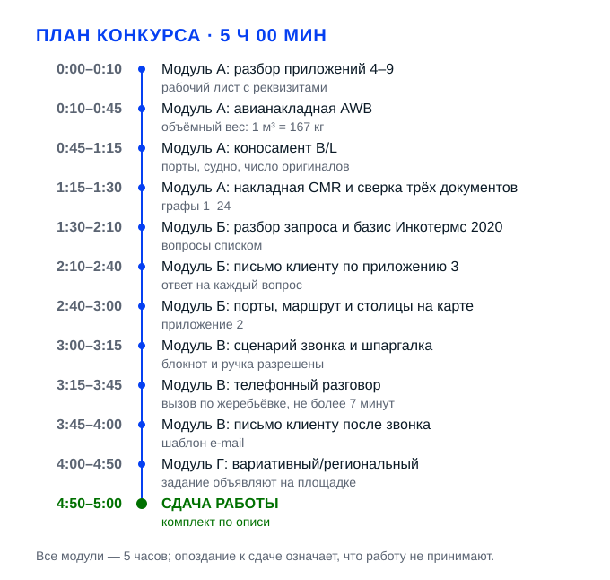
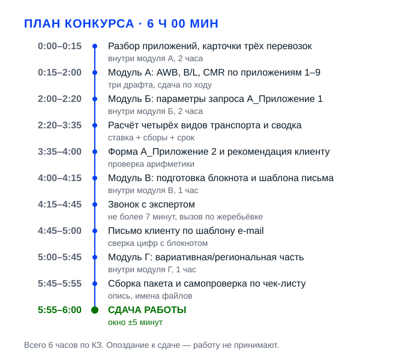
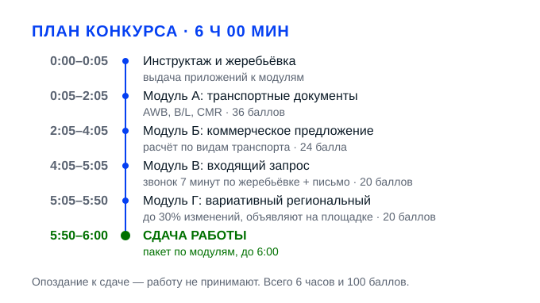

Экспедирование грузов (Р)
Задания ниже — официальные файлы «Абилимпикс» (источник: abilympics-russia.ru), разложенные по категориям. Решения написаны по тексту задания, регламенту и критериям оценки; в них указано, что именно проверяет эксперт.
Школьник
14–16 лет, базовый уровень заданияВыдержка из официального конкурсного задания: страницы, относящиеся к категории «Школьник» (стр. 7–10 источника).
Пошаговое решение
Компетенция «Экспедирование грузов» в категории «Школьники» — четыре модуля и 5 часов работы: 1 час 30 минут на транспортные документы, 1 час 30 минут на входящий запрос, 1 час на консультирование клиента и 1 час на вариативный региональный модуль. В модуле А вы специалист компании «Логистик-Т» и по шести коммерческим документам (приложения 4–9) заполняете три драфта по шаблонам 1–3: авианакладную AWB, морской коносамент B/L и автомобильную накладную CMR. В модуле Б вы сотрудник отдела продаж «ТрансЛогистик»: разбираете запрос клиента, отвечаете письмом по шаблону и наносите порты и маршрут на контурную карту. В модуле В — телефонный разговор не более 7 минут и письмо клиенту по итогам. Ошибки однотипные: перепутаны вес брутто и нетто, не посчитан объёмный вес, фрахт отмечен не по базису Инкотермс, в письме нет ответа на половину вопросов.

Задача 1. Разобрать девять приложений и выписать исходные данныеМодуль А · 1 ч 30 мин
Модуль А начинается не с бланка, а со стола. На нём лежат три шаблона транспортных документов (приложения 1, 2, 3) и шесть коммерческих документов (приложения 4–9), из которых только часть относится к вашей перевозке, а остальные — к соседним. Пока вы не разложили листы по кучкам и не выписали реквизиты в один рабочий лист, любой бланк заполняется наугад: глаз цепляется за первую знакомую строку, и в графу «вес брутто» попадает вес нетто из другой перевозки. Поэтому первая задача — навести порядок в бумагах и получить одну таблицу, из которой потом заполняются все три документа без повторного чтения приложений.
Действие 1.1. Разложить приложения по перевозкам
Шаг 1.1.1
Открываем папку модуля и раскладываем листы на две половины стола: слева три пустых шаблона — AWB, коносамент B/L и накладная CMR, справа шесть коммерческих документов (приложения 4, 5, 6, 7, 8, 9). Каждый лист подписываем стикером или карандашом в углу: «шаблон AWB», «инвойс», «упаковочный лист» — что именно это за документ. Шаблоны сразу откладываем и больше не трогаем: заполнять будем копии, чтобы не затереть бланк, который выдал эксперт.
На весь модуль А отведено 1 час 30 минут, и в этот час входят три готовых документа, а не поиск бумаг. Практика чемпионата простая: участник, который первые пять минут ищет нужное приложение, к концу модуля обычно сдаёт два документа из трёх, потому что третий всегда делается в спешке. Порядок на столе — это не педантизм, а способ уложиться во время без потери качества.
На столе ровно девять листов из задания, каждый подписан, шаблоны лежат отдельно от коммерческих документов и не заполнены. Если какого-то приложения нет — сразу поднимаем руку и говорим эксперту до начала работы, а не в середине модуля.
Самая частая ошибка — начать заполнять прямо в выданном шаблоне и вписать туда данные не той перевозки. Стереть ручку на бланке нельзя, а замена листа занимает время эксперта, которого потом не хватит на CMR. Вторая ошибка — свалить все девять листов в одну стопку и разбираться по ходу.
Эксперт подходит к рабочему месту в первые минуты модуля и смотрит именно на стол: разложены ли документы, работает ли участник с копией шаблона, есть ли у него черновик для выписок.
Шаг 1.1.2
Определяем, какая пара документов к какому виду транспорта относится. Признаки простые и почти не требуют догадок: если в бумагах стоят аэропорты, трёхбуквенные коды IATA и номер авианакладной — это авиаперевозка и документ AWB; если видны порты погрузки и выгрузки, название судна и рейса — морская перевозка и коносамент B/L; если указаны адреса складов, пункты пропуска и автомобильный номер — это CMR. Рядом с каждой кучкой кладём листок с названием документа, который будем заполнять.
Задание требует три разных документа, и они устроены по-разному: в AWB 11-значный номер с кодом авиакомпании, в B/L — порт погрузки и число оригиналов, в CMR — номера граф от 1 до 24. Если перепутать вид транспорта, все графы окажутся не на месте: например, «порт погрузки» будут искать в автомобильной накладной, где такого поля просто нет.
Для каждой перевозки вы можете вслух назвать вид транспорта и документ, который к ней относится, и показать строку в приложении, по которой это видно. Правило проверки: название документа должно подтверждаться минимум двумя признаками из текста, а не одним словом «доставка».
Классическая ошибка — заполнять CMR по морской перевозке, потому что бланк выглядит знакомо и заполняется быстрее. Вторая — считать, что все шесть приложений относятся к одной перевозке: тогда в графы попадут данные разных контрактов, и документы перестанут совпадать между собой.
Эксперт задаёт вопрос: чем отличается коносамент от авианакладной и почему для моря нужен именно B/L. Ответ по делу — признак того, что участник понимает, что заполняет.
Шаг 1.1.3
Заводим рабочий лист — обычный лист бумаги или таблицу на экране, где столбцы означают перевозки, а строки — реквизиты: продавец, покупатель, страна и город отправления, страна и город назначения, наименование груза, количество мест, вес брутто, вес нетто, объём, стоимость и валюта, условия поставки по Инкотермс 2020, номер контракта и дата. Заполняем постепенно, карандашом, чтобы можно было исправить. Внизу оставляем свободные строки — под то, что обнаружится позже.
В трёх бланках вместе больше полусотни граф, но берутся они из одного набора данных: название отправителя повторяется в AWB, в B/L и в CMR дословно. Если каждый раз искать его заново в шести приложениях, вы трижды прочитаете одни и те же бумаги и трижды ошибётесь по-разному. Один раз выписанные реквизиты — это ещё и способ себя проверить: расхождение видно сразу, в одной таблице.
В рабочем листе заполнена хотя бы одна строка на каждую перевозку, и по нему можно заполнить первый бланк, не открывая приложения. Проверьте себя так: закройте папку и назовите вес брутто первой перевозки — если не получается, строка не выписана.
Ошибка — выписывать реквизиты «в голове», рассчитывая на память. К третьему документу название покупателя вспоминается уже приблизительно, а сокращённое название компании в коносаменте читается как ошибка в стороне сделки. Вторая ошибка — выписывать только то, что уже понятно, и оставлять неясные графы пустыми без пометки.
Эксперт заглядывает в черновик и по нему видит, работает участник системно или заполняет бланки наугад. Аккуратный рабочий лист оценивается как часть организационных навыков.
Действие 1.2. Прочитать коммерческие документы и выписать реквизиты
Шаг 1.2.1
Берём инвойс — коммерческий счёт, главный документ сделки. Выписываем из него продавца и покупателя полностью, так, как они напечатаны, включая организационную форму и адрес: сокращать «ООО» до названия нельзя, в транспортных документах стороны должны читаться однозначно. Дальше — страна происхождения товара, валюта и общая стоимость, условия поставки по Инкотермс, номер и дата контракта, а также вес нетто и брутто по итогу счёта.
Инвойс — тот документ, на который ссылаются и авианакладная, и коносамент, и CMR: во всех трёх есть поле для номера счёта или приложения к нему. Ошибка в названии стороны или в стоимости тянет за собой ошибку сразу в трёх документах, поэтому выписывать надо дословно, а не «по смыслу».
В рабочем листе появились продавец, покупатель, страна, валюта, стоимость, условия поставки и вес. Сверьте: сумма цифрами и сумма прописью в инвойсе совпадают, дата и номер контракта читаются без догадок. Если в счёте стоит ссылка на приложение — найдите это приложение.
Частая ошибка — взять вес нетто вместо брутто: в инвойсе они стоят рядом, а в транспортных документах почти всегда нужен брутто, то есть вес с упаковкой. Вторая — переписать название компании так, как оно запомнилось, а не так, как напечатано, и потерять в нём слово «Ltd» или «GmbH».
Эксперт сверяет стороны сделки в ваших документах с инвойсом буква в букву. Это первое, что проверяют при оценке модуля А, потому что дальше проверять нечего, если стороны перепутаны.
Шаг 1.2.2
Открываем упаковочный лист и выписываем то, чего в инвойсе нет: количество грузовых мест, вид упаковки (картонные коробки, деревянные ящики, паллеты), габариты каждого места, вес брутто по позициям и итогом, объём в кубических метрах и маркировку — надписи и номера, нанесённые на упаковку. Маркировку переписываем посимвольно, вместе с косой чертой и дефисами.
В AWB, B/L и CMR есть отдельные графы «количество мест», «вид упаковки» и «вес брутто», и берутся они именно из упаковочного листа — это единственный документ, где указано, как груз физически уложен. Если перевозчик получит накладную с числом мест, не совпадающим с фактическим, документ считается недостоверным, а на чемпионате это прямая потеря баллов за заполнение.
В рабочем листе есть число мест, вид упаковки, вес брутто и объём. Проверьте арифметику: сумма весов по позициям должна давать итог, указанный внизу листа. Если не сходится на один-два килограмма — это нормально для округления, если на десятки — вы взяли не ту строку.
Ошибка — указать количество паллет вместо количества коробок на паллетах: на чемпионате это самый частый перекос, потому что в листе рядом стоят оба числа. Вторая — придумать объём, если габариты даны в сантиметрах, а графа требует кубические метры.
Эксперт сравнивает графу «количество мест» в вашем документе с упаковочным листом и смотрит, пересчитаны ли сантиметры в метры и килограммы в тонны там, где это нужно.
Шаг 1.2.3
Сверяем инвойс и упаковочный лист между собой по трём позициям: наименование груза, количество мест и вес брутто. Сверяем не «на глаз», а по строкам: берём позицию из счёта, находим её в упаковочном листе, сравниваем цифры и ставим галочку. Расхождения выписываем отдельно, на поля рабочего листа, с указанием, где какое значение стоит. Сверка идёт построчно, а не по общему впечатлению от документов.
Эти два документа готовят разные люди в разных отделах, и расхождения между ними — обычное дело в реальной логистике. На конкурсе расхождение почти всегда заложено специально: например, в счёте указано 12 мест, а в упаковочном листе — 10 плюс две паллеты. Кто сверяет, тот замечает и спрашивает; кто не сверяет — переносит ошибку в три документа сразу.
Все позиции отмечены, расхождения выписаны с адресом: «в инвойсе 12 мест, в упаковочном листе 10 коробок и 2 паллеты». Если расхождений нет, это тоже надо зафиксировать — тогда дальше работаем спокойно, зная, что источник один.
Ошибка — решить расхождение самому, «поправив» цифру в уме и нигде не отметив. Если эксперт спросит, откуда взялось число, объяснить будет нечего. Вторая — не заметить расхождение вовсе и заполнить документы по разным источникам.
Эксперт специально спрашивает, сверял ли участник документы и какое расхождение нашёл. Правильный ответ показывает, что человек читает бумаги, а не переписывает первое попавшееся число.
Шаг 1.2.4
Находим в контракте или в запросе условие поставки по Инкотермс 2020 и выписываем его трёхбуквенный код с указанием места: например, CIF Новороссийск или FCA Москва. По коду определяем, кто платит фрахт: при CIF, CFR, CPT и CIP фрахт оплачен отправителем, при EXW, FCA и FOB — покупателем. Из этого вывода сразу получаем, что писать в графах про оплату перевозки: «фрахт оплачен» или «фрахт к оплате».
Графа о фрахте в коносаменте и отметка о провозной плате в авианакладной заполняются не по желанию, а по базису поставки: перевозчик по документу видит, кто ему платит. Если при FOB написать «фрахт оплачен», документ противоречит контракту, и эксперт снимает баллы сразу за два критерия — за условие поставки и за расчётную часть.
Код Инкотермс выписан полностью, вместе с местом, и рядом записано, кто оплачивает фрахт и страхование по этому коду. Проверьте себя: можете назвать, в какой момент переходит риск гибели груза — при FOB на борту судна, при CPT в момент передачи первому перевозчику.
Ошибка — указать только три буквы без места: «CIF» без порта не значит ничего, потому что обязанности распределяются именно по точке. Вторая — перепутать CIF и CIP и написать «фрахт оплачен» там, где по условиям платит покупатель.
Эксперт в модуле А смотрит на связку «условие поставки — отметка о фрахте» и в модуле Б эту же связку спрашивает голосом. Ошибка здесь стоит баллов дважды.
Задача 2. Заполнить авианакладную, коносамент и накладную CMRМодуль А · 1 ч 30 мин
Вторая половина модуля А — сами бланки. Нужно получить три заполненных драфта: авианакладную AWB, морской коносамент B/L и автомобильную накладную CMR. Они не похожи друг на друга: в AWB 11-значный номер и графа оплачиваемого веса, где объём пересчитывается в килограммы по коэффициенту 167; в B/L важны порты, судно и число оригиналов; в CMR — номера граф от 1 до 24 и отметка перевозчика. Общее у них одно: все три заполняются из одного рабочего листа, выписанного в первой задаче, и все три должны совпадать между собой по сторонам, грузу и весу. Поэтому порядок такой: сначала AWB, потом B/L, потом CMR, а в конце — сверка комплекта.
Действие 2.1. Заполнить авианакладную AWB
Шаг 2.1.1
Кладём перед собой копию шаблона AWB и начинаем с верхней части. В графу отправителя вписываем название компании, адрес и телефон точно по инвойсу; в графу получателя — покупателя, тоже полностью, с индексом и городом. В правом верхнем углу ставим номер авианакладной: он состоит из 11 цифр — три цифры кода авиакомпании, семь цифр серийного номера и одна контрольная. Если номера в задании нет, берём тот, что указан в приложении, и не придумываем свой.
Авианакладная — документ, по которому груз принимают на борт, и номер в ней не украшение, а идентификатор перевозки: по нему груз ищут в системе авиакомпании. В модуле А на три документа отведено 90 минут, поэтому шапка заполняется сразу и начисто, без промежуточных вариантов: переписывать AWB целиком из-за одной буквы в адресе слишком дорого по времени.
Номер авианакладной содержит 11 цифр, стороны сделки переписаны дословно, адреса полные. Проверьте, что получатель в AWB — это покупатель из инвойса, а не плательщик или брокер: названия могут быть похожи, но роли разные.
Ошибка — вписать в графу получателя компанию, которая указана как плательщик или как уведомляемая сторона. Вторая — сочинить номер авианакладной «по образцу»: если в нём нет кода авиакомпании, документ выглядит самодельным, и эксперт это видит сразу.
Эксперт проверяет шапку AWB на соответствие инвойсу, обращая внимание на номер и на полноту адресов: именно здесь чаще всего стоят сокращения, которых в документе быть не должно.
Шаг 2.1.2
Заполняем маршрут и аэропорты. В графе аэропорта отправления пишем город и трёхбуквенный код IATA, в графе аэропорта назначения — то же для точки прилёта: например, Москва, SVO и Пекин, PEK. Ниже указываем первого перевозчика и рейс, если он дан в задании, а в графе маршрутизации — точки перегрузки, если перевозка не прямая. Коды берём из приложений, а не по памяти.
Аэропорты в авианакладной обозначаются кодами IATA, и это единственный способ, при котором документ однозначно читается в любой стране: городов с одинаковыми названиями в мире много, а коды не повторяются. Если в задании дана перевозка с перегрузкой, а маршрут указан прямой, документ противоречит сам себе — и по критерию заполнения это ошибка.
В графах аэропортов стоят города и коды IATA, маршрут соответствует схеме перевозки из приложения. Проверьте коды по таблице в приложении: две буквы вместо трёх или перестановка букв — типичная описка, которую глаз не ловит.
Ошибка — написать название аэропорта без кода или код без города: и то и другое считается неполным заполнением. Вторая — указать аэропорт назначения по стране, а не по городу, например «Китай» вместо «Пекин, PEK».
Эксперт сверяет коды IATA с приложением и смотрит, совпадает ли маршрут с заданной схемой перевозки, включая точки перегрузки. Он также смотрит, не перепутаны ли аэропорты местами.
Шаг 2.1.3
Переходим к весовым и тарифным графам. Вписываем количество мест, вес брутто в килограммах, объём, если он нужен, и рассчитываем объёмный вес: один кубический метр груза в авиаперевозке приравнивается к 167 килограммам, то есть объём в кубических метрах умножаем на 167. Из фактического и объёмного веса берём большее — это и есть оплачиваемый вес, который записывается в графу chargeable weight.
Авиакомпания возит не килограммы, а место в грузовом отсеке, поэтому лёгкий объёмный груз считается по объёмному весу. Если в накладной стоит только фактический вес, расчёт провозной платы не сходится, и эксперт фиксирует ошибку в расчётной части модуля А. Именно эта графа отличает заполненный документ от формально заполненного.
Объёмный вес посчитан и записан рядом с фактическим, в графе оплачиваемого веса стоит большее из двух значений. Пересчитайте один раз вручную на черновике: 0,8 кубического метра — это 134 килограмма объёмного веса, и если фактический вес 90 килограммов, платить будут за 134.
Ошибка — поставить в оплачиваемый вес фактический, не посчитав объёмный. Вторая — перепутать единицы: объём в сантиметрах, умноженный на 167, даёт абсурдные цифры, и документ становится неправдоподобным.
Эксперт проверяет именно расчёт: умножил ли участник объём на 167 и выбрал ли большее значение. Это одна из немногих граф, где видно не переписывание, а понимание.
Шаг 2.1.4
Заполняем описание груза и служебные отметки. В графе характера и количества груза пишем наименование так, как в инвойсе, число мест, вид упаковки и маркировку; отдельно, если требуется, указываем особые условия — например, «хрупкий груз» или температурный режим. В графе обработки отмечаем, что груз не требует специальных условий, если это так. Внизу ставим дату и место составления, подпись отправителя и, если предусмотрено шаблоном, подпись перевозчика.
Описание груза — это то, по чему груз идентифицируют при выдаче, и то, на что опирается страховка при утрате. Формулировки вроде «запчасти» без количества и упаковки делают документ бесполезным при споре. Дата и подпись превращают бланк в документ: без них это просто исписанный лист, и по критериям модуля А он не считается оформленным.
В описании есть наименование, количество мест, вид упаковки и маркировка; дата, место и подпись стоят на месте. Пройдите по всем графам шаблона сверху вниз и убедитесь, что ни одна не осталась пустой без объяснения: пустая графа допустима только там, где шаблон её не требует.
Ошибка — оставить пустыми графы, которые заполняются «по желанию»: на самом деле в AWB почти каждая графа обязательна. Вторая — описать груз своими словами, не совпадающими с инвойсом, и получить расхождение между документами одной перевозки.
Эксперт читает описание груза и сравнивает с инвойсом и упаковочным листом: наименование, число мест и вес должны совпадать дословно. Отдельно проверяется, совпадает ли описание груза с инвойсом дословно.
Действие 2.2. Заполнить морской коносамент B/L
Шаг 2.2.1
Берём шаблон коносамента и заполняем стороны и порты. Отправитель — продавец из инвойса, получатель — покупатель, отдельно указываем уведомляемую сторону, если она есть в задании. В графах порта погрузки и порта выгрузки пишем название порта и страну, затем название судна и номер рейса из приложения. Если перевозка идёт с перевалкой, в графе места доставки указываем конечный пункт.
Коносамент — товарораспорядительный документ: он подтверждает принятие груза к морской перевозке и даёт право получить груз в порту назначения. Порты в нём указываются словами, а не кодами, поэтому ошибка в названии порта означает, что груз «приехал не туда» по бумагам. На модуль А отведено 90 минут, и коносамент — самый объёмный из трёх документов.
Стороны совпадают с инвойсом, порты названы полностью с указанием страны, судно и рейс переписаны из приложения. Проверьте, что порт выгрузки — это именно порт, а не склад получателя: в морской перевозке это разные точки, и в коносаменте они стоят в разных графах.
Ошибка — указать в порту выгрузки город склада, до которого груз потом едет по суше: коносамент покрывает только море. Вторая — перепутать уведомляемую сторону с получателем, и тогда груз по документам ждёт не тот, кто его купил.
Эксперт проверяет три вещи подряд: стороны, порты, судно и рейс. Если порт выгрузки назван неточно, дальше документ уже не спасает. Если стороны перепутаны, дальше он документ почти не смотрит.
Шаг 2.2.2
Заполняем грузовую часть: маркировку и номера, количество и вид упаковки, описание груза, вес брутто в килограммах и объём в кубических метрах. Для морской перевозки объём считается в CBM — кубических метрах, и он важен не меньше веса: в контейнерных перевозках платят за место, а не только за тонны. Все значения берём из рабочего листа, а не из памяти.
В коносаменте вес и объём стоят рядом, и перевозчик по ним определяет, как груз разместить и сколько взять за перевозку. Если объём не указан, документ считается неполным, а для сборных грузов расчёт вообще невозможен. Именно на этих графах проверяется, умеет ли участник переводить сантиметры в метры и не путает ли брутто с нетто.
В грузовой части заполнены все пять позиций: маркировка, количество мест и вид упаковки, описание, вес брутто, объём. Сверьте вес и объём с упаковочным листом ещё раз: если расхождение есть, оно должно быть объяснено, а не просто переписано.
Ошибка — оставить объём пустым, потому что «в задании дан только вес». Вторая — пересчитать вес в тонны там, где графа требует килограммы: в коносаменте вес брутто даётся в килограммах, и «0,45» вместо «450» читается как ошибка в тысячу раз.
Эксперт сравнивает грузовую часть коносамента с упаковочным листом и отдельно смотрит на единицы измерения — это самая частая точка потери баллов в модуле А.
Шаг 2.2.3
Заполняем условия оплаты и число оригиналов. В графе фрахта ставим отметку «фрахт оплачен» или «фрахт к оплате» в зависимости от базиса поставки, выписанного в задаче 1. В графе числа оригиналов указываем, сколько оригинальных экземпляров выпущено: обычно три, и это число напечатано в шаблоне или в задании. Внизу — место и дата выпуска коносамента, подпись перевозчика или его агента.
Коносамент выпускается в нескольких оригиналах, и каждый из них — полноценный документ: получив груз по одному, остальные теряют силу. Поэтому число оригиналов указывается всегда, и путать его с количеством копий нельзя. Отметка о фрахте связана с Инкотермс: при CIF и CFR фрахт оплачен отправителем, при FOB — покупателем, и документ должен это отражать.
Стоит правильная отметка о фрахте, число оригиналов указано, место и дата выпуска заполнены, подпись на месте. Проверьте связку с задачей 1: если там записано FOB, в коносаменте не может стоять «фрахт оплачен».
Ошибка — поставить «фрахт оплачен» по привычке, не посмотрев базис поставки. Вторая — указать число оригиналов «1», потому что в шаблоне стоит единица как пример: расхождение с заданием сразу видно эксперту.
Эксперт смотрит на отметку о фрахте вместе с условием поставки — это парная проверка, и ошибка в одном месте обнуляет правильный ответ в другом. Число оригиналов он сверяет с заданием, а не с шаблоном.
Шаг 2.2.4
Проверяем коносамент на «чистоту» и подписываем. Чистый коносамент — это документ без оговорок о состоянии груза и упаковки: если в задании нет указаний на повреждения, никаких записей о них не добавляем. Затем читаем документ целиком, сверху вниз, как чужой: стороны, порты, груз, вес, объём, фрахт, оригиналы, дата, подпись. Проверку ведём с карандашом в руке и отмечаем каждую прочитанную графу.
Оговорка в коносаменте превращает его в «нечистый», и банк может отказать в оплате по аккредитиву — в реальной работе это остановка сделки. На конкурсе добавленная от себя запись «упаковка повреждена» воспринимается как выдумка: в задании такого факта нет. Чтение целиком нужно потому, что ошибки в коносаменте почти всегда находятся в последних графах, куда добираются в спешке.
В документе нет лишних оговорок, все графы заполнены, подпись и дата стоят. Прочитайте названия сторон вслух: на слух описки в латинице ловятся лучше, чем глазами. Если какая-то графа вызывает сомнение, вернитесь к рабочему листу и сверьте значение ещё раз.
Ошибка — дописать «груз без упаковки» или «возможны повреждения» из осторожности: документ становится нечистым и оценивается ниже. Вторая — поставить дату раньше даты погрузки, указанной в задании. Обе ошибки видны при первой же проверке документов.
Эксперт читает коносамент полностью и особое внимание обращает на отсутствие оговорок: именно чистый коносамент считается правильно оформленным. Отсутствие оговорок отмечается отдельно, как признак чистого коносамента.
Действие 2.3. Заполнить автомобильную накладную CMR
Шаг 2.3.1
Берём шаблон CMR и начинаем с граф 1–4. Графа 1 — отправитель: название, адрес, страна. Графа 2 — получатель: то же самое. Графа 3 — место разгрузки груза: город и адрес склада. Графа 4 — место и дата погрузки: город, откуда груз уходит, и дата, указанная в задании. Все данные берём из рабочего листа, а не из приложений: они уже выписаны и сверены.
CMR — накладная международной автомобильной перевозки, и её графы пронумерованы не случайно: по этим номерам документ читают на границе, в таможне и в суде. Первые четыре графы задают маршрут и стороны, и если в них ошибка, дальше документ проверяют заново с самого начала. На CMR у вас остаётся примерно четверть модуля А — 20–25 минут из 90.
В графах 1–4 стоят отправитель, получатель, место разгрузки и место с датой погрузки, совпадающие с инвойсом и заданием. Проверьте, что город в графе 4 — это место, где груз фактически приняли на машину, а не город продавца из шапки контракта.
Ошибка — перепутать графы 3 и 4: в одной место разгрузки, в другой место погрузки, а слова похожи. Вторая — указать в графе 1 только название компании без адреса и страны, хотя для международной перевозки страна обязательна.
Эксперт проверяет CMR по номерам граф, а не по смыслу: спрашивает, что стоит в графе 3 и что в графе 4, и по ответу видно, разбирается ли участник в структуре документа.
Шаг 2.3.2
Заполняем грузовые графы 6–12. В графе 6 — количество мест и вид упаковки, в графе 7 — наименование груза, в графе 8 — вес брутто в килограммах, в графах 10–12 — маркировка и номера, если они есть. Название груза пишем так, как в инвойсе, с указанием, что это за товар, а не общим словом «оборудование». Если мест несколько видов упаковки, перечисляем каждый вид отдельно.
Графа 8 с весом брутто — та, по которой на весовом контроле сверяют машину, и расхождение здесь означает простой на границе. Графа 7 должна читаться таможней: общее слово без конкретики вызывает вопросы и задерживает оформление. На конкурсе за эти графы дают баллы отдельно, потому что они проверяются механически — либо цифры совпадают с упаковочным листом, либо нет.
В графах 6–8 стоят количество мест, вид упаковки, наименование и вес брутто, совпадающие с упаковочным листом. Сверьте ещё раз число мест: если в CMR 10, а в упаковочном листе 10 коробок и 2 паллеты, надо писать 12 мест с пояснением по видам.
Ошибка — написать вес нетто: в CMR графа называется «вес брутто», и перевозчик отвечает за вес с упаковкой. Вторая — указать общее наименование «товары народного потребления», которого нет в инвойсе. Третья — сверить только итоговую цифру и не проверить строки по видам упаковки.
Эксперт сравнивает графы 6–8 с упаковочным листом построчно, поэтому здесь нельзя «примерно»: либо цифры совпадают, либо балл не ставится. Он также смотрит, нет ли в графе 7 общих слов вместо конкретного наименования товара.
Шаг 2.3.3
Заполняем графы 16–21 и 24. Графа 16 — перевозчик: название транспортной компании и адрес. Графы 17–18 — следующие перевозчики, если их нет, оставляем пустыми. Графа 19 — оговорки и замечания перевозчика: если в задании нет повреждений, ничего не пишем. Графа 21 — дата составления накладной, графа 24 — место и дата составления, а также подпись отправителя и перевозчика. Графы 13–15 заполняются только по указанию в задании, от себя их не трогаем.
Графа 19 — аналог «чистоты» коносамента: запись о повреждении груза делает накладную с оговоркой, и получатель может отказаться от груза. Пустые графы 13–15 — это нормально: они предназначены для указаний отправителя, которых в задании нет. Подпись и дата в графе 24 превращают бланк в документ, и без них CMR не принимается.
Перевозчик указан, лишних оговорок нет, дата и место составления заполнены, подписи стоят. Проверьте, что дата в графе 21 не раньше даты погрузки из графы 4: накладная не может быть составлена до того, как груз приняли.
Ошибка — заполнить графы 13–15 «чтобы не было пусто», придумав указания отправителя. Вторая — оставить графу 24 без подписи, решив, что её поставит перевозчик: в конкурсном задании вы оформляете драфт, и подпись отправителя нужна от вас.
Эксперт проверяет графу 19 на отсутствие оговорок и графу 24 на наличие даты и подписи — это две точки, где чаще всего теряют баллы в CMR. Подпись в графе 24 проверяется в первую очередь.
Шаг 2.3.4
Делаем финальную сверку трёх документов между собой. Кладём рядом AWB, B/L и CMR и сравниваем по списку: отправитель, получатель, наименование груза, количество мест, вес брутто, номер инвойса, дата. Все значения должны читаться одинаково, даже если документы относятся к разным перевозкам одного заказчика. Расхождения выписываем и исправляем сразу, пока есть время.
Эксперт оценивает модуль А как комплект: три документа одной работы не должны противоречить друг другу. Одинаковое название компании в трёх местах, написанное тремя способами, читается как небрежность, а разные веса по одному грузу — как ошибка в расчётах. Сверка занимает 5–7 минут и закрывает сразу несколько критериев.
Все три документа совпадают по сторонам, грузу, весу и номеру инвойса; расхождений не осталось. Прочитайте названия сторон в трёх документах подряд — так описка в одной букве видна сразу. Сверка идёт по списку, а не по памяти.
Ошибка — сдавать документы, не положив их рядом: каждый по отдельности выглядит нормально, а вместе они расходятся по весу и количеству мест. Вторая — исправлять расхождение только в одном документе и забыть про два других.
Эксперт при оценке модуля А раскладывает три документа рядом и сверяет именно так. Комплект, который не противоречит сам себе, получает баллы за все три.
Задача 3. Ответить на запрос клиента и нанести маршрут на картуМодуль Б · 1 ч 30 мин
Модуль Б — это работа с входящим запросом: приложение 1 с вопросами клиента, приложение 3 с шаблоном ответного письма и приложение 2 с контурной картой. Нужно разобрать вопросы, объяснить условия поставки по Инкотермс 2020 простыми словами, назвать порты, страны и столицы, а затем показать тот же маршрут на карте. Оценивают два результата сразу — письмо и карту, и они проверяются вместе: названия в письме должны совпадать с подписями на карте. Полтора часа хватает, если сначала выписать вопросы списком, а потом отвечать по пунктам, а не писать письмо с чистого листа.
Действие 3.1. Разобрать запрос клиента и условия поставки
Шаг 3.1.1
Модуль Б начинается с приложения 1 — запроса клиента. Читаем его дважды: первый раз целиком, чтобы понять ситуацию, второй — с карандашом, выписывая по пунктам, что клиент спрашивает. Выписываем факты отдельно от вопросов: что за груз, откуда и куда, какой базис поставки предложен, какие сроки названы, что клиент просит уточнить. Вопросы нумеруем, чтобы в ответном письме на каждый пришёлся свой абзац.
На модуль Б отведено 1 час 30 минут, и в него входят чтение запроса, письмо клиенту (приложение 3) и контурная карта (приложение 2). Если вопросы не выписаны списком, письмо получается пересказом запроса, и эксперт видит, что ни один вопрос не закрыт. Нумерованные вопросы — это ещё и каркас будущего письма.
У вас на листе столько же вопросов, сколько в запросе, каждый сформулирован одной строкой и с номером. Проверьте себя: можете ли вы по своему списку ответить, не открывая приложение 1. Если нет — вы выписали не всё.
Ошибка — читать запрос по диагонали и отвечать только на первый, самый заметный вопрос. В задании вопросы идут подряд, и часть из них спрятана в середине абзаца. Вторая — начать писать письмо, не выписав вопросы, и потерять два-три из них по дороге.
Эксперт в модуле Б проверяет ответное письмо на полноту: есть ли ответ на каждый вопрос запроса. Пропущенный вопрос — прямой минус баллов, даже если остальное написано хорошо.
Шаг 3.1.2
Разбираем базис поставки по Инкотермс 2020, который назван в запросе. Выписываем код, расшифровываем его словами и раскладываем на четыре вопроса: кто организует перевозку, кто оплачивает фрахт, кто оплачивает страхование, в какой момент риск гибели груза переходит к покупателю. Для морских условий — FOB, CFR, CIF — риск переходит на борту судна, для CPT и CIP — в момент передачи первому перевозчику.
Инкотермс — это система из одиннадцати кодов, которую одинаково понимают в разных странах, и именно её спрашивают в модуле Б. Клиент не всегда понимает, что стоит за тремя буквами, и задача специалиста — объяснить простыми словами, а не пересказать аббревиатуру. Ответ «CIF — это CIF» баллов не приносит.
По каждому базису у вас есть четыре ответа: перевозка, фрахт, страхование, переход риска. Проверьте на примере: при FOB продавец довозит груз до борта судна, дальше платит и отвечает покупатель; при CIF продавец платит фрахт и страховку до порта назначения.
Ошибка — перепутать CIF и CIP: оба включают страхование, но CIF только для моря и риск переходит на борту, а CIP годится для любого транспорта и риск переходит раньше. Вторая — сказать, что при FOB продавец платит фрахт: это самая частая ошибка новичков.
Эксперт в модуле Б задаёт уточняющий вопрос по базису — обычно про переход риска. Ответ по существу показывает, разбирается ли участник в Инкотермс или заучил буквы.
Шаг 3.1.3
Отдельно выписываем географическую часть: какие порты, страны и столицы нужно указать. В запросе обычно названы порт отправления и порт назначения, а также страны, через которые идёт маршрут. Для каждой страны находим столицу и записываем рядом с портом: это понадобится и в письме, и на контурной карте. Пользуемся атласом или картой в приложении 2, а не памятью.
Задание требует указать страны и столицы прямо в ответном письме, и это проверяется отдельно от текста письма. Ошибка в столице — самая обидная потеря: факт простой, но проверяется механически. Например, столица Турции — Анкара, а не Стамбул, хотя крупнейший порт страны именно там.
Для каждой страны в запросе выписаны столица и порт, и вы можете показать их на карте. Проверьте пары «страна — столица» по атласу: не менее половины ошибок в этом задании связаны с тем, что за столицу приняли крупнейший город.
Ошибка — назвать столицей крупнейший город страны: Стамбул вместо Анкары, Шанхай вместо Пекина, Нью-Йорк вместо Вашингтона. Вторая — перепутать страну и порт: писать «порт Анкара», хотя Анкара не имеет выхода к морю.
Эксперт проверяет географический блок по карте: порты, страны, столицы. Здесь важно не только знать, но и уметь показать. Если порт поставлен не на берег, он задаёт вопрос о том, где находится город.
Действие 3.2. Написать ответ клиенту по шаблону письма
Шаг 3.2.1
Открываем приложение 3 — шаблон ответного письма — и сначала читаем его структуру, а не начинаем печатать. В шаблоне есть обращение, блок ответов и подпись; если в нём предусмотрены конкретные поля, заполняем именно их, не меняя порядок. Письмо строим по своему списку вопросов: один абзац — один вопрос, в том же порядке, что в запросе. Первый абзац — благодарность за запрос и короткое подтверждение, что вы его получили и разобрали.
Шаблон в задании дан не для красоты: эксперт сверяет письмо с его структурой и смотрит, все ли обязательные элементы на месте — обращение, суть ответа, подпись с должностью и контактами. Письмо, написанное «свободно», часто теряет обращение и подпись, и это снимает баллы независимо от содержания.
В письме есть обращение по имени, ответы на все вопросы из списка, подпись и контакты, структура совпадает с шаблоном. Проверьте, что порядок абзацев совпадает с порядком вопросов в запросе: клиенту так проще читать, а эксперту — проверять.
Ошибка — писать письмо сплошным текстом без деления на абзацы: тогда ответ на третий вопрос теряется внутри. Вторая — забыть подпись и должность, потому что «и так понятно, кто пишет»: в деловой переписке это обязательный элемент.
Эксперт читает письмо целиком и отмечает, есть ли обращение, ответы по пунктам и подпись. Структура оценивается отдельно от правильности фактов. Он также отмечает, есть ли в письме контакты для ответа.
Шаг 3.2.2
Пишем содержательную часть: объясняем базис поставки простыми словами, отвечаем, кто организует перевозку, кто платит фрахт и страхование, когда переходит риск, и называем порты, страны и столицы. Формулировки держим короткими: одно предложение — одна мысль. Термины Инкотермс приводим полностью при первом упоминании, например «CIF (стоимость, страхование и фрахт)», чтобы клиент понял без словаря.
Клиент в запросе спрашивает не определение, а практический ответ: что ему делать и за что он платит. В модуле Б оценивают именно это — умение перевести условие поставки на язык действий. Ошибка в распределении расходов означает, что клиент получит неверный счёт, и на конкурсе такая ошибка считается грубой.
В письме по каждому базису названы перевозка, фрахт, страхование и переход риска, а порты, страны и столицы указаны полностью. Прочитайте свой ответ как клиент: понятно ли, кто и за что платит, без дополнительных вопросов.
Ошибка — переписать определение из справочника, не связав его с грузом из запроса. Вторая — назвать базис без места: «CIF» без порта назначения не отвечает на вопрос, до какой точки продавец платит. Переписанное определение без привязки к грузу баллов не приносит.
Эксперт ищет в письме связку «базис — расходы — риск» и проверяет, нет ли в ней противоречия. Именно этот блок отличает содержательный ответ от формального.
Шаг 3.2.3
Вычитываем письмо перед сдачей. Проверяем по списку: обращение по имени, ответ на каждый вопрос, правильные названия компаний и портов, отсутствие лишних обещаний вроде «сделаем в кратчайшие сроки», подпись с должностью и контактами. Отдельно проверяем цифры: если в письме названы сроки или стоимость, они должны совпадать с заданием. Затем читаем вслух — так ловятся пропущенные слова.
Письмо уходит клиенту, и исправить его потом нельзя: в отличие от черновика документа, отправленное письмо оценивается в том виде, в каком ушло. На модуль Б отведено 1 час 30 минут, и три-четыре минуты на вычитку всегда находятся — они дешевле, чем потеря баллов за описку в названии порта.
Все пункты списка отмечены галочкой, письмо прочитано вслух, цифры сверены с заданием. Проверьте адрес получателя: письмо должно уйти клиенту из запроса, а не в общую папку или самому себе. Тема письма должна читаться с первого взгляда.
Ошибка — отправить письмо, не перечитав: самая частая находка при вычитке — перепутанный порт или пропущенный вопрос из середины запроса. Вторая — оставить в теме письма заголовок шаблона вместо темы по существу.
Эксперт проверяет письмо после отправки, поэтому исправлений не будет: всё, что осталось в тексте, идёт в оценку. При вычитке он обращает внимание на названия портов и на отсутствие подсказок шаблона в тексте.
Действие 3.3. Нанести порты и маршрут на контурную карту
Шаг 3.3.1
Берём приложение 2 — контурную карту — и сначала подписываем то, что уже видно: материки, океаны, крупные моря. Затем находим порт отправления и порт назначения из запроса и ставим точки в нужных местах, подписывая их печатными буквами. Подпись ставим рядом с точкой, а не в стороне, и проводим от подписи короткую линию к точке, если место плотное. Подписи делаем печатными буквами, чтобы их можно было прочитать без догадок.
Карта оценивается отдельно от письма, и главное в ней — точность положения. Порт, поставленный на берег соседней страны, читается как незнание географии, даже если в письме всё написано правильно. На карту в модуле Б уходит часть времени, но она приносит баллы за география международных перевозок.
Обе точки стоят на берегу, в правильных странах, подписи читаются без напряжения. Проверьте по атласу: порт должен быть именно на побережье, а не внутри материка, даже если город крупный. Проверьте, что подписи не налезают друг на друга.
Ошибка — поставить точку в центре страны, потому что так удобнее подписать. Вторая — подписать порт мелким почерком в углу карты без привязки к точке: эксперт не обязан догадываться, какой город вы имели в виду.
Эксперт смотрит на карту вместе с письмом: порты, названные в письме, должны быть нанесены на карту, и наоборот. Он сравнивает точки с реальной береговой линией и подписи с названиями в письме.
Шаг 3.3.2
Проводим маршрут от порта отправления до порта назначения. Линию ведём по морю, а не по суше, огибая материки там, где это нужно: если перевозка идёт из Чёрного моря в Средиземное, линия проходит через проливы, а не через Европу. На линии ставим стрелку в сторону назначения, чтобы направление читалось без пояснений. Если в задании есть перевалка, отмечаем её точку и подписываем.
Маршрут на карте — это ответ на вопрос клиента «как груз поедет». Линия, проведённая по прямой через континент, показывает, что участник не представляет морскую перевозку. Направление стрелкой нужно потому, что по одной линии невозможно понять, откуда и куда идёт груз.
Линия идёт по воде, стрелка указывает на порт назначения, точки перевалки отмечены. Проверьте, что линия не пересекает материк и не проходит через Суэцкий канал, если перевозка идёт в другую сторону. Стрелка должна стоять у конечной точки.
Ошибка — рисовать прямую линию через материк: на карте это сразу видно и читается как ошибка в географии. Вторая — провести маршрут без стрелки, и тогда непонятно, какой порт откуда. Третья — нарисовать маршрут по суше там, где есть морской путь.
Эксперт проверяет маршрут на соответствие реальной морской трассе и наличие направления: линия без стрелки считается незавершённой. Линию, проведённую по суше, он отмечает сразу.
Шаг 3.3.3
Дополняем карту странами и столицами. Подписываем страны, через которые проходит маршрут или в которых находятся порты, и отдельно отмечаем столицы — звёздочкой или подчёркиванием, чтобы отличать их от других городов. Если места мало, подписываем столицы в легенде в углу карты, но тогда в письме должно быть то же написание. В конце проверяем, что все подписи читаются и не перекрывают друг друга.
Задание требует указать страны и столицы в ответном письме, а карта должна это подтверждать: расхождение между письмом и картой — типичная потеря баллов, потому что проверяют их вместе. Легенда нужна для плотных районов вроде Европы, где подписи физически не помещаются рядом с точками.
Страны и столицы подписаны, столицы отличимы от других городов, написания совпадают с письмом. Проверьте пары «порт — страна — столица» ещё раз по атласу, особенно для стран с крупными портовыми городами.
Ошибка — подписать столицу крупнейшим городом страны. Вторая — написать в письме одно название, а на карте другое, например «Пекин» и «Бейджин»: расхождение читается как небрежность. Третья — подписать страны, но забыть столицы.
Эксперт сверяет карту и письмо между собой: одинаковые названия, одинаковые страны, одинаковые столицы. Это парная проверка, и она стоит баллов в обоих блоках.
Задача 4. Провести разговор с клиентом и написать письмо по итогамМодуль В · 1 ч
Модуль В — единственная часть конкурса, где ответ звучит голосом. Эксперты приглашают участников по жеребьёвке с интервалом 7 минут, на сам разговор отводят не более 7 минут, и с собой разрешено взять блокнот и ручку. После звонка нужно написать клиенту письмо по шаблону e-mail с полученной информацией. Оценивают три вещи: как вы говорите, что отвечаете по условиям поставки и географии и насколько точно перенесли договорённости в письмо. Час модуля уходит на подготовку сценария, сам разговор и письмо — поэтому готовиться надо до того, как вас вызовут.
Действие 4.1. Подготовить сценарий разговора
Шаг 4.1.1
Готовимся к звонку заранее, не в момент приглашения. Берём блокнот и ручку — их разрешено взять с собой — и делим страницу на три колонки: что клиент спрашивает, что я отвечаю, какие цифры или названия называю. Заранее выписываем в третью колонку всё, что придётся вспоминать под напряжением: расшифровки базисов Инкотермс, названия портов, страны и столицы, название своей компании и должности.
Модуль В — единственная часть конкурса, где ответ звучит в реальном времени: не более 7 минут разговора, и переиграть его нельзя. Блокнот снимает половину стресса: под взглядом эксперта легко забыть, как называется порт, хотя минуту назад вы его писали. Подготовленная страница — это ваш внешний носитель памяти, и правило конкурса прямо разрешает им пользоваться.
Страница разделена на три колонки, в третьей выписаны базисы и география, и по ней можно отвечать, не вспоминая. Проверьте себя: проведите пальцем по колонке и мысленно произнесите ответ на каждый вопрос — если где-то спотыкаетесь, допишите.
Ошибка — выйти на разговор с пустым блокнотом, рассчитывая на память. Вторая — записать всё подряд, включая целые абзацы: во время разговора некогда читать длинный текст, нужны короткие опорные слова и цифры.
Эксперт видит, готовился ли участник: открытый блокнот с опорными записями и спокойные ответы читаются как подготовка, а поиск слов — как импровизация.
Шаг 4.1.2
Продумываем сценарий на семь минут. Первые тридцать секунд — приветствие и представление. Дальше две-три минуты — уточняющие вопросы: что за груз, откуда и куда, какой базис, что важнее — срок или цена. Затем три минуты — ответы по существу, и последняя минута — короткое резюме: что договорились, что вы пришлёте письмом, когда. Сценарий записываем пятью строками, по одной на этап.
Разговор ограничен семью минутами, и это ограничение работает против того, кто говорит без плана: половина времени уходит на вступление, а до главного вопроса дело не доходит. Эксперт оценивает структуру разговора — умеет ли участник вести беседу, а не только отвечать. Пять строк на бумаге держат разговор в рамках лучше, чем надежда на опыт.
Пять этапов записаны, на каждый отведено время, и вы можете назвать их по памяти. Проверьте, что в сценарии есть место вопросам клиента: если весь план состоит из вашего монолога, разговор не получится диалогом.
Ошибка — начинать сразу с расчёта, не выяснив, что клиенту нужно: в запросе детали есть, но часть уточняется голосом. Вторая — не оставить времени на резюме, и разговор заканчивается на полуслове. Без резюме разговор выглядит незаконченным.
Эксперт слушает разговор и отмечает, придерживается ли участник структуры: приветствие, вопросы, ответы, итог. Хаотичная беседа оценивается ниже даже при правильных фактах.
Шаг 4.1.3
Готовим короткую шпаргалку по тому, что спросят почти наверняка: расшифровка базиса из запроса, кто платит фрахт и страховку, когда переходит риск, порты и столицы. Записываем это своими словами, короткими фразами, чтобы можно было прочитать вслух без спотыканий. Шпаргалку держим на виду, но не читаем с листа целыми абзацами. Шпаргалку кладём перед собой и держим открытой на нужной странице.
Клиент в модуле В задаёт вопросы по условиям поставки и географии — это прямо указано в задании. Ответы на них должны быть готовы до звонка, потому что придумать их в прямом эфире почти невозможно. Своими словами — потому что заученная формулировка из справочника звучит неестественно и рассыпается от первого уточняющего вопроса.
На шпаргалке есть базис, распределение расходов, переход риска, порты и столицы, и всё записано коротко. Проверьте: прочитайте шпаргалку вслух за минуту — если не успеваете, она слишком длинная. Проверьте это перед вызовом, а не во время разговора.
Ошибка — взять на разговор распечатку учебника и читать из неё: эксперт сразу видит, что участник не понимает текст. Вторая — не подготовить географию, решив, что её не спросят. Третья — положить шпаргалку так далеко, что до неё не дотянуться.
Эксперт слушает, насколько свободно участник владеет терминами. Ответ «своими словами» ценится выше дословного чтения. Он смотрит, открыт ли блокнот и записаны ли в нём базисы и география.
Действие 4.2. Провести разговор с клиентом
Шаг 4.2.1
Когда эксперты приглашают вас по жеребьёвке, подходите с блокнотом и ручкой, садитесь ровно и начинаете с представления: название компании «ТрансЛогистик», ваше имя и должность специалиста по международной транспортной логистике. Затем короткая фраза о том, что вы получили запрос и готовы обсудить условия. Говорите в среднем темпе, не торопясь: семь минут — это дольше, чем кажется.
Первые тридцать секунд задают тон всей беседе, и эксперт оценивает именно их: понимает ли участник, что разговаривает с клиентом, а не с преподавателем. Представление по названию компании — не формальность: в задании вы сотрудник «ТрансЛогистик», и если этого не прозвучало, ролевая часть не выполнена.
Вы назвали компанию, имя и должность, поприветствовали клиента и обозначили тему разговора. Проверьте по реакции: если собеседник сразу перешёл к делу, вступление не затянулось. Долгая пауза в начале — сигнал, что вы говорите лишнее.
Ошибка — начать с «алло» и вопроса «что вам нужно», пропустив представление. Вторая — говорить слишком быстро от волнения: эксперт не успевает фиксировать ответы, а клиент переспрашивает. Третья — забыть назвать компанию, хотя в задании вы её сотрудник.
Эксперт оценивает вступление отдельно: приветствие, представление, обозначение темы. Это те тридцать секунд, которые задают оценку всей интерактивной части.
Шаг 4.2.2
Задаёте уточняющие вопросы и записываете ответы в блокнот. Спрашиваете по одному: что за груз и сколько мест, откуда и куда, какой базис поставки интересует, что важнее — срок или стоимость, есть ли особые требования к упаковке. После каждого ответа коротко повторяете услышанное: «то есть 12 паллет из Новороссийска в Мерсин, верно?» — так фиксируется договорённость и снимаются ошибки слуха.
Запись в блокнот — не формальность, а основа следующего шага: после звонка вы пишете письмо клиенту с полученной информацией, и брать её будет неоткуда, кроме своих записей. Переспрашивание защищает от самой обидной ошибки — перепутанного порта, который потом уйдёт в письмо и в расчёт.
В блокноте записаны груз, количество мест, порты, базис и приоритет клиента, и вы можете повторить их вслух. Проверьте, что записали не только цифры, но и то, что клиент просил уточнить. Записи делайте сразу, не откладывая на конец разговора.
Ошибка — слушать и не записывать, надеясь запомнить: через минуту после звонка детали стираются, а письмо надо писать сразу. Вторая — задавать по три вопроса в одном предложении, и тогда клиент отвечает только на последний.
Эксперт слушает, задаёт ли участник вопросы и фиксирует ли ответы. Пустой блокнот к концу разговора — заметный минус. Ему важно, записаны ли данные, которые потом попадут в письмо.
Шаг 4.2.3
Отвечаете по существу. По базису поставки объясняете, кто организует перевозку, кто платит фрахт и страхование, когда переходит риск; по географии называете порты, страны и столицы. Если данных для ответа нет — не придумываете цифру, а говорите прямо: «уточню и пришлю в письме в течение часа». Ответы держите короткими: одно-два предложения, затем пауза для вопроса.
В модуле В проверяют именно содержательность: понимает ли участник условия поставки и географию. Выдуманная цифра фрахта разрушает доверие быстрее, чем честное «уточню»: клиент в роли эксперта ловит такие ответы на раз. Честная граница знаний — тоже профессиональный навык, и он оценивается.
На каждый вопрос клиента прозвучал ответ, в ответах нет противоречий с письмом из модуля Б, а по неизвестным данным назван срок уточнения. Проверьте, что не пообещали того, чего не сможете сделать в письме.
Ошибка — назвать конкретную цену перевозки, которой нет в задании: это выдумка, и она сразу видна. Вторая — отвечать «не знаю» и замолкать, не предложив, как узнаете. Третья — отвечать вопросом на вопрос клиента: это читается как уход от ответа.
Эксперт задаёт один-два уточняющих вопроса, проверяя глубину: например, что изменится, если базис поменять с CIF на FOB. Ответ показывает реальное понимание.
Шаг 4.2.4
Завершаете разговор резюме. Коротко перечисляете, что услышали: груз, маршрут, базис, приоритет; говорите, что подготовите письмо с подтверждением и расчётом и пришлёте в течение часа; уточняете, на какой адрес отправлять. Затем благодарите за обращение и прощаетесь. Всё сказанное в резюме должно совпадать с записями в блокноте. Резюме произносим спокойно и не спеша, сверяясь с записями.
Резюме в конце — это проверка, что вы и клиент поняли друг друга одинаково, и одновременно заготовка письма: то, что прозвучало вслух, потом просто переносится в текст. Эксперт по резюме видит, умеет ли участник закрывать разговор, а не обрывать его. На семь минут времени резюме занимает не больше минуты.
Резюме прозвучало, адрес для письма уточнён, договорённость о сроке названа. Проверьте по блокноту: всё, что вы перечислили вслух, там записано, и наоборот — ничего из записанного не потерялось. Если что-то не записано, повторите вопрос до конца разговора.
Ошибка — закончить разговор на последнем ответе, без итога: клиент остаётся без понимания следующего шага. Вторая — пообещать письмо «сегодня» и не уточнить адрес, а потом отправить не туда. Третья — не поблагодарить за обращение.
Эксперт фиксирует, прозвучало ли резюме и назван ли следующий шаг. Это последнее, что он слышит, и оно остаётся в памяти оценки. Если резюме не прозвучало, разговор считается незавершённым.
Действие 4.3. Написать клиенту письмо по итогам звонка
Шаг 4.3.1
Открываем шаблон e-mail из задания и заполняем его, не меняя структуру. В теме письма пишем суть: подтверждение условий перевозки и расчёт по запросу, а не «письмо» или заголовок шаблона. В обращении — имя клиента, если оно прозвучало в разговоре, иначе вежливая форма. Первый абзац — благодарность за звонок и напоминание, о каком грузе шла речь, чтобы письмо можно было прочитать отдельно от разговора.
Письмо после звонка — обязательная часть модуля В: разговор оценивается отдельно, письмо отдельно, и без письма баллы за интерактивную часть теряются почти полностью. Тема письма — первое, что видит клиент, и по ней он решает, открывать ли его. Шаблон дан в задании, поэтому отклонение от структуры проверяется механически.
Тема письма отражает суть, обращение по имени, в первом абзаце назван груз и маршрут. Проверьте, что письмо понятно человеку, который не слышал разговора: он должен восстановить ситуацию по тексту. Проверьте, что тема укладывается в одну строку.
Ошибка — оставить тему из шаблона или написать «Добрый день!» без имени, хотя имя звучало в разговоре. Вторая — начать письмо сразу с цифр, без указания, о каком грузе идёт речь. Третья — перепутать в письме маршрут, о котором говорили по телефону.
Эксперт читает письмо после разговора и сверяет его с шаблоном: тема, обращение, структура. Отклонения от шаблона фиксируются. Он проверяет, есть ли в письме имя клиента и ссылка на разговор.
Шаг 4.3.2
Переносите в письмо записи из блокнота: груз и количество мест, порты, базис поставки, распределение расходов, сроки, о которых договорились. Каждую цифру сверяете с блокнотом, а не с памятью, и каждое название проверяете по написанию. Если в разговоре вы обещали что-то уточнить, в письме это должно прозвучать с конкретным сроком. В конце — подпись с именем, должностью и контактами.
Письмо фиксирует договорённость: если в нём цифра отличается от той, что звучала в разговоре, клиент получает два разных ответа, и виноват в этом специалист. Обещанное уточнение, названное с конкретным сроком, показывает, что участник управляет ситуацией, а не просто отвечает на вопросы.
Все данные в письме совпадают с записями в блокноте, обещанные уточнения названы со сроком, подпись полная. Проверьте написание портов и стран: они должны совпадать с картой из модуля Б, если перевозка та же.
Ошибка — перенести цифры по памяти и перепутать количество мест или порт. Вторая — написать «уточню позже» без срока: это читается как отказ от обязательства. Третья — перенести в письмо данные другой перевозки: в блокноте рядом могут оказаться записи по модулю Б.
Эксперт сверяет письмо с тем, что звучало в разговоре. Расхождение по ключевым данным — грузу, маршруту, базису — считается грубой ошибкой. Особенно внимательно он смотрит на цифры и названия портов.
Шаг 4.3.3
Отправляете письмо так, как требует задание: через шаблон, на указанный адрес или сохраняете в папку сдачи, если отправка не предусмотрена. Перед этим перечитываете текст вслух, проверяете вложения, если они нужны, и адрес получателя. После отправки убеждаетесь, что письмо ушло: смотрите папку «Отправленные» или подтверждение на экране. Отправку подтверждаем скриншотом, если этого требует задание.
Отправка — финальная точка модуля: письмо, которое осталось в черновиках, не оценивается вовсе. Проверка папки «Отправленные» занимает пять секунд и снимает риск, что адрес заполнен с ошибкой и письмо вернулось. На модуль В отведён 1 час, и на всё это время находится.
Письмо есть в «Отправленных» или в папке сдачи, адрес правильный, вложений не требуется или они приложены. Проверьте, что в письме нет служебных пометок шаблона вроде квадратных скобок с подсказками. Проверьте дату и время отправки.
Ошибка — закрыть шаблон, не отправив письмо, и уйти на следующий модуль. Вторая — оставить в тексте подсказки шаблона: «[имя клиента]» вместо имени выглядит как незаконченная работа. Третья — отправить письмо на адрес эксперта вместо клиента.
Эксперт проверяет факт отправки и содержимое отправленного письма, а не черновика. Пустая папка «Отправленные» — потеря баллов за весь модуль. Письмо, оставшееся в черновиках, он не рассматривает вовсе.
Задача 5. Войти в вариативный модуль и сдать комплект в срокМодуль Г · 1 ч
Последний час конкурса — вариативный региональный модуль, содержание которого объявляют на площадке, и сдача всей работы. Здесь баллы набираются не текстом, а организацией: понять задание с первой минуты, держать результаты в порядке и сдать комплект до сигнала. Все модули вместе занимают 5 часов, и финал приходится на последние минуты этого времени, когда править уже поздно, а собирать комплект надо быстро и без потерь.
Действие 5.1. Войти в вариативный модуль без потерь
Шаг 5.1.1
Модуль Г в задании назван вариативным и региональным, и его содержание объявляют непосредственно на площадке. Поэтому первое, что вы делаете перед его началом, — уточняете у эксперта формулировку задания, формат сдачи и время. Записываете в блокнот три вещи: что нужно сделать, в каком виде сдать, сколько времени. Если формулировка непонятна, задаёте уточняющий вопрос сразу, до старта, а не в середине работы.
На модуль Г отведён 1 час — столько же, сколько на консультирование клиента, и этого времени хватает только в том случае, если вы понимаете задачу с первой минуты. Уточнение до старта — нормальная практика: эксперты обязаны объяснить задание, и вопрос «в каком формате сдавать» не считается слабостью.
В блокноте записаны задача, формат сдачи и время окончания. Проверьте, что можете пересказать задание своими словами: если получается с трудом, уточните ещё раз. Уточните, сдаётся модуль Г отдельным файлом или входит в общий комплект.
Ошибка — начать работу, не поняв задание, и обнаружить несоответствие за десять минут до сдачи. Вторая — стесняться спросить и делать «как понял», потеряв баллы за формат. Третья — записать задание на слух и не переспросить формат сдачи.
Эксперт на старте модуля Г объясняет задание и следит, кто слушает, а кто начинает вслепую. Уточняющий вопрос по существу оценивается положительно. Он также отмечает, записал ли участник задание в блокнот.
Шаг 5.1.2
Перед модулем Г наводите порядок в рабочих файлах: все три транспортных документа, письмо клиенту, карта и письмо после звонка должны лежать в одной папке с понятными именами. Если работа велась на бумаге — листы складываются в один файл в порядке модулей А, Б, В. Ничего не удаляете: даже черновики могут понадобиться, если эксперт спросит, откуда взялась цифра.
Порядок в файлах экономит время не только в модуле Г, но и на сдаче: работу принимают комплектом, и поиск листа в стопке занимает минуты, которых в конце конкурса нет. Черновики — доказательство хода мысли, и по ним эксперт видит, как участник пришёл к результату.
Все результаты лежат в одной папке, имена файлов понятны без открытия, листы на бумаге сложены по порядку модулей. Проверьте, что не осталось файлов с именами «копия», «новый» и «итог_final». Проверьте, что открывается каждый файл.
Ошибка — держать документы в трёх разных папках и искать их на сдаче. Вторая — переименовать файлы в последний момент и потерять версию, которую проверял. Третья — оставить результаты в трёх разных папках, а на сдаче искать нужный файл по памяти.
Эксперт при сдаче смотрит, насколько быстро участник находит нужный документ. Порядок в файлах — часть организационных навыков. Ему важно, может ли участник назвать, где лежит каждый документ.
Действие 5.2. Сдать работу комплектом и в срок
Шаг 5.2.1
Проверяете комплектность по списку из задания. В нём: три транспортных документа модуля А — AWB, B/L, CMR; ответное письмо клиенту и контурная карта модуля Б; письмо после звонка модуля В; результат модуля Г. Каждый пункт отмечаете галочкой на листе и только потом считаете работу готовой. Если чего-то не хватает, лучше сдать недоделанное, чем не сдать ничего.
Оценка выставляется по комплекту, и отсутствующий документ обнуляет соответствующий критерий целиком: три заполненных документа из четырёх не дают «75 процентов», а дают ноль за один блок. Список комплектности занимает две минуты и закрывает самый дорогой риск финала — забытый лист на столе.
Все пункты отмечены, ни один документ не остался в черновиках. Проверьте папку и стол: недописанный вариант часто лежит рядом с готовым, и на сдачу уходит не тот. Сверяйтесь со списком, а не с памятью: на финале забывается именно то, что делали последним.
Ошибка — сдавать по памяти, не сверившись со списком: чаще всего забывают контурную карту, потому что она делается последней в модуле Б. Вторая — сдать черновик вместо чистовика. Третья — сдать документы без карты, решив, что она вспомогательная.
Эксперт принимает работу по описи и отмечает комплектность. Недостача фиксируется в протоколе и влияет на итоговый балл. Он сверяет комплект со списком и отмечает недостающие документы в протоколе.
Шаг 5.2.2
Приводите документы в сдаточный вид. Проверяете, что в каждом стоят дата, место и подпись там, где они предусмотрены; что имена файлов соответствуют требованию задания, если оно есть; что распечатанные листы не мятые и не перепутаны местами. Если работа сдаётся в электронном виде, открываете каждый файл и убеждаетесь, что он читается, а не сохранён пустым.
Документ без подписи или с пустым файлом формально не существует, и никакие правильные цифры внутри этого не исправят. На конкурсе встречается ситуация, когда участник уверен, что всё сделал, а на сдаче выясняется, что файл сохранился в формате, который не открывается. Проверка занимает три минуты и стоит десятков баллов.
В каждом документе есть дата и подпись, файлы открываются, имена соответствуют требованиям, листы в правильном порядке. Пролистайте комплект от первого листа до последнего, как это сделает эксперт. Проверьте, что в файлах нет пустых страниц.
Ошибка — оставить документы без даты, потому что «это же драфт». Вторая — сдать файл, который не открывается, и узнать об этом после конкурса. Третья — сдать листы в перепутанном порядке: эксперт тратит время на разбор и снижает оценку за оформление.
Эксперт проверяет оформление при приёмке: подписи, даты, читаемость файлов. Технические дефекты снижают оценку до содержательной проверки. Приёмку он ведёт по описи и отмечает каждый принятый документ.
Шаг 5.2.3
Сдаёте работу в отведённое время. Все модули вместе занимают 5 часов, и финал приходится на последние минуты этого времени: за пять минут до окончания вы уже не правите текст, а только собираете комплект и поднимаете руку. Если работа готова раньше — сдаёте раньше, не дожидаясь звонка, и остаётесь на месте до разрешения эксперта уйти. Перед сдачей убираем со стола всё лишнее, чтобы комплект лежал отдельно.
Время сдачи — жёсткая граница: работа, сданная после сигнала, может быть не принята вовсе, и тогда все пять часов работы не считаются. Пять минут запаса нужны потому, что последняя правка всегда затягивает: находится то запятая, то пропущенная графа. Сдавать раньше выгодно ещё и потому, что снимает риск технической заминки.
Работа сдана до сигнала, комплект полный, эксперт принял его и отметил время. Убедитесь, что ваша работа записана под вашим номером участника: перепутанный номер означает, что оценивают чужой комплект.
Ошибка — до последней секунды править CMR и сдать на минуту позже: работа может не приниматься. Вторая — уйти, не убедившись, что комплект принят и подписан. Третья — сдавать в спешке, не проверив, что комплект полный.
Эксперт фиксирует время сдачи в протоколе. Опоздание — единственная ошибка, которая обнуляет результат целиком, независимо от качества документов. Время он записывает по часам, а не по словам участника.
Студент
учащиеся колледжей и техникумовВыдержка из официального конкурсного задания: страницы, относящиеся к категории «Студент» (стр. 7–11 источника).
Пошаговое решение
Задание категории «Студенты» — это шесть часов работы логиста транспортно-экспедиторской компании: модуль А два часа на оформление авианакладной, коносамента и CMR по коммерческим документам, модуль Б два часа на расчёт коммерческих предложений разными видами транспорта, модуль В час на телефонный разговор с клиентом до семи минут и письмо по шаблону, модуль Г час на вариативную, региональную часть. Все четыре модуля связаны одним грузом и одними сторонами, поэтому вес, объём и условия поставки должны совпадать во всех документах, и это первое, что проверяют эксперты. Ошибки здесь почти никогда не бывают от незнания форм: проигрывают на рассинхроне данных, на непроверенной арифметике и на сдаче в последнюю минуту. Ниже задание разобрано по шагам — от разбора приложений до передачи пакета, с указанием, что именно смотреть в каждом документе и где обычно теряются баллы.

Задача 1. Оформить AWB, B/L и CMR по трём перевозкамМодуль А · 2 часа · шаблоны 1–3, коммерческие документы 4–9
В модуле А на столе лежат три пустых шаблона (приложения 1, 2, 3) и шесть коммерческих документов (приложения 4–9), из которых нужно собрать три драфта: авианакладную, коносамент и CMR. На всё отводится два часа, и их хватает только в том случае, если сначала документы разобраны по перевозкам, а потом бланки заполняются от первой графы к последней, без возвратов. Главный риск здесь не в знании форм, а в рассинхроне: вес в накладной не сходится с упаковочным листом, получатель взят из другого контракта, номер счёта потерян. Поэтому первые пятнадцать минут уходят на подготовку, а не на письмо.
Действие 1.1. Разобрать приложения и собрать карточку перевозки
Шаг 1.1.1
Раскладываем на столе все шесть коммерческих приложений и читаем пока только шапки: кто продавец, кто покупатель, какой маршрут, какая дата и какой номер счёта. Дальше группируем листы в три стопки по совпадающему номеру инвойса или контракта — это единственный надёжный признак принадлежности, потому что названия сторон в задании могут повторяться. На каждую стопку кладём сверху тот шаблон, который к ней относится, и подписываем карандашом «перевозка 1», «2», «3».
Шесть приложений на три перевозки означают по два документа на каждую, и перепутать их легче, чем кажется: инвойсы отличаются одной цифрой в номере и валютой расчёта. Если данные одной перевозки попадут в бланк другой, ошибка размножится по всем графам сразу, и эксперт увидит не опечатку, а нерабочий документ. Разбор занимает семь-восемь минут из двух часов и экономит гораздо больше на сверках.
На столе три стопки, в каждой не меньше двух листов, номера в шапках совпадают. Быстрый тест: возьмите любой лист и скажите вслух, к какой перевозке он относится и почему. Если ответ требует раздумий, значит номер не совпал и лист лежит не в своей стопке.
Чаще всего начинают с первого попавшегося инвойса и заполняют по нему все три бланка: вторая и третья перевозки остаются без данных, а время уже ушло. Вторая ошибка — держать листы общей кучей и искать нужный номер заново на каждой графе, теряя по минуте там, где нужны секунды.
Эксперт подходит в первые десять минут и смотрит именно на стол: разложены ли стопки, подписаны ли листы, лежит ли шаблон рядом с документами. Порядок на столе он читает как готовность работать с документами, а кучу — как импровизацию.
Шаг 1.1.2
Заводим на каждую перевозку карточку — половину листа А4, расчерченную на двенадцать полей: отправитель с адресом, получатель с адресом, страна происхождения, пункт отправления и пункт назначения, количество мест, вес брутто, вес нетто, объём, описание груза с упаковкой, условия поставки по Инкотермс, валюта и стоимость по инвойсу. Заполняем её один раз, читая инвойс и упаковочный лист построчно, и дальше работаем только с карточкой, а приложения откладываем в сторону.
Карточка — это единственный способ не возвращаться к шести листам на каждой из трёх форм. В авианакладной нужны вес и объём, в коносаменте — порты и число мест, в CMR — адреса и дата погрузки, и всё это уже выписано в одном месте. Кроме того, при сверке в конце модуля вы сравниваете бланк с карточкой, а не с четырьмя документами одновременно.
Все двенадцать полей заполнены, ни одного прочерка. Проверьте, что адреса выписаны полностью, с городом и индексом: сокращение «г. Москва» в графе получателя потом придётся дописывать, а место на бланке уже занято.
Самая дорогая ошибка — писать в карточку «примерно» и «как в инвойсе»: через полчаса вы не вспомните, что именно имелось в виду, и вернётесь к приложениям, потеряв заготовку. Вторая — брать описание груза одной фразой, тогда в графе «наименование» не хватит символов и придётся сокращать на бланке.
Эксперт смотрит, есть ли у участника рабочий черновик-выписка. Наличие карточки он отмечает как владение методом, а заполнение бланка прямо с инвойса — как риск ошибки.
Шаг 1.1.3
Пересчитываем вес и объём, не доверяя итоговой строке упаковочного листа. Складываем брутто по позициям и сравниваем с итогом; проверяем, что нетто плюс вес тары даёт брутто; для каждого места считаем объём в метрах, перемножая длину, ширину и высоту, и складываем по всем местам. Объём записываем в кубических метрах с тремя знаками после запятой, вес — в килограммах с одним.
От этих двух чисел зависит платная масса в авиаперевозке: один кубический метр условно приравнивается к 167 килограммам, и если объёмный вес больше фактического, тариф считается по нему. Ошибка в объёме на десять процентов — это ошибка в стоимости фрахта, а в модуле А она ещё и разведёт данные накладной и упаковочного листа, что видно при сверке.
Сумма по позициям совпадает с итогом листа, нетто плюс тара равно брутто, объём посчитан по каждому месту. Контрольная цифра: объёмный вес, то есть объём в кубометрах, умноженный на 167, должен быть сопоставим с фактическим весом — расхождение в разы означает ошибку в единицах, сантиметры вместо метров.
Типичная ошибка — взять габариты в сантиметрах и умножить как есть, получив объём в миллионах кубических сантиметров и абсурдный объёмный вес. Вторая — сложить брутто с нетто и получить двойной вес: проверка «нетто плюс тара» ловит это за пять секунд.
Эксперт проверяет сходимость весов выборочно, по одной перевозке из трёх. Если брутто в накладной не равно брутто в упаковочном листе, он фиксирует расхождение в первичных данных, и это стоит баллов независимо от аккуратности заполнения.
Действие 1.2. Заполнить авианакладную AWB
Шаг 1.2.1
Начинаем с граф 1–6: отправитель с полным адресом и телефоном, получатель, агент — транспортно-экспедиторская компания ООО «Логистик-Т» с её ИАТА-кодом, аэропорт отправления и аэропорт назначения. Названия аэропортов пишем так, как они стоят в задании, и рядом трёхбуквенный код: Уфа — UFA, Москва — SVO или DME, Санкт-Петербург — LED, Пекин — PEK, Шанхай — PVG, Франкфурт — FRA. Код и название должны относиться к одному и тому же городу.
Первые шесть граф — это идентификация перевозки, и именно по ним накладную сопоставляют с бронью и с грузом на складе. Если код аэропорта не соответствует названию, документ становится внутренне противоречивым, и груз по нему могут отправить не туда. Проверяющий смотрит эти графы первыми, потому что дальше вся логика тарифа строится на направлении.
Название и код читаются как одна пара, адреса полные, телефон отправителя указан. Сверьте по карточке перевозки: город отправления в накладной должен совпадать с городом продавца, а город назначения — с городом покупателя, а не с городом склада.
Ошибка новичка — поставить в графу агента собственную компанию-продавца или оставить её пустой, решив, что раз агент неизвестен, то и писать нечего. Вторая — взять код аэропорта по памяти и перепутать SVO с DME: оба московские, но это разные аэропорты, и в накладной они не взаимозаменяемы.
Эксперт сверяет графы 1–6 с инвойсом и с вводной задания. Особое внимание — графе агента: она показывает, понимает ли участник, что оформляет документ от имени экспедитора, а не отправителя.
Шаг 1.2.2
Заполняем графу 7 «Accounting information» и графу 8 «Handling information». В седьмую идёт то, что нужно для расчётов: номер контракта или счёта, способ оплаты, при необходимости номер заказа. В восьмую — то, что важно физически: «хрупкий груз, не кантовать», температурный режим с диапазоном, «верх», номер пломбы, если груз пломбируется, и ссылка на приложенные документы.
Эти две графы чаще всего оставляют пустыми, а они несут практический смысл: по седьмой бухгалтерия находит основание платежа, по восьмой склад и экипаж понимают, как обращаться с грузом. Если в задании есть температурный режим или требование «не кантовать», а в графе 8 этого нет, условие перевозки не зафиксировано, и претензию по повреждению предъявить будет не к чему.
В графе 7 стоит номер счёта или контракта из карточки, в графе 8 — все особые условия из задания, записанные коротко и по-английски, если бланк англоязычный. Проверьте, что нет сокращений, которые поймёте только вы: «т.р.» вместо «temperature regime plus 2 plus 8» ничего не скажет иностранному перевозчику.
Типичная ошибка — переписать в графу 8 всё описание груза, потому что «пустое место жалко»: графа короткая, текст обрежется, а действительно важное условие потеряется. Вторая — писать по-русски в англоязычном бланке, что делает документ непригодным для зарубежного участка.
Эксперт читает графу 8 на предмет полноты особых условий: температурный режим, хрупкость, опасность. Пропущенное условие из вводной он считает ошибкой переноса данных.
Шаг 1.2.3
Заполняем девятую графу — она разбита на подграфы и содержит самое важное: количество мест, вес брутто, признак килограммы или фунты, класс ставки, платный вес, ставку за килограмм, сумму и описание груза. Сначала ставим число мест и брутто из карточки, затем считаем платный вес: сравниваем фактический вес с объёмным, который равен объёму в кубометрах, умноженному на 167, и берём большее. Класс ставки выбираем по весу: до 45 килограммов — N, от 45 и выше — Q с указанием весовой категории 45, 100, 300, 500 или 1000.
Платный вес — это то, от чего считается фрахт, и главная содержательная часть модуля: именно здесь видно, понимает ли участник разницу между лёгким объёмным и тяжёлым компактным грузом. Класс ставки определяет, по какому тарифу пойдёт расчёт, и если поставить N при весе 120 килограммов, стоимость завысится, а документ разойдётся с прайсом. Описание груза должно совпадать с инвойсом дословно по смыслу и по числу мест.
Платный вес не меньше фактического и не меньше объёмного, арифметика видна: объём умножен на 167 и сравнён с весом. Класс ставки соответствует выбранной категории, число мест в графе 9 равно числу мест в упаковочном листе. Сумма в правой части графы равна платному весу, умноженному на ставку, и не меньше минимального сбора M.
Самая частая ошибка — взять фактический вес, не посчитав объёмный, хотя груз лёгкий и объёмный: платный вес занижается в разы, и перевозчик выставит счёт по своим данным. Вторая — перепутать места и позиции: в упаковочном листе четыре позиции, но восемь коробок, и в накладную должно идти восемь.
Эксперт пересчитывает платный вес на калькуляторе по одной перевозке. Если цифра не сходится, он смотрит, брал ли участник объём, и по этому одному расчёту делает вывод о понимании авиатарификации.
Шаг 1.2.4
Закрываем документ: графа 10 — коды сборов, если они есть в задании, графа 11 — подпись и дата, а также отметка о числе оригиналов и о том, кто именно подписывает, отправитель или агент. Дату ставим ту, что указана в задании как дата оформления, а не сегодняшнюю. После подписи проходим бланк сверху вниз второй раз и сверяем каждую цифру с карточкой перевозки.
Подпись и дата превращают черновик в документ, и в задании прямо сказано, что нужны драфты, то есть заполненные, но не обязательно окончательные формы. Второй проход по готовому бланку — обязательный приём: глаз, который ищет расхождения специально, находит то, что пропустил при заполнении. На три документа это минуты, а спасает он обычно две-три ошибки.
Подпись стоит, дата соответствует заданию, число оригиналов указано. При сверке проверьте четыре пары: отправитель в графе 1 и продавец в инвойсе, получатель в графе 2 и покупатель, аэропорты и маршрут, вес и число мест. Все четыре пары должны совпасть без исключений.
Ошибка — поставить сегодняшнюю дату вместо даты из задания: документ уезжает в другую хронологию, и эксперт видит, что участник не прочитал вводную. Вторая — подписать и сразу отложить, не сделав второго прохода, и оставить пустой графу, которую планировали заполнить «потом».
Эксперт проверяет подпись, дату и число оригиналов в последнюю очередь, когда содержание уже прочитано. Отсутствие подписи он трактует как незаконченный документ, даже если все графы заполнены верно.
Действие 1.3. Заполнить коносамент B/L
Шаг 1.3.1
В коносаменте первые три графы — участники: отправитель, получатель и уведомляемая сторона. Отправителя и получателя переносим из карточки без сокращений, а в графе «Notify party» указываем того, кого надо известить о прибытии груза, чаще всего это тот же получатель с полным адресом, телефоном и, если есть, номером налогоплательщика. Если в задании получатель указан как «to order», пишем именно так и не подставляем название компании.
Коносамент — товарораспорядительный документ, и от того, как заполнены эти три графы, зависит, кто сможет получить груз в порту. «To order» означает, что получатель определится позже по передаточной надписи, и замена этого указания на конкретную фирму меняет юридический смысл документа. Уведомляемая сторона нужна, чтобы груз не простоял в порту из-за того, что получатель не знал о прибытии.
Три графы заполнены, адреса полные, телефон уведомляемой стороны указан. Сверьте характер получателя с инвойсом: если там стоит «to order», в коносаменте не должно появиться название компании, и наоборот.
Самая частая ошибка — продублировать в уведомляемой стороне отправителя, потому что так быстрее. Тогда о прибытии груза узнает продавец, а покупатель останется ждать у моря погоды, и груз ляжет на хранение. Вторая — сократить длинное название компании до первых слов, из-за чего документ перестаёт совпадать с контрактом.
Эксперт сверяет графу получателя с инвойсом дословно и отдельно смотрит на уведомляемую сторону: её наличие и правильность он считает признаком практического опыта.
Шаг 1.3.2
Заполняем маршрутную часть: место приёма груза, порт погрузки, порт выгрузки, место доставки и судно с номером рейса. Порты пишем по названию и коду из справочника UN/LOCODE, а не по памяти, потому что похожих названий много: Санкт-Петербург — RULED, Новороссийск и Усть-Луга имеют свои коды, и подставлять их наугад нельзя. Если в задании перевозка мультимодальная, место приёма и порт погрузки не совпадают, и оба поля заполняются отдельно.
Маршрут в коносаменте — это не украшение, а границы ответственности перевозчика: он отвечает за груз с момента приёма в указанном месте и до выдачи в месте доставки. Если перепутать порт выгрузки, груз уйдёт в другой порт, а расходы на переадресовку лягут на того, кто оформлял документ. Судно и рейс нужны для отслеживания, и пустыми их оставляют только в коносаменте на условиях «до востребования».
Пять полей маршрута заполнены, названия портов и коды согласованы между собой. Проверьте логику: место приёма — это склад или терминал внутри страны, порт погрузки — морской порт, и они не должны совпадать, если в задании есть внутреннее плечо.
Типичная ошибка — поставить в порт выгрузки город получателя, а не порт: доставка до двери оформляется отдельной строкой, а порт остаётся портом. Вторая — оставить графу судна пустой, хотя в задании указан конкретный рейс.
Эксперт проверяет маршрут на географическую связность: страна, порт, код. Порт, не соответствующий стране получателя, он считает грубой ошибкой, потому что она означает непонимание географии перевозки.
Шаг 1.3.3
Заполняем товарный блок: номера контейнеров и пломб, маркировку, число и вид упаковки, описание груза, вес брутто и объём. Контейнер записываем полностью, с типоразмером: двадцатифутовый обозначается как 20'DV, сорокафутовый — 40'DV, сорокафутовый повышенной вместимости — 40'HC. Номер пломбы переносим из задания посимвольно, а описание груза даём так, чтобы оно совпадало с инвойсом по наименованию и не противоречило упаковочному листу по числу мест.
Этот блок — предмет спора при недостаче и повреждении: по нему сверяют, что именно было погружено и в каком количестве. Номер контейнера и пломбы — единственная связка между документом и физическим ящиком, и ошибка в одном символе делает эту связку нерабочей. Типоразмер важен потому, что от него зависит и вместимость, и тариф: в двадцатифутовый входит около 28 кубометров полезного объёма, в сорокафутовый — около 58.
Номер контейнера состоит из четырёхбуквенного префикса владельца и семи цифр, проверьте, что не потеряли символ при переносе. Пломба записана полностью, вес и объём совпадают с карточкой, число мест равно числу мест в упаковочном листе. Если объём груза больше полезного объёма контейнера, значит либо ошибка в расчёте, либо контейнер выбран неверно.
Частая ошибка — округлить объём до целого кубометра «для аккуратности»: при плотном грузе это сразу несколько процентов, и данные расходятся с упаковочным листом. Вторая — переписать номер пломбы с чужого образца в шаблоне, не заметив, что в задании он другой.
Эксперт сверяет номера контейнера и пломбы посимвольно, это одна из немногих граф, где он смотрит именно на символы. Ошибка здесь считается грубой, потому что документ перестаёт быть средством идентификации груза.
Шаг 1.3.4
Закрываем коносамент условиями оплаты фрахта и выдачей: в графе о фрахте ставим «prepaid», если фрахт оплачен отправителем, или «collect», если его платит получатель, и это напрямую следует из условий поставки. Дальше указываем место и дату выдачи, число оригиналов — как правило три, — и подпись с указанием, от чьего имени она поставлена. Условия поставки на этом этапе уже определены в задании, поэтому решение об оплате не выбирается по вкусу, а выводится из них.
Связка жёсткая: при FOB, FAS и FCA основную перевозку оплачивает покупатель, значит фрахт идёт «collect»; при CFR, CIF, CPT и CIP платит продавец, и в коносаменте стоит «prepaid». Перепутать эту отметку — значит выставить счёт не той стороне, а на конкурсе показать, что участник не связывает Инкотермс с транспортным документом. Число оригиналов важно: каждый оригинал — товарораспорядительный документ, и по одному из них груз уже можно забрать.
Отметка об оплате согласуется с условием поставки из карточки, место и дата выдачи заполнены, число оригиналов указано. Проверьте по правилу: если по условиям поставки доставку организует продавец, отметка «collect» будет ошибкой, и наоборот.
Самая частая ошибка — механически ставить «prepaid» во всех трёх перевозках, не глядя на Инкотермс: в задании условия поставки разные, и в одной из перевозок счёт должен уйти получателю. Вторая — не указать число оригиналов, из-за чего непонятно, сколько экземпляров существует и все ли они в обороте.
Эксперт смотрит именно на связку «условие поставки — отметка о фрахте»: это одна из немногих граф, где видно не умение копировать, а понимание экономики перевозки.
Действие 1.4. Заполнить CMR
Шаг 1.4.1
В CMR первые графы — отправитель, получатель, место доставки и место и дата погрузки. Заполняем их из карточки, причём место погрузки пишем с точностью до адреса склада: именно от этой даты и точки отсчитывается ответственность перевозчика по Конвенции о договоре международной дорожной перевозки грузов. Если в задании указано, что груз забирают со склада продавца, а выгрузка идёт на складе покупателя, оба адреса должны стоять полностью, с городом и страной.
CMR оформляется на международную автомобильную перевозку, и её графы читают на границе и на таможне. Место и дата погрузки — это точка, с которой начинается ответственность перевозчика, а место доставки определяет, где она заканчивается. Если дата погрузки не совпадает с датой в заявке или в товарной накладной, на границе возникают вопросы, а на конкурсе — потеря баллов за невнимательность к первичным данным.
Четыре графы заполнены, адреса полные, дата погрузки совпадает с датой в задании. Сверьте страну получателя с маршрутом: если по заданию груз едет из России в Казахстан, то и в CMR, и в заявке должна стоять одна и та же пара стран.
Ошибка — указать в месте доставки только город, без адреса склада: водитель приедет в город и будет искать получателя, а время доставки в CMR уже зафиксировано. Вторая — поставить дату оформления вместо даты погрузки, и тогда документ не совпадёт с фактическим началом перевозки.
Эксперт сверяет дату погрузки с вводной задания. Расхождение в один день он фиксирует отдельно, потому что оно означает, что участник не различает дату оформления и дату приёма груза.
Шаг 1.4.2
Заполняем товарную часть: приложенные документы, число и вид мест, описание груза, вес брутто и объём. В графе о приложенных документах перечисляем то, что реально едет с грузом: инвойс с номером и датой, упаковочный лист, при необходимости сертификат. Вид упаковки пишем конкретно — «картонные коробки на паллетах», а не «места»: от формулировки зависит, как груз будут пересчитывать при выдаче.
Этот блок CMR — основание для расчёта ответственности: по Конвенции предел ответственности перевозчика считается за килограмм веса, поэтому именно вес брутто определяет сумму возмещения при утрате. Неточное описание упаковки мешает пересчёту мест при выдаче, и недостача обнаруживается уже после того, как водитель уехал. Перечисление приложенных документов показывает таможне, что груз оформлен.
Число мест совпадает с упаковочным листом, вес брутто — с карточкой, вид упаковки описан словами, а не цифрой. Проверьте, что в графе приложенных документов стоят номера и даты, а не просто «инвойс»: без номера документ не идентифицируется.
Типичная ошибка — написать «груз согласно инвойсу» вместо описания: таможня такую ссылку не принимает, и машина стоит на границе. Вторая — указать вес нетто вместо брутто, из-за чего предел ответственности занижается и расчёт при утрате идёт по неверной базе.
Эксперт проверяет вес брутто и число мест по упаковочному листу, а формулировку описания читает на предмет конкретности. Ссылку вместо описания он считает незаполненной графой.
Шаг 1.4.3
Заполняем графы указаний и оговорок: указания отправителя, оговорки перевозчика, сведения о перевозчике и о последующем перевозчике. В графе указаний пишем то, что отправитель поручает сделать с грузом, — обычно это таможенное оформление и запрет перегрузки без согласования. В графе оговорок перевозчика ставим то, что он зафиксировал при приёме: например, «упаковка имеет следы влаги» или «погрузка производилась силами отправителя».
Эти графы кажутся формальностью, но именно в них фиксируется, кто что заметил до начала движения. Оговорка перевозчика при приёме защищает его от претензии за повреждение, которого он не совершал, а отсутствие оговорки при явном дефекте упаковки переносит спор на него. На конкурсе проверяется понимание, что документ заполняется двумя сторонами, а не только отправителем.
Графы заполнены по смыслу задания: если в вводной сказано, что упаковка повреждена или груз принят без проверки содержимого, это должно быть отражено. Проверьте, что сведения о перевозчике совпадают с тем, кто указан в задании, а не с вашей компанией-экспедитором.
Частая ошибка — оставить графу оговорок пустой, потому что «перевозчик — это я»: в задании перевозчик отдельная сторона, и её данные нужны. Вторая — вписать в указания отправителя свои собственные решения, которых в задании не было, и создать условие, которое потом нечем подтвердить.
Эксперт смотрит на графы перевозчика и оговорок выборочно, но именно они показывают, понимает ли участник распределение ответственности между сторонами перевозки.
Шаг 1.4.4
Закрываем CMR: тариф и провозные платежи, место и дата составления, подписи отправителя и перевозчика, а также графа получателя о получении груза, которая при оформлении драфта остаётся пустой. Проверяем, что экземпляров три: первый остаётся у отправителя, второй едет с грузом, третий — у перевозчика. Дату составления ставим по заданию и убеждаемся, что она не раньше даты погрузки.
Три экземпляра — не формальность, а требование Конвенции: каждый участник перевозки должен иметь свой экземпляр с одинаковым содержанием. Графа о получении груза заполняется получателем при выдаче, и если поставить там подпись заранее, документ становится недостоверным, а это уже вопрос к добросовестности оформления. Тариф и платежи показывают, на каких условиях перевозка передана исполнителю.
Три экземпляра распечатаны или заполнены, содержание в них идентично, графа получателя пустая, подписи отправителя и перевозчика стоят. Сверьте даты: составление не может быть раньше погрузки, а номер CMR в трёх экземплярах один и тот же.
Ошибка — заполнить один экземпляр и считать, что остальные «сделают с него»: в конкурсной работе сдаются все три, и отсутствие двух читается как невыполненное задание. Вторая — заранее подписать получение груза получателем, чего в момент оформления произойти не могло.
Эксперт пересчитывает экземпляры и проверяет, что графа получателя не заполнена. Это одна из тех деталей, по которым он отличает участника, работавшего с реальными документами, от того, кто заполнял форму по образцу.
Задача 2. Рассчитать коммерческие предложения по видам транспортаМодуль Б · 2 часа · запрос A_Приложение 1, форма A_Приложение 2
В модуле Б вы получаете от руководителя запрос клиента (A_Приложение 1) и должны посчитать стоимость перевозки несколькими видами транспорта в специальной форме (A_Приложение 2). Здесь проверяется не умение считать в столбик, а способность разложить ставку на составляющие: линейный тариф, сборы терминала, оформление документов, страхование, и свести всё это в предложение, которое можно отправить клиенту. Два часа даются с запасом, но запас исчезает, если начать считать до того, как выписаны все параметры запроса.
Действие 2.1. Разобрать запрос и выписать параметры перевозки
Шаг 2.1.1
Читаем запрос целиком, не перескакивая, и выписываем на отдельный лист восемь параметров: откуда и куда, характер груза, вес и объём, требуемый срок, условия поставки, особые требования вроде температурного режима или опасного класса, валюта расчёта и кто оплачивает перевозку. Каждый параметр подтверждаем ссылкой на место в запросе, чтобы потом было видно, откуда взята цифра. Если параметра в запросе нет, ставим прочерк и выносим его в список вопросов клиенту.
Расчёт начинается с параметров, а не с цифр: тариф зависит от расстояния, веса, срочности и условий поставки, и пропущенный параметр гарантированно превратится в ошибку в форме. Условия поставки определяют, какие сборы вообще входят в вашу ставку, а валюта — по какому курсу пересчитывать. Прочерк вместо догадки — правильное решение: допущение, записанное явно, эксперт засчитывает, а подставленное молча — нет.
Восемь строк заполнены, у каждой есть ссылка на фрагмент запроса. Проверьте сходимость: если груз 12 тонн и 40 кубометров, это плотный груз, и вариант с авиаперевозкой по объёму будет заведомо дорогим — такие выводы полезно зафиксировать сразу, они пригодятся при выборе рекомендации.
Типичная ошибка — начать считать ставку по памяти о похожей перевозке, не выписав параметры: в форме потом оказывается маршрут из другого задания. Вторая — додумать отсутствующий вес «примерно сорок тонн» и построить на этом весь расчёт.
Эксперт смотрит, есть ли у участника выписка параметров. Он подходит в первые пятнадцать минут модуля и по одному взгляду на лист понимает, разобрал участник запрос или начал считать наугад.
Шаг 2.1.2
Определяем, какие виды транспорта вообще применимы к этому запросу, и отбрасываем невозможные. Смотрим на три вещи: география, то есть есть ли между пунктами морское сообщение, железная дорога или аэропорт; срок, потому что морем за неделю через океан не добраться; характер груза, потому что опасный, скоропортящийся или негабаритный груз резко сужает выбор. В форме A_Приложение 2 обычно несколько строк под разные виды, и заполнять нужно те, которые в задании перечислены, а не только удобные.
Задание прямо требует рассчитать стоимость перевозки различными видами транспорта и в соответствии с видами и условиями транспортировки, поэтому произвольное сокращение списка — это невыполненная часть модуля. Кроме того, обоснованный отказ от варианта с указанием причины показывает понимание предмета лучше, чем молчаливое отсутствие строки.
Для каждого вида транспорта из задания есть решение: считаем или аргументированно исключаем. Проверьте, что причина исключения конкретна — «нет железнодорожного сообщения с этим портом» или «срок 5 дней не выполняется морем», а не «дорого».
Ошибка — оставить строку пустой без объяснения: в отчёте это выглядит как незавершённый расчёт. Вторая — посчитать все четыре вида, потратив на это час, хотя по запросу клиенту нужны два, и не успеть оформить форму.
Эксперт оценивает полноту покрытия: все виды транспорта, названные в задании, должны быть либо посчитаны, либо объяснённо исключены. Молчание он не засчитывает.
Шаг 2.1.3
Сверяем запрос с формой A_Приложение 2: в форме есть поля, которых в запросе может не быть, — например, тип подвижного состава, срок доставки в днях, стоимость страхования или ставка НДС. Для каждого такого поля решаем, чем его заполнить: значением из задания, значением из прайса организатора или собственным допущением, которое надо явно подписать. Допущения выписываем отдельным блоком под расчётом, чтобы эксперт видел, где кончаются данные и начинаются предположения.
Форма проверяется построчно, и пустая ячейка читается как пропуск, даже если заполнить её было нечем. Явное допущение — нормальная практика в реальной работе: логист всегда оговаривает, что ставка действительна при определённых условиях. Молчаливая подстановка цифры из головы — это уже ошибка, потому что проверить её происхождение невозможно.
Ни одной пустой ячейки: в каждой либо данные задания, либо подписанное допущение. Проверьте, что список допущений не длиннее пяти строк — если больше, значит запрос прочитан невнимательно и часть данных в нём всё-таки была.
Частая ошибка — заполнить спорное поле «наугад» и не отметить: при проверке выясняется, что цифра не соответствует ни заданию, ни прайсу, и вся строка считается неверной. Вторая — тащить допущение из одного вида транспорта в другой, где оно уже не работает.
Эксперт смотрит на блок допущений как на признак профессиональной аккуратности. Он отдельно отмечает, совпадают ли допущения с условиями, заданными в вводной.
Действие 2.2. Посчитать стоимость по каждому виду транспорта
Шаг 2.2.1
Считаем автомобильный вариант: берём расстояние по маршруту из задания или по карте, умножаем на ставку за километр для нужного типа подвижного состава, прибавляем погрузку и разгрузку, оформление CMR, при необходимости страхование и таможенное сопровождение. Для тентованной фуры грузоподъёмностью 20 тонн ориентир по России — 35–55 рублей за километр, по Европе — 1,1–1,4 евро за километр, но подставлять надо те ставки, которые даны в прайсе организатора, а не эти ориентиры.
Автоперевозка — самый частый вариант в задании, потому что она гибкая по маршруту и срокам, и её расчёт проще всего проверить. Именно на ней эксперт видит, умеет ли участник отличать линейный тариф от сборов: если в строке стоит одна цифра без расшифровки, проверить её нельзя, и баллы за расчёт снижаются. Ставка за километр зависит от загрузки: порожний рейс в одну сторону стоит дороже, чем парная загрузка.
Строка разложена минимум на три составляющие: линейный тариф, погрузо-разгрузочные работы, оформление документов. Расстояние указано и совпадает с маршрутом из задания. Проверьте контрольной суммой: при 1500 километрах и ставке 45 рублей линейная часть должна быть около 67 500 рублей, и если получилось 6 750, то потерян ноль.
Типичная ошибка — считать только километры и забыть про погрузку, разгрузку и оформление, из-за чего итог занижается на десять-пятнадцать процентов. Вторая — взять ставку за километр для другого типа машины: для рефрижератора или низкорамника она выше, и расчёт перестаёт соответствовать грузу.
Эксперт пересчитывает одну строку целиком, от расстояния до итога. Если составляющие не выделены, он ставит балл за итог, но снимает за методику, и это видно в оценочном листе.
Шаг 2.2.2
Считаем авиационный вариант: определяем платный вес как большее из фактического и объёмного, где объёмный вес равен объёму в кубометрах, умноженному на 167, выбираем тариф по весовой категории — до 45 килограммов действует нормальный тариф N, от 45 и выше количественный Q с порогами 45, 100, 300, 500 и 1000 килограммов, — и прибавляем топливный сбор, сбор за безопасность, сбор за оформление авианакладной и терминальные сборы в аэропортах отправления и назначения.
Авиаперевозка в этом модуле нужна как вариант для срочного или дорогого груза, и её расчёт показывает, понимает ли участник авиатарификацию. Ключевая ошибка здесь — считать по фактическому весу лёгкий объёмный груз: платный вес тогда занижается в разы, и предложение клиенту оказывается невыполнимым. Весовые пороги важны потому, что при весе 46 килограммов тариф Q на весь вес может дать меньшую сумму, чем тариф N.
Платный вес больше или равен и фактическому, и объёмному. Тариф выбран по категории, в которую попадает платный вес, и указано, какая это категория. Проверьте пограничный случай: если платный вес 44 килограмма, сравните стоимость по N и по Q на 45 — иногда выгоднее округлить вверх.
Ошибка — забыть топливный и терминальные сборы, из-за чего итог расходится с прайсом на двадцать-тридцать процентов. Вторая — применить тариф Q к весу, который до порога не дотягивает, и получить необоснованно низкую ставку.
Эксперт проверяет расчёт платного веса и выбор весовой категории. Это две точки, где авиационный расчёт либо верен, либо рассыпается целиком. Отдельно он смотрит, указан ли в строке сам платный вес, а не только итог.
Шаг 2.2.3
Считаем морской и железнодорожный варианты, если они есть в задании. По морю ставка берётся за контейнер целиком, а не за килограмм: определяем типоразмер по объёму и весу груза, помня, что в двадцатифутовый входит около 28 кубометров полезного объёма и до 21–22 тонн груза, в сорокафутовый — около 58 кубометров, — и прибавляем терминальные сборы в портах, сбор за оформление коносамента, экспедиторские услуги и доставку до порта. По железной дороге ставка считается за контейнер или за вагон по тарифной схеме на заданное расстояние.
Морская и железнодорожная перевозки дешевле на больших объёмах, и в задании они обычно нужны именно для сравнения с автотранспортом. Ошибка в типоразмере контейнера ломает весь расчёт: груз просто не входит, и предложение становится невыполнимым. Терминальные сборы — существенная часть ставки, иногда до трети, и если их не учесть, сравнение видов транспорта окажется неверным.
Типоразмер контейнера обоснован объёмом и весом груза, ставка дана за контейнер, сборы перечислены отдельными строками. Проверьте, что полезный объём контейнера не меньше объёма груза с запасом на укладку: при плотной загрузке реально используется не больше восьмидесяти пяти процентов геометрического объёма.
Частая ошибка — считать морскую ставку за тонну, потому что «так привычнее»: на контейнерных линиях тариф за контейнер, и умножение на вес даёт число, которого нет ни в одном прайсе. Вторая — выбрать двадцатифутовый контейнер для груза в 40 кубометров и не заметить, что он туда не влезает.
Эксперт смотрит на обоснование типоразмера и на наличие терминальных сборов. Ставку без сборов он считает неполной, даже если сама линейная часть верна.
Шаг 2.2.4
Сводим расчёты в одну таблицу-сводку: по каждому виду транспорта — линейная ставка, сборы, итог, срок доставки в днях, ограничения по грузу. Отдельно показываем, включён ли НДС и по какой ставке, потому что сравнивать суммы с налогом и без него нельзя. Итог по каждому варианту пересчитываем дважды: первый раз по строкам, второй раз обратным действием, от итога к составляющим.
Сводка нужна для того, чтобы выбор рекомендации был обоснованным, а не интуитивным. Задание требует рассчитать предложения в соответствии с видами и условиями транспортировки, и сравнение — это и есть соответствие условиям. Двойной пересчёт ловит арифметические ошибки, которых при ручном счёте в четырёх строках почти не избежать.
Все строки заполнены, итоги сходятся при обратном пересчёте, НДС обозначен явно. Проверьте порядок величин: авиа обычно дороже автоперевозки в три-пять раз на среднем плече, и если в сводке наоборот, где-то потерян разряд.
Ошибка — свести варианты с разным налоговым режимом и сравнить их напрямую: клиент получает предложение, которое дороже на сумму налога, чем кажется. Вторая — потерять строку при переносе из черновика в форму, и тогда один из видов транспорта в предложении просто исчезнет.
Эксперт сверяет сводку с формой A_Приложение 2 построчно. Расхождение между черновиком и формой он отмечает как ошибку переноса, а не как ошибку расчёта, и это разные пункты в оценочном листе.
Действие 2.3. Заполнить форму A_Приложение 2
Шаг 2.3.1
Открываем форму A_Приложение 2 и заполняем шапку: наименование клиента, номер и дата предложения, маршрут, характер груза, вес и объём, условия поставки, валюта. Данные берём из выписки параметров, а не из запроса заново, чтобы не появилось второго прочтения. Номер предложения ставим в формате, который указан в задании или в шаблоне; если формата нет, используем сквозной номер и дату.
Шапка — это то, что клиент читает первым, и по ней он понимает, про его ли это перевозка. Ошибка в маршруте или в весе в шапке обесценивает даже верный расчёт внизу, потому что документ адресован не тому грузу. Условия поставки в шапке должны совпадать с теми, по которым считались сборы: если считали до склада покупателя, а в шапке стоит EXW, предложение внутренне противоречиво.
Шапка заполнена полностью, маршрут и вес совпадают с выпиской параметров. Проверьте, что условия поставки в шапке те же, что использованы при расчёте сборов, — это самая частая точка расхождения между верхом и низом формы.
Типичная ошибка — заполнить шапку по памяти, уже после расчёта, и перепутать вес брутто с нетто: клиент увидит одно, а расчёт сделан по другому. Вторая — оставить номер предложения пустым, и тогда документ невозможно сослаться в переписке.
Эксперт сверяет шапку с запросом в первую очередь. Расхождение в весе или маршруте он фиксирует как ошибку переноса данных, отдельно от арифметики. Он также смотрит, стоят ли номер и дата предложения: без них документ нельзя упомянуть в переписке.
Шаг 2.3.2
Переносим расчёты в табличную часть формы построчно: вид транспорта, линейная ставка, сборы с расшифровкой, итог, срок. Каждую сумму пишем с единицей измерения — рубли за километр, евро за контейнер, доллары за килограмм, — потому что цифра без единицы в коммерческом предложении нечитаема. Если в форме есть графа комментария, коротко объясняем, из чего сложилась ставка: расстояние, тип подвижного состава, количество контейнеров.
Табличная часть — это то, что клиент сравнивает между вариантами, и единицы измерения здесь важнее самих чисел. Ставка без указания, за что она, вызывает уточняющий звонок, а на конкурсе — снижение баллов за оформление. Расшифровка сборов нужна и для проверки: эксперт видит, откуда взялась каждая цифра, и может пересчитать любую строку.
Каждая строка содержит вид транспорта, ставку с единицей, сборы и итог, срок указан в днях. Проверьте, что итог в строке равен сумме ставки и сборов, и что единицы измерения не смешаны: нельзя складывать рубли за километр с евро за контейнер без пересчёта по курсу.
Самая частая ошибка — оставить в строке только итоговую сумму, потому что «клиенту важно только это»: проверить такую строку невозможно, и баллы за расчёт снижаются. Вторая — смешать валюты в одной строке и сложить их как однородные величины.
Эксперт читает таблицу построчно и проверяет единицы измерения. Строку, где ставка и сборы в разных валютах сложены напрямую, он считает ошибкой методики, а не опиской.
Шаг 2.3.3
Проверяем арифметику формы: пересчитываем каждый итог, складываем столбцы, сверяем суммы по строкам с суммами по столбцам, проверяем проценты и курсы, если они использовались. Особое внимание — пересчёту валюты: курс должен быть указан и один для всей формы, иначе строки окажутся несопоставимыми. Найденные расхождения исправляем в форме, а не в черновике, чтобы не осталось двух версий.
Арифметическая ошибка в коммерческом предложении — самая дорогая из всех, потому что она уходит клиенту и превращается в обязательство. В конкурсной работе она стоит баллов сразу в двух критериях: за расчёт и за оформление. Пересчёт столбцов и строк занимает пять минут и ловит то, что не видно при построчном чтении.
Итоги сходятся при пересчёте, суммы по строкам равны суммам по столбцам, курс один и указан. Проверьте контрольные точки: самая дорогая строка должна быть у самого быстрого вида транспорта, а самая дешёвая — у самого медленного; если это не так, ищите ошибку в расчёте.
Ошибка — исправить цифру в черновике и забыть про форму, из-за чего сдаются два разных расчёта. Вторая — округлять промежуточные суммы до рублей на каждом шаге, из-за чего итог расходится с проверочным на несколько сотен.
Эксперт пересчитывает одну-две строки и сверяет итог. Если итог расходится с составляющими, он снимает балл за точность расчёта и отдельно отмечает неаккуратность в оформлении.
Действие 2.4. Оформить предложение и сдать его
Шаг 2.4.1
Выбираем вариант, который предлагаем клиенту основным, и обосновываем выбор двумя-тремя аргументами: срок, цена, риск. Обоснование пишем в свободном поле формы или под таблицей, коротко и по делу, например: автомобильная перевозка дешевле авиационной в четыре раза при сроке на пять дней больше, что укладывается в требуемые две недели. Второй вариант указываем как альтернативу с условиями, при которых он становится выгоднее.
Задание требует не просто посчитать, а подготовить коммерческое предложение в соответствии с потребностями клиента, и рекомендация — это и есть учёт потребностей. Клиент не всегда выбирает самое дешёвое: при срочном грузе решает срок, при дорогом — сохранность. Обоснованный выбор показывает, что участник понимает логистику как решение задачи, а не как арифметику.
Рекомендация названа явно, аргументы привязаны к параметрам запроса, альтернатива указана с условием. Проверьте, что рекомендуемый вариант действительно удовлетворяет сроку из запроса: если нет, это надо сказать прямо, а не надеяться, что клиент не заметит.
Ошибка — рекомендовать самое дешёвое, не сверив срок: клиенту нужен груз к дате, и предложение оказывается бесполезным. Вторая — рекомендовать всё сразу, без выбора, перекладывая решение на клиента, что в конкурсной работе читается как отсутствие вывода.
Эксперт оценивает именно обоснование, а не выбранный вариант: правильным может быть любой, если аргументы соответствуют условиям запроса. Если вариант выбран без обоснования, он снижает балл за вывод, а не за расчёт.
Шаг 2.4.2
Дописываем оговорки, без которых предложение не имеет силы: срок действия ставки, условия, при которых она сохраняется, и то, что не входит в стоимость. Обычно это оговорка о том, что ставка действительна две недели, рассчитана при указанных весе и объёме и не включает простой сверх определённого времени, хранение и таможенные платежи. Пишем это коротко, тремя-четырьмя строками, в конце формы.
Оговорки защищают и компанию, и клиента: без них любое изменение веса или задержка на границе превращаются в спор о цене. В реальной работе это стандартная часть предложения, и её отсутствие эксперт читает как неопытность. Кроме того, оговорки показывают, что участник понимает разницу между ставкой за перевозку и полной стоимостью доставки.
Оговорки сформулированы конкретно: срок действия в днях, что входит и что не входит, при каких условиях ставка меняется. Проверьте, что оговорки не противоречат расчёту: если в ставке учтено страхование, оно не может одновременно быть в списке невключённого.
Частая ошибка — написать общую фразу «стоимость может быть изменена»: она ничего не значит и не защищает. Вторая — забыть указать, что таможенные платежи не входят, и клиент воспринимает ставку как стоимость доставки под ключ.
Эксперт читает оговорки на предмет конкретности и непротиворечивости расчёту. Общие фразы он не засчитывает, конкретные условия — засчитывает. Оговорку, противоречащую расчёту, он считает ошибкой содержания, а не оформления.
Шаг 2.4.3
Делаем финальную проверку перед сдачей: форма заполнена целиком, пустых ячеек нет, шапка совпадает с расчётом, оговорки на месте, номер и дата предложения стоят. Проходим по форме глазами клиента — читается ли она за минуту, видно ли, какой вариант рекомендуется. Затем сохраняем файл под именем, указанным в задании, и сдаём в отведённое время, не дожидаясь последней минуты.
Сдача — отдельный этап, и на нём теряют баллы чаще, чем на расчёте: не сохранённый файл, неверное имя, форма, отправленная не в ту папку. Проверка «глазами клиента» нужна потому, что оценивают не только цифры, но и то, можно ли этим документом пользоваться. Два часа модуля позволяют оставить десять минут на эту проверку.
Форма заполнена без пустых ячеек, имя файла соответствует заданию, файл открывается и читается. Проверьте, что сохранена именно последняя версия: откройте файл заново и посмотрите на итоговую сумму — она должна совпадать с той, которую вы помните.
Ошибка — сохранить файл в формате, который не открывается у эксперта, или под произвольным именем, из-за чего работу сложно идентифицировать. Вторая — сдавать за минуту до конца, когда исправить обнаруженный пропуск уже невозможно.
Эксперт проверяет наличие файла и его открываемость до того, как читать содержание. Отсутствие файла или неверное имя он фиксирует как непредставленную работу, и содержание уже не оценивается.
Задача 3. Обработать входящий запрос по телефону и подтвердить письмомМодуль В · 1 час · звонок до 7 минут, письмо по шаблону e-mail
В модуле В запрос приходит не бумагой, а голосом: эксперт приглашает участника на интерактивную часть в порядке жеребьёвки, разговор идёт не более семи минут, и после него нужно отправить клиенту письмо по шаблону с теми данными, которые удалось собрать. Здесь нельзя переписать цифры с листа — их надо услышать, уточнить и удержать в голове или в блокноте, а блокнот и ручку разрешено взять с собой. Час модуля делится так: подготовка, сам разговор, письмо и проверка.
Действие 3.1. Подготовиться к разговору до вызова
Шаг 3.1.1
До вызова расчерчиваем блокнотный лист на поля, которые понадобятся в любом разговоре о перевозке: кто звонит и от какой компании, маршрут откуда и куда, характер груза, вес и объём, желаемая дата, условия поставки, что клиент просит посчитать и что осталось непонятным. Под каждым полем оставляем по две строки на уточнения, потому что цифры в разговоре почти всегда называются дважды: сначала приблизительно, потом точно.
Задание прямо разрешает взять блокнот и ручку, и это не формальность: за семь минут звучит десяток чисел, и удержать их в памяти без записи почти невозможно. Заранее расчерченный лист экономит время на самом разговоре — вы не рисуете таблицу, а сразу пишете в нужную строку. Порядок полей задаёт и порядок вопросов, так что разговор получается связным, а не хаотичным.
Лист расчерчен, поля подписаны, под каждым есть место для уточнения. Проверьте, что в списке есть строка «что уточнить»: если её нет, вы будете задавать вопросы по ходу и забудете половину. Если строк меньше восьми, добавьте недостающие до разговора, а не во время.
Частая ошибка — прийти на разговор с чистым листом, рассчитывая запомнить: к концу разговора путаются вес и объём, а иногда и город назначения. Вторая — расчертить лист слишком мелко, так, что писать приходится между строк, и потом самому не разобрать запись.
Эксперт видит подготовленный блокнот в первые секунды разговора и отмечает это как готовность к интерактивной части. Чистый лист он воспринимает как отсутствие подготовки.
Шаг 3.1.2
Продумываем пять вопросов, которые зададим в любом случае, и три ответа на вопросы, которые клиент задаёт чаще всего. Вопросы простые: какой груз, сколько весит и какой объём, когда нужно доставить, на каких условиях поставки работает клиент, кто оплачивает перевозку. Ответы готовим по Инкотермс 2020: что означает FOB и где переходит риск, чем CIF отличается от CIP по страхованию, кто отвечает за разгрузку при DAP.
В модуле В проверяется не только сбор данных, но и способность консультировать: клиент задаёт вопросы по условиям поставки и географии, и молчание в ответ выглядит хуже, чем короткое точное объяснение. Пять вопросов нужны, чтобы не пропустить параметр, без которого расчёт невозможен, — вес и объём называют не всегда. Три заготовленных ответа дают опору, когда вопрос застаёт врасплох.
Вопросы записаны, ответы сформулированы по одному предложению каждый. Проверьте себя на точности: в CIF страхование включено, но покрытие минимальное, по оговоркам C, а в CIP с 2020 года требуется покрытие по оговоркам A, то есть шире. Если вы этого не помните, лучше сказать «уточню и пришлю письмом», чем перепутать.
Ошибка — выучить определения наизусть и путаться, когда клиент спрашивает не по учебнику, а про свой случай. Вторая — отвечать на вопрос о страховании общими словами «всё включено», из-за чего клиент потом предъявит претензию по повреждению, которого покрытие не касается.
Эксперт в роли клиента специально задаёт один вопрос по Инкотермс. Ответ оценивается по точности, а не по длине: короткое верное объяснение засчитывается полностью.
Шаг 3.1.3
Проверяем готовность рабочего места перед вызовом: блокнот и ручка на столе, шаблон письма открыт в редакторе, в шаблоне уже стоят обращение и подпись, чтобы после разговора осталось только вписать данные. Рядом кладём лист с условиями поставки и таблицу расстояний или карту, если они разрешены. Часы или таймер ставим так, чтобы видеть время: разговор ограничен семью минутами, и контроль времени — часть работы.
Семь минут на разговор — это примерно вдвое меньше, чем кажется, и без контроля времени разговор заканчивается на самом интересном месте. Открытый шаблон письма экономит пять-семь минут после звонка, а они в часовом модуле существенны. Всё, что лежит на столе, эксперт видит и оценивает как организацию рабочего места.
Шаблон открыт и содержит обращение и подпись, блокнот перед вами, время видно. Проверьте, что в шаблоне не осталось чужих данных из примера: заполненный демонстрационный адрес в готовом письме выглядит как небрежность.
Ошибка — начать разговор, не открыв шаблон, и потом искать его по папкам, теряя время и детали. Вторая — не следить за временем и услышать от эксперта «время вышло» на середине сбора данных. Третья — положить блокнот так, что писать приходится на весу, и половина записей остаётся нечитаемой.
Эксперт оценивает организацию места до начала разговора. Открытый шаблон и подготовленный блокнот он отмечает отдельно от содержания беседы. Если шаблон открыт, но в нём остались демонстрационные данные, это он тоже отмечает.
Действие 3.2. Провести разговор и собрать данные
Шаг 3.2.1
Начинаем разговор по короткой схеме: приветствие, название компании ООО «Логистик-Т» и своё имя, уточнение имени и компании клиента, затем одна фраза о том, что вы готовы обсудить перевозку. Первые тридцать секунд записываем имя клиента и название компании в шапку блокнота — дальше обращаться по имени и не переспрашивать. Если клиент говорит быстро, не перебиваем, а даём договорить и только потом задаём первый вопрос.
Первые полминуты задают тон всему разговору, и в оценочном листе есть отдельный пункт о деловой коммуникации. Названная компания и имя — это минимум вежливости, без которого разговор превращается в допрос. Записать имя сразу важно потому, что через пять минут оно забудется, а переспросить имя клиента дважды — заметная неловкость.
Имя и компания записаны, клиент обратился к вам по имени или вы к нему, никто никого не перебивал. Проверьте по блокноту: если шапка пустая, значит первые полминуты ушли впустую. Должность и компанию клиента полезно повторить в конце разговора — так видно, что вы записали верно.
Ошибка — начать сразу с вопроса «что везём», пропустив представление: эксперт в роли клиента отметит это как нарушение делового этикета. Вторая — говорить всё время самому, не давая клиенту закончить фразу.
Эксперт оценивает первые тридцать секунд отдельно: представление, уточнение имени, отсутствие перебивания. Это баллы, которые берутся без всяких знаний.
Шаг 3.2.2
Идём по полям блокнота в том порядке, в котором они расчерчены, и на каждом ответе уточняем цифру: «двенадцать тонн — это вес брутто, верно?», «сорок кубометров — объём всего груза или одного места?». Вес и объём записываем с единицами измерения, дату — с указанием, крайняя она или желаемая. Если клиент называет условия поставки, переспрашиваем, кто по ним оплачивает основную перевозку, потому что от этого зависит, что вообще входит в вашу ставку.
Уточнение цифр — не придирка, а профессиональная привычка: в разговоре люди путают брутто с нетто, объём груза с объёмом места, а дату погрузки с датой доставки. Каждая такая путаница в письме превращается в ошибку расчёта, а письмо — это документ, который клиент сохранит. Вопрос об оплате перевозки при названных условиях поставки показывает, что участник понимает связь Инкотермс с коммерцией, а не просто записывает слова.
Каждое поле заполнено, у веса и объёма стоят единицы, дата помечена как крайняя или желаемая. Проверьте, что в блокноте нет цифры без подписи: запись «40» через час не скажет, тонны это, кубометры или коробки.
Самая частая ошибка — записать «40 кубов» и не уточнить, это весь груз или одно место: при десяти местах ошибка в десять раз. Вторая — принять названные условия поставки, не выяснив, кто платит за основную перевозку, и посчитать не тот набор услуг.
Эксперт в роли клиента специально называет цифру без единицы измерения и смотрит, уточнит ли участник. Уточнение он засчитывает как профессиональный навык.
Шаг 3.2.3
В конце разговора, за минуту до истечения семи минут, делаем резюме: перечисляем вслух то, что записали, — маршрут, груз, вес и объём, срок, условия поставки, — и просим подтвердить. Затем называем следующий шаг: когда пришлёте расчёт, в каком виде, на какой адрес. Прощаемся коротко и записываем время окончания разговора. Время окончания записываем, чтобы видеть, уложились ли в семь минут.
Резюме вслух — это единственная возможность поймать ошибку до того, как она уйдёт в письмо. Клиент, услышав неверную цифру, поправит её сразу, а в письме она станет основанием расчёта. Названный следующий шаг превращает разговор в сделку: клиент знает, чего ждать и когда, и это отдельный пункт оценки коммуникации.
Параметры повторены полностью, клиент подтвердил или поправил, следующий шаг назван с конкретным сроком. Проверьте по блокноту: все ли поля прозвучали в резюме — если какое-то пропущено, значит оно и не было собрано.
Ошибка — закончить разговор словами «ждите письма», не повторив данные: расхождение обнаруживается уже в письме, когда исправлять поздно. Вторая — затянуть резюме и выйти за семь минут, из-за чего часть разговора обрывается на полуслове.
Эксперт оценивает резюме отдельно: полноту перечисленных параметров и названный следующий шаг. Резюме без следующего шага он считает незавершённым разговором.
Действие 3.3. Написать письмо по шаблону
Шаг 3.3.1
Открываем шаблон e-mail и заполняем его по порядку: тема письма, обращение по имени, благодарность за разговор с указанием даты, затем блок с параметрами запроса, затем предложение или обещание расчёта с конкретным сроком, затем подпись с именем, должностью, компанией и контактами. Тему пишем информативную: маршрут и суть, например «Расчёт перевозки Уфа — Москва, 12 тонн, запрос от 12 марта», чтобы письмо находилось поиском в почте.
Письмо — это то, что останется после конкурса, и по нему будут судить о разговоре. Шаблон в задании дан не для того, чтобы его заполнили формально: он задаёт структуру делового письма, в которой сначала фиксируется предмет, потом данные, потом обязательство. Информативная тема — не украшение: по ней клиент находит переписку через месяц, когда расчёт понадобится снова.
Все блоки шаблона заполнены, тема содержит маршрут и суть, обращение по имени из разговора. Проверьте, что в письме нет обращений «уважаемый клиент» — имя вы слышали и записали, и его отсутствие читается как невнимательность.
Типичная ошибка — оставить тему пустой или написать «Коммерческое предложение»: такое письмо не найти и не отличить от десятка других. Вторая — заполнить шаблон, не убрав пояснительные подсказки из него, и отправить клиенту текст с инструкцией для сотрудника.
Эксперт читает тему и обращение первыми. Пустая тема и обезличенное обращение — это баллы, потерянные до того, как он дошёл до содержания. Отдельно он смотрит, нет ли в письме подсказок из шаблона: они выдают, что текст не читали.
Шаг 3.3.2
Переносим в письмо данные из блокнота, сверяя каждую цифру: вес, объём, маршрут, дату, условия поставки. Если в разговоре цифра уточнялась, в письмо идёт уточнённое значение, а не первое услышанное. Названия городов и компаний пишем так, как их произнёс клиент, без «исправлений» по памяти: Уфа, Стерлитамак, Нефтекамск пишутся одинаково в обе стороны, а вот название фирмы легко исказить одной буквой.
Письмо становится основанием для расчёта и для последующих претензий, поэтому цифра в нём должна совпадать с той, которую подтвердил клиент в резюме. Сверка занимает две минуты и ловит перестановку цифр, которая при переносе случается чаще, чем кажется. Искажённое название компании — мелкая на вид ошибка, которая в деловой переписке читается как невнимание к партнёру.
Каждая цифра в письме совпадает с блокнотом, уточнённые значения использованы, названия компаний и городов написаны так же, как в разговоре. Проверьте письмо на слух: прочитайте вслух блок с параметрами — несоответствие обычно слышно.
Ошибка — перенести вес из первой части разговора, когда клиент его потом поправил: расчёт строится на неверной базе. Вторая — «поправить» название компании по своему усмотрению, решив, что клиент оговорился.
Эксперт сверяет письмо с записью разговора. Расхождение в цифрах он считает ошибкой переноса данных, а не опечаткой, потому что письмо адресовано клиенту.
Шаг 3.3.3
Завершаем письмо: проверяем орфографию и пунктуацию, убираем лишние сокращения, ставим подпись с полными контактами и отправляем или сохраняем так, как требует задание. После отправки фиксируем результат в рабочем листе: кому, когда, что обещано и к какому сроку. Если в задании предусмотрена регистрация обращения, вписываем его в таблицу с номером и датой.
Отправленное письмо с ошибкой исправить нельзя, а в конкурсной работе именно оно и оценивается, поэтому вычитка — обязательный шаг, а не любезность. Фиксация результата нужна, чтобы обещание срока не забылось: клиенту обещан расчёт, и его отсутствие через день — уже нарушение обязательства. В реальной работе это называется ведением обращения, и в задании оно есть в описании трудовых функций.
Письмо вычитано, подпись полная, результат зафиксирован в листе с датой и сроком. Проверьте, что в письме нет двух обещаний с разными сроками: если в тексте «сегодня» и «до пятницы», клиент будет ждать сегодня.
Ошибка — отправить письмо, не вычитав, и оставить в нём опечатку в названии компании клиента. Вторая — не зафиксировать обещанный срок и забыть про обращение, что в конкурсной работе видно по отсутствию записи.
Эксперт проверяет наличие письма, его читаемость и полноту подписи. Отдельно он смотрит, зафиксировано ли обращение, если это требуется условиями модуля.
Задача 4. Выполнить вариативную часть и сдать пакет работыМодуль Г · 1 час · вариативный/региональный модуль
Модуль Г в конкурсном задании обозначен как вариативный, или региональный: содержание его определяет регион, и в опубликованном тексте задания оно не раскрыто — там стоит только название и время, один час. Практический вывод простой: к этому часу нужно подойти с готовым рабочим набором данных из модулей А и Б, потому что региональная часть почти всегда строится на том же маршруте или на его продолжении, и уметь быстро переоформить расчёт под новые вводные. Плюс к этому — собрать и сдать весь пакет, что само по себе стоит баллов.
Действие 4.1. Получить вводную и понять формат
Шаг 4.1.1
Получив вводную модуля Г, читаем её дважды и выписываем три вещи: что именно требуется сделать, в каком виде сдаётся результат и по каким признакам его будут оценивать. Если в вводной указан маршрут с участием региона — например, плечо через Уфу или перевозка внутри республики, — сразу отмечаем, какие данные из модулей А и Б можно переиспользовать, а какие придётся считать заново. Время на чтение — не больше пяти минут из часа.
Вариативный модуль опасен именно неизвестностью формата: участники, которые начинают делать «как в модуле А», часто сдают не то, что просят. Три выписанных пункта — требование, формат, критерий — снимают эту неопределённость. Переиспользование данных экономит время: за час новую перевозку с нуля не оформить, а переоформить существующую — вполне.
Три пункта выписаны словами из вводной, а не в пересказе. Проверьте, что вы можете назвать формат сдачи одной фразой: если ответ расплывается, значит вводная прочитана невнимательно. Если формат не назван, ищите его в шаблоне или уточните у эксперта до начала работы.
Ошибка — начать работу, не дочитав вводную до конца, и обнаружить требование к формату, когда половина времени ушла. Вторая — делать задание модуля А заново, хотя требовалось добавить к нему региональное плечо.
Эксперт смотрит, совпадает ли сданный результат с форматом, указанным во вводной. Несоответствие формата он фиксирует сразу и оценивает содержание уже с понижением.
Шаг 4.1.2
Сверяем вводную с тем, что уже сделано: какие цифры из модулей А и Б годятся без изменений, какие нужно пересчитать, чего не хватает. Составляем короткий план на оставшееся время: например, пятнадцать минут на расчёт нового плеча, двадцать на оформление, десять на проверку, остальное — на сдачу. План пишем на том же листе, где выписаны требования, и держим перед глазами.
Час — это очень мало для полноценной перевозки, и без плана он уходит на первые два пункта. Сверка с готовыми материалами показывает, что переделывать почти ничего не нужно: адреса, стороны и документы уже оформлены, меняется только маршрут или вид транспорта. План с временными отметками дисциплинирует и не даёт уйти в детали одного документа.
План записан с временными окнами, для каждой задачи понятно, что берётся готовым. Проверьте, что на проверку и сдачу оставлено не меньше пятнадцати минут: сдача в спешке — самая частая причина потери уже заработанных баллов.
Ошибка — начать с оформления, не посчитав новое плечо, и потом переписывать документы. Вторая — не оставить времени на сдачу и принести пакет в последнюю минуту, когда эксперт уже собирает работы. Третья — потратить время на переоформление документов, которые в этом модуле не требовались.
Эксперт оценивает организацию времени косвенно: по тому, сдана ли работа в окне и в полном составе. Пакет, сданный после времени, он не принимает. Если работа сдана в окне и в полном составе, он считает организацию времени состоявшейся.
Действие 4.2. Выполнить задание вариативного модуля
Шаг 4.2.1
Считаем то, что требует вводная: чаще всего это стоимость перевозки по региональному маршруту или дополнительному плечу. Работаем по той же схеме, что в модуле Б: расстояние, ставка за единицу, сборы, итог, срок. Если маршрут проходит внутри республики, расстояние берём по карте и округляем до десятков километров, а ставку — из прайса организатора; если плечо добавляется к международной перевозке, отдельно показываем, какая часть стоимости приходится на него, а какая на основную перевозку.
Региональная часть почти всегда проверяет одно и то же умение: разложить маршрут на участки и посчитать каждый по своей ставке. Если добавить плечо к готовому расчёту одной строкой, становится непонятно, откуда взялась сумма, и проверить её нельзя. Разделение на участки показывает и методику, и понимание, что тариф внутри страны и на международном плече разный.
Расчёт разложен на участки, для каждого указано расстояние и ставка, итог сходится. Проверьте порядок величин: внутреннее плечо на 150 километров не может стоить как международная перевозка на 1500, и если суммы близки, значит ставка применена не к тому участку.
Ошибка — применить международную ставку в евро за километр к внутреннему плечу и получить сумму в разы выше реальной. Вторая — не указать, какой участок к чему относится, и сдать расчёт, в котором невозможно разобраться.
Эксперт проверяет разбивку по участкам. Если расчёт дан одной строкой, он оценивает только итог, и балл за методику теряется. Строку без указания расстояния он тоже считает неполной: проверить ставку без базы нельзя.
Шаг 4.2.2
Оформляем результат в том виде, который задан вводной: если это документ — заполняем форму или бланк, если расчёт — оформляем таблицу с итогами, если письмо — пишем по шаблону. Данные берём из модулей А и Б, меняя только то, что относится к региональной части, и обязательно проверяем, что номера документов и даты не дублируют уже сданные. В заголовке ставим обозначение модуля, чтобы эксперт не перепутал файл с работой предыдущего этапа.
Оформление — половина оценки вариативного модуля, потому что содержание у всех примерно одинаковое, а видно его только через форму. Дублирование номеров и дат создаёт путаницу при проверке: эксперт видит два документа с одним номером и не понимает, какой из них актуальный. Обозначение модуля в заголовке — простая страховка от того, что файл положат не в ту папку.
Результат оформлен в заданном формате, номера и даты уникальны, в заголовке стоит обозначение модуля. Проверьте, что в документе нет ссылок на «предыдущий расчёт» без указания, о каком именно расчёте речь.
Типичная ошибка — скопировать документ модуля А и забыть поменять номер и дату: два разных документа получают одну идентификацию. Вторая — оформить результат в свободной форме, когда вводная требует конкретный бланк.
Эксперт сверяет формат с требованием вводной и проверяет уникальность номеров. Совпадение номера с уже сданным документом он отмечает как ошибку оформления.
Шаг 4.2.3
Сверяем результат модуля Г с модулями А и Б на сходимость: вес и объём груза те же, стороны те же, условия поставки не изменились, стоимость основной перевозки совпадает с той, что была в предложении. Если в региональной части появились новые данные, проверяем, не противоречат ли они прежним, и при противоречии решаем, какое значение верное, а не оставляем два разных.
Три модуля описывают одного клиента и один груз, и расхождение между ними читается как небрежность: в модуле А груз весит двенадцать тонн, а в модуле Г — десять, и непонятно, какому документу верить. Сходимость проверяется за пять минут и защищает от самой обидной потери баллов — не за ошибку в расчёте, а за невнимание к собственным данным.
Ключевые параметры во всех трёх модулях совпадают: вес, объём, стороны, маршрут, условия поставки. Проверьте таблицу контрольных значений: выпишите вес, объём и стоимость на отдельный лист и сравните с каждым документом.
Ошибка — пересчитать вес в региональной части «на всякий случай» и получить расхождение с накладной. Вторая — заметить противоречие и не исправить, рассчитывая, что эксперт смотрит документы по отдельности.
Эксперт сравнивает документы между модулями выборочно, но именно это сравнение показывает, работал участник системно или делал каждое задание как отдельное.
Действие 4.3. Собрать пакет и сдать работу
Шаг 4.3.1
Собираем все документы по описи: три транспортных документа из модуля А, форма расчёта из модуля Б, письмо из модуля В и результат модуля Г. Каждый файл называем по схеме, указанной в задании, а если схемы нет — по принципу «модуль_документ_фамилия», чтобы эксперт находил нужное без открывания. Опись пишем на отдельном листе: что сдаётся, сколько листов или файлов, ставим дату и подпись.
Пакет — это то, что реально оценивают, и документ, забытый в папке, не существует для эксперта. Опись экономит его время и показывает системность работы; в реальной практике она называется реестром и сопровождает любую сдачу документов. Имена файлов по схеме — это не педантизм: при проверке двадцати работ различие между «док1» и «A_CMR_Иванов» решает, сколько времени уйдёт на поиск.
Все документы на месте, опись совпадает с фактическим составом, имена файлов по схеме. Проверьте, что открывается каждый файл: битый файл в пакете равен отсутствующему документу. Опись сверяйте с папкой, а не с памятью: именно так находится забытый документ.
Ошибка — сдать четыре документа из пяти и вспомнить о пятом после окончания времени. Вторая — назвать файлы произвольно, из-за чего эксперт тратит время на идентификацию вместо проверки содержания. Третья — назвать файл по-русски там, где задание требует латиницу, и получить файл, который не откроется на другом компьютере.
Эксперт принимает пакет по описи и сверяет состав. Неполный пакет он фиксирует в протоколе, и недостающие модули оцениваются как невыполненные. Если описи нет, он всё равно принимает пакет, но отмечает отсутствие реестра.
Шаг 4.3.2
Проводим самопроверку по короткому чек-листу из десяти пунктов: подписи и даты на всех документах, номера уникальны, вес и объём совпадают во всех модулях, условия поставки согласованы с отметкой о фрахте, все графы заполнены без пропусков, единицы измерения указаны, итоги пересчитаны, письмо вычитано, опись подписана, файлы открываются. Отмечаем каждый пункт галочкой, а не «в целом всё нормально».
Самопроверка по списку ловит именно те ошибки, которые не видны при повторном чтении по диагонали: отсутствие подписи, пустую графу, разошедшийся вес. Десять пунктов проходятся за пять-семь минут, и это самая выгодная трата времени в конце конкурса. Формулировка «в целом всё нормально» — главный враг: она не проверяет ничего.
Все десять пунктов отмечены, ни одного не пропущено. Если по какому-то пункту нашлась ошибка, она исправлена до сдачи, а не описана в уме как «незначительная». Пункт, по которому нашлась ошибка, отмечайте дважды: до исправления и после, иначе легко решить, что уже проверено.
Ошибка — проверять документы по памяти, а не по списку, и пропустить пустую графу, которую планировали заполнить. Вторая — найти ошибку и не исправить её, потому что «перепечатывать долго». Третья — проверять только те документы, которые делались последними, и оставить без внимания первые.
Эксперт не видит вашей самопроверки, но видит её результат: отсутствие пустых граф и расхождений. Аккуратный пакет он оценивает выше, даже когда содержание среднее.
Шаг 4.3.3
Сдаём пакет в отведённое окно, а не в последнюю минуту: подходим к эксперту, называем своё имя и категорию, передаём опись и документы, уточняем, всё ли принято и нужно ли что-то дополнительно. Если предусмотрена отметка о приёме, следим, чтобы она была поставлена при вас. После сдачи рабочее место приводим в порядок и не начинаем править документы — сданное уже не меняется.
Сдача — формальная процедура с реальными последствиями: работа, поданная после закрытия окна, не принимается, и никакие объяснения не помогают. Уточнение «всё ли принято» защищает от ситуации, когда один из документов остался в папке, а участник ушёл уверенный, что сдал всё. Порядок на рабочем месте после сдачи входит в общую оценку культуры работы.
Отметка о приёме стоит, состав принятого назван вслух, вопросов у эксперта не осталось. Проверьте, что у вас не осталось файлов, которые вы планировали сдать: папка на рабочем столе должна быть пустой.
Ошибка — прийти за две минуты до закрытия и обнаружить очередь. Вторая — уйти, не убедившись, что все документы приняты, и потом узнать, что один остался непринятым. Третья — начать после сдачи что-то дописывать в файлах, хотя принятая работа уже зафиксирована.
Эксперт фиксирует время сдачи и состав пакета. Пунктуальность и полнота сдачи — отдельные пункты, которые берутся без знаний, но теряются чаще всего. Если участник уточнил состав пакета вслух, он отмечает это как культуру сдачи.
Специалист
работающие профессионалыВыдержка из официального конкурсного задания: страницы, относящиеся к категории «Специалист» (стр. 8–15 источника).
Пошаговое решение
Разбор конкурсного задания регионального чемпионата «Абилимпикс» 2026 по компетенции «Экспедирование грузов (Р)», категория «Специалисты». Задание идёт шесть часов и состоит из четырёх модулей: два часа на заполнение транспортных документов, два на подготовку коммерческих предложений, час на обработку входящего запроса и час на вариативный региональный модуль. Сто баллов распределены так: 36 за документы, 24 за расчёт, по 20 за запрос и региональную часть. Работа идёт в роли специалиста транспортно-экспедиторской компании: вы заполняете драфты AWB, B/L и CMR по коммерческим приложениям, считаете стоимость перевозки разными видами транспорта в специальной форме, семь минут разговариваете с клиентом и пишете ему письмо, а в финале выполняете региональную часть, которая может менять до тридцати процентов задания. Ниже — последовательность по шагам с цифрами из конкурсного задания.

Задача 1. Заполнить транспортные документы в модуле АМодуль А · 36 баллов · 2 часа
Модуль А — самый дорогой в задании специалистов: 36 баллов из 100 и два часа времени. На столе лежат три шаблона (AWB, B/L, CMR) и шесть коммерческих документов, по которым нужно оформить драфты. Работа идёт не «по одному документу за раз», а комплектом: сначала разбираем бумаги и делаем выписку реквизитов, потом заполняем три бланка, сверяя их между собой. Критерий по модулю измеримый, поэтому каждый реквизит либо совпадает с приложением, либо нет — спорить с экспертом будет не о чем.
Действие 1.1. Разобрать пакет коммерческих документов
Шаг 1.1.1
Раскладываем на столе всё, что выдано к модулю: три шаблона и шесть коммерческих приложений. Раскладываем не стопкой, а в две колонки — слева шаблоны, справа документы — и подписываем каждую пачку стикером с номером приложения. Дальше берём инвойс и упаковочный лист одной перевозки и скрепляем их в углу: комплект не рассыпается, когда вы перекладываете листы в поисках нужной графы.
В модуле А три перевозки и шесть приложений, и первая ошибка, которая сразу стоит баллов, — перепутать, к какой сделке относится какой инвойс. Модуль весит 36 баллов из 100, критерий по нему измеримый: эксперт сверяет каждый реквизит документа с коммерческим приложением, и вес из соседней перевозки виден с первого взгляда, потому что цифры не совпадают.
На столе три комплекта, в каждом инвойс и упаковочный лист одной сделки, номера приложений подписаны. Проверьте, что номера инвойсов в комплектах разные и ни один лист не остался лежать отдельно — одиночный лист почти всегда означает, что его пара уехала в чужую пачку.
Типичный провал — начать с бланка и заполнять графы, подглядывая в кипу наугад: в CMR попадает вес соседней перевозки, и документ переделывается целиком. На переписывание уходит 10–15 минут из двух часов, а на бланке остаются следы исправлений, которые эксперт тоже фиксирует.
Эксперт подходит в первые десять минут и смотрит на организацию стола: разложены ли приложения, есть ли рабочая выписка. Хаос в начале модуля он отмечает как риск путаницы в реквизитах и потом проверяет документы внимательнее.
Шаг 1.1.2
Берём чистый лист и чертим таблицу из пяти колонок: отправитель, получатель, вес брутто, количество мест, условия поставки. Проходим по каждому комплекту и выписываем значения один раз — дальше все три документа заполняем только из этой выписки, а к приложениям возвращаемся лишь за проверкой. Названия компаний и адреса пишем латиницей ровно так, как в инвойсе, включая сокращения и точки: переводить и «улучшать» их нельзя.
Выписка нужна, чтобы один и тот же реквизит не переписывался трижды: в CMR, B/L и AWB он должен совпадать буква в букву, иначе комплект читается как несогласованный. Из 36 баллов модуля значительная часть приходится именно на корректность реквизитов, а не на скорость заполнения, поэтому пять минут, потраченные на таблицу, возвращаются экономией на переделках.
В таблице пять колонок и столько строк, сколько перевозок в задании. Проверить себя просто: закройте приложения и попробуйте заполнить любую графу по выписке — если для этого нужно снова открыть инвойс, значит, в выписке чего-то не хватает.
Ошибка — заполнять документы «по месту», открывая инвойс под каждую графу: к третьему бланку внимание падает, и отправитель пишется уже в другом написании. Эксперт видит расхождение между CMR и AWB и снимает баллы за несогласованность комплекта, даже если каждая графа по отдельности выглядит правдоподобно.
Эксперт оценивает выписку как рабочий инструмент: если она есть и заполнена, видно, что участник работает системно. Отсутствие выписки при трёх перевозках он отмечает отдельно.
Шаг 1.1.3
Сверяем вес: в инвойсе он обычно нетто, в упаковочном листе — брутто, и в транспортные документы всегда идёт брутто. Считаем количество мест по упаковочному листу и проверяем, что сумма по строкам совпадает с итогом внизу таблицы. Если груз стоит на паллетах, уточняем, входит ли вес паллеты в брутто: в европейской практике обычно входит, в азиатской — часто нет, и это надо увидеть в приложении.
Вес брутто — графа, по которой перевозчик считает провозную плату и проверяет нагрузку на ось, поэтому расхождение в 200 килограммов на двадцатитонном автомобиле означает другой тариф. В CMR это графа 9, в AWB — gross weight, и оба документа должны показывать одно и то же число, иначе комплект выглядит недостоверным и баллы модуля теряются сразу в двух документах.
Сумма брутто по строкам равна итогу упаковочного листа, количество мест совпадает с числом коробок в описании, нетто меньше брутто на вес тары. Если нетто оказалось больше брутто — вы перепутали колонки, и это надо исправить до заполнения бланков.
Самая частая ошибка — взять нетто вместо брутто: цифра выглядит правдоподобно, но она меньше реальной, и при контрольном взвешивании расхождение фиксируется актом. Второй провал — потерять паллеты: двенадцать коробок на паллете превращаются в двенадцать мест вместо одного, и перевозчик выставляет счёт за двенадцать грузовых мест.
Эксперт сверяет графу 9 CMR с упаковочным листом и отдельно смотрит, не перепутаны ли нетто и брутто — это самый частый прокол в модуле А у всех категорий.
Действие 1.2. Заполнить CMR
Шаг 1.2.1
Заполняем шапку: графа 1 — полное наименование и адрес отправителя, графа 2 — получатель, графа 3 — место разгрузки с городом и страной, графа 4 — место и дата погрузки, графа 5 — перечень приложенных документов. Пишем печатными буквами или набираем на компьютере, если он разрешён по инфраструктурному листу. В графу 4 ставим дату фактической приёмки груза, а не дату выставления инвойса.
Графы 1–5 идентифицируют сделку: по ним накладную сопоставляют с инвойсом и декларацией, и любое расхождение в адресе получателя останавливает груз на границе. Модуль А оценивается измеримо на 36 баллов, и шапка проверяется первой, потому что ошибка здесь обесценивает остальные девятнадцать граф: документ формально заполнен, но относится не к тому грузу.
Сверьте графы 1 и 2 с инвойсом буква в букву, включая индекс и страну. В графе 3 должен стоять город разгрузки, а не город склада отправки, в графе 5 — все приложения, которые действительно лежат в папке.
Путают графы 3 и 4: в графу 3 пишут город отправки, и накладная формально везёт груз обратно. Второй провал — оставить графу 5 пустой: считается, что инвойса при грузе нет, и машину отправляют в досмотр, а это простой и снятые баллы.
Эксперт проверяет шапку первой и сразу отмечает, совпадают ли адреса с инвойсом и стоит ли в графе 4 реальная дата погрузки, а не дата оформления документов.
Шаг 1.2.2
Заполняем графы 6–12: номер накладной, количество мест, вид упаковки, вес брутто в килограммах, описание груза, маркировку. В графе 7 количество пишем цифрой и прописью, в графе 9 — только брутто с точностью до килограмма, в графе 10 — общепринятое товарное описание, а не коммерческое название вроде «зимний комплект № 3». Маркировку в графе 11 переносим с ярлыков на коробках, а не придумываем.
Графы 6–12 — то, что перевозчик принимает под свою ответственность: с момента подписания он отвечает за указанные отправителем количество мест и вес. Если описание в графе 10 не совпадает с инвойсом, на границе возникает вопрос о достоверности сведений, а это уже не баллы, а задержка груза и простой транспорта, который оплачивает отправитель.
Количество мест в графе 7 совпадает с упаковочным листом, вес в графе 9 — с брутто, описание в графе 10 позволяет понять, что именно едет, без инвойса. Проверьте, что маркировка в графе 11 читается так же, как на самой коробке.
Пишут в графе 10 «оборудование» вместо «насос центробежный, 4 шт.» — товар нельзя классифицировать, и накладная возвращается на переоформление. Ещё один частый провал — округлить вес до тонн: перевозчик пересчитывает тариф и выставляет разницу отдельным счётом.
Эксперт читает графу 10 и спрашивает себя, можно ли по ней определить товар без инвойса. Если нельзя — балл за описание не ставится, даже когда остальные графы заполнены верно.
Шаг 1.2.3
Заполняем графы 16–18 и 21–23: наименование и адрес перевозчика, место и дата составления накладной, подписи. Отправитель подписывает графу 22, перевозчик — графу 23, графа 24 остаётся пустой до выдачи груза. Если в перевозке участвует второй перевозчик, заполняем графу 17, иначе ставим в ней прочерк, а не оставляем пустое место. Подписываем синей ручкой, чтобы копия читалась при сканировании.
Без подписи перевозчика в графе 23 накладная не имеет силы договора перевозки: именно с этого момента он отвечает за груз. Пустая графа 24 — норма, а заполненная заранее читается как оформление «под копирку» и отмечается экспертом как грубая ошибка, потому что получателя при погрузке ещё нет.
Графа 16 заполнена полностью, в графе 21 стоят город и дата, графа 22 подписана отправителем, графа 23 — перевозчиком, графа 24 пустая. В неприменимых графах стоят прочерки, а не пробелы: пустая графа читается как незаполненная.
Оставляют пустой графу 23 «поставим потом» — накладная уходит без подписи и становится недействительной. Вторая ошибка — расписаться за получателя в графе 24: это уже не недочёт оформления, и разговор идёт с главным экспертом, а не о баллах.
Эксперт смотрит подписи и печати под лупой: подпись должна стоять в своей графе, а не сбоку на поле, и дата в графе 21 не может быть раньше даты погрузки.
Шаг 1.2.4
Печатаем три экземпляра — для отправителя, получателя и перевозчика, а четвёртый готовим для таможни, если он требуется по маршруту. Раскладываем листы веером и сверяем все двадцать четыре графы построчно: экземпляры должны быть идентичны, включая оговорки в графах 13 и 18. Оговорки пишем только там, где есть реальное замечание к грузу или упаковке.
CMR составляется в трёх экземплярах, и у каждого своя сила: у отправителя — доказательство сдачи груза, у получателя — основание для приёмки, у перевозчика — основание для расчётов. Расхождение между экземплярами в споре трактуется против того, кто оформлял документ, поэтому сверка входит в измеримую часть 36 баллов модуля А.
Три экземпляра совпадают постранично, оговорки в графах 13 и 18 одинаковы, ни на одном листе нет незаполненных обязательных граф. Посмотрите на углы: подписи и печати не должны заходить на текст соседней графы, иначе документ плохо читается при сканировании.
Печатают один экземпляр и копируют — на копии бледнеет текст и плывут отметки, а оговорку в графе 18 дописывают от руки только на своём листе. В итоге у перевозчика и отправителя оказываются разные версии одного документа, и доказать что-либо по ним невозможно.
Эксперт берёт два экземпляра и сравнивает их между собой — это самый быстрый способ увидеть, делался документ один раз или трижды. Такую сверку он делает в самом начале проверки модуля, не дожидаясь, пока начнёт читать графы.
Действие 1.3. Заполнить коносамент B/L
Шаг 1.3.1
Открываем отгрузочную инструкцию и подтверждение бронирования: в них указано, какой коносамент нужен — линейный оригинальный, морской или house B/L от экспедитора. Тип определяем по инструкции, а не по привычке, и помечаем на черновике три вещи: сколько оригиналов, «freight prepaid» или «freight collect», кто получатель. Если в инструкции стоит замена коносамента, рисуем схему, кто выставляет первый документ и кто меняет его на второй.
Коносамент — товарораспорядительный документ: по нему получают груз в порту, и неверно выбранный тип блокирует выдачу целиком. В модуле А за B/L даётся часть из 36 баллов, и эксперт проверяет прежде всего соответствие типа и условия оплаты фрахта инструкции, а не аккуратность почерка.
На черновике написано, сколько оригиналов, кто грузоотправитель, кто получатель и как оплачен фрахт. Сверьте с инструкцией: если там «collect», а у вас «prepaid», документ переделывается независимо от того, как красиво он заполнен.
Ставят «freight prepaid» по умолчанию — судно уходит, а получатель не может забрать груз, потому что фрахт не оплачен, и груз ложится на хранение. Вторая ошибка — выставить house B/L там, где требуется линейный: портовый агент такой документ не признаёт.
Эксперт смотрит на связку «бронирование — коносамент»: совпадает ли номер брони, тип документа и условие оплаты фрахта. Отдельно он отмечает, есть ли на черновике пометка о числе оригиналов: по ней видно, читал ли участник инструкцию.
Шаг 1.3.2
Заполняем стороны и маршрут: shipper, consignee, notify party, port of loading, port of discharge, place of delivery, vessel и voyage. Названия портов пишем так, как они значатся в расписании линии, и добавляем страну: «Novorossiysk, RU» читается однозначно, а просто «Новороссийск» — нет. Notify party заполняем только если он есть в инструкции, иначе пишем «SAME AS CONSIGNEE».
Маршрут в коносаменте — основание для расчёта фрахта и для таможенного оформления в порту назначения; ошибка в порту выгрузки означает, что груз физически придёт не туда, куда оформлен документ. В измеримой части модуля А это самые дорогие графы, потому что они сверяются с бронированием один к одному.
Все семь полей заполнены, порт выгрузки совпадает с бронированием, vessel и voyage взяты из подтверждённого расписания. Проверьте, что consignee не «to order» там, где инструкция требует именного получателя.
Пишут «to order» вместо именного получателя: груз приходит, но выдать его некому, и он уходит на склад временного хранения за счёт отправителя. Второй провал — перепутать port of discharge и place of delivery, когда груз идёт дальше по железной дороге.
Эксперт сверяет маршрут с бронированием и отдельно проверяет, стоит ли в place of delivery конечная точка, а не порт выгрузки. Если в маршруте есть перевалка, он ждёт увидеть её отдельной строкой, а не «по умолчанию».
Шаг 1.3.3
Заполняем грузовую часть: marks and numbers, number and kind of packages, description of goods, gross weight, measurement, номера контейнеров и пломб. Вес — в килограммах, объём — в кубических метрах, оба значения берём из упаковочного листа. Описание пишем так, чтобы оно совпало с инвойсом по первым словам: расхождение в начале строки таможня читает как другой товар.
По описанию и весу в коносаменте рассчитывается фрахт и оформляется декларация в порту; несовпадение с инвойсом — прямое основание для досмотра. Модуль А целиком про согласованность документов, и эта графа — то место, где рассогласование видно быстрее всего, потому что цифры крупные и лежат рядом.
Вес и объём совпадают с упаковочным листом, номера контейнеров и пломб переписаны без ошибок, описание начинается с тех же слов, что в инвойсе. Пересчитайте сумму мест по строкам — она должна дать итог, указанный внизу.
Переписывают номер контейнера с одной перепутанной цифрой — груз в порту ищут по документу и не находят, а простой судна стоит денег. Второй провал — указать объём в кубометрах, а вес в тоннах, смешав единицы в одной строке: перевозчик читает такое как ошибку и пересчитывает счёт.
Эксперт сверяет номера контейнеров посимвольно и смотрит, совпадает ли описание груза с инвойсом в первых словах, а не только по смыслу. Номера контейнеров он проверяет по контрольной цифре, а не только на глаз.
Шаг 1.3.4
Ставим условие оплаты фрахта, количество оригиналов (обычно три), место и дату выдачи, подпись перевозчика или его агента. Дату выдачи ставим фактическую — ту, когда груз принят на борт, а не дату бронирования. В графе особых отметок пишем только то, что действительно влияет на перевозку: температурный режим, класс опасности, запрет штабелирования.
Коносамент с датой раньше фактической погрузки — это отметка «погружено на борт» без основания, и при проверке она снимается вместе с баллами. Количество оригиналов определяет, сколько экземпляров поедет курьером: если указано три, а подписано два, получатель не сможет оформить выдачу груза.
Стоят условие фрахта, число оригиналов, место и дата выдачи, подпись и печать. Проверьте, что дата выдачи не раньше даты погрузки и что число оригиналов совпадает с фактически подписанными листами. Если дата вызывает сомнение, сверьте её с датой погрузки в графе 4 накладной.
Указывают «3 оригинала», а подписывают два — груз приходит, и выдача задерживается до прихода третьего экземпляра. Вторая ошибка — поставить дату бронирования: документ выглядит оформленным до того, как груз попал на судно.
Эксперт считает подписанные листы и сверяет их с числом в графе оригиналов — несовпадение видно сразу и стоит баллов за весь документ. Считает он именно подписанные листы, а не распечатанные: разница между ними и есть та ошибка, которую он ищет.
Действие 1.4. Заполнить авианакладную AWB
Шаг 1.4.1
Определяем аэропорты по коду IATA: три латинские буквы, например SVO и PEK, и вписываем их в графы отправления и назначения. Номер авианакладной строим из трёхзначного префикса перевозчика и семизначного серийного номера, а одиннадцатую цифру считаем как остаток от деления восьмизначного числа на семь. Считаем на бумаге в столбик и перепроверяем, потому что глаз ошибается чаще калькулятора.
Контрольная цифра — не формальность: система перевозчика отвергает накладную с неверной суммой, и документ приходится перевыпускать уже под давлением времени. В модуле А за AWB идёт часть из 36 баллов, и номер проверяется именно на арифметику, потому что это единственное поле с однозначно правильным ответом.
Одиннадцать цифр, из них первые три — префикс авиакомпании из задания. Разделите восьмизначное число на семь: остаток должен совпасть с последней цифрой номера. Коды аэропортов — по три латинские буквы, без названий городов.
Ставят номер из инвойса или придумывают последнюю цифру «на глаз» — накладная не проходит регистрацию, а на переоформление уходит минут пятнадцать из двух часов. Второй провал — написать город вместо кода IATA: система не распознаёт пункт отправления, и накладная не сохраняется.
Эксперт пересчитывает контрольную цифру — это десять секунд работы и сразу видно, считал участник или подставил случайное число. Делает он это в присутствии участника и просит назвать остаток от деления вслух.
Шаг 1.4.2
Заполняем shipper, consignee, airport of departure и airport of destination, requested flight и дату. Получателя пишем с телефоном и контактным лицом — авиаперевозчик звонит именно по этому номеру при прибытии груза. В графе handling information указываем то, что важно для обработки: «хрупкий», «верх», «держать при плюс 2–8», и обязательно номер заявки.
Авианакладная не является товарораспорядительным документом, но это единственный документ, по которому груз выдают в аэропорту, поэтому контакты получателя критичны. Модуль А проверяется измеримо: эксперт сверяет каждое поле с заданием, и пропущенный контакт — это потерянный балл, а не мелочь.
Поля сторон и маршрута заполнены, контакт получателя есть, рейс и дата совпадают с заданием. Проверьте, что handling information не пустая, если в задании есть особые условия перевозки — температурный режим, опасный груз, хрупкое.
Оставляют пустой handling information при грузе, требующем температурного режима: груз едет как обычный и приходит испорченным, а виноват будет тот, кто оформлял документ. Второй провал — указать аэропорт пересадки вместо аэропорта назначения, и груз отслеживается не туда.
Эксперт смотрит на контакты и на handling information: по ним видно, понимает ли участник, как груз реально обрабатывают в аэропорту. Отдельно он проверяет, совпадает ли контакт получателя с тем, что указан в приложении.
Шаг 1.4.3
Считаем вес: фактический берём из упаковочного листа, объёмный — из объёма в кубических сантиметрах, делённого на шесть тысяч. К оплате идёт большее из двух значений, оно и пишется в chargeable weight. Дальше ставим класс ставки: N для нормального тарифа, Q для количественного, M для минимального сбора, и указываем ставку за килограмм и итоговую сумму.
Авиаперевозчик продаёт объём, а не только массу: лёгкий габаритный груз считается по объёмному весу, и без этого расчёта стоимость в накладной не совпадёт с тарифом. В модуле А это самая арифметическая графа, и ошибка видна эксперту по несовпадению с приложением, где объём указан прямо.
Chargeable weight равен большему из фактического и объёмного, ставка умножена на chargeable weight, итог совпадает с вашим расчётом. Проверьте, что объём взят в сантиметрах, а не в метрах: разница получается в миллион раз.
Берут фактический вес для лёгкого объёмного груза — перевозчик пересчитывает счёт, и разницу доплачивает экспедитор из своей прибыли. Вторая ошибка — перепутать класс ставки: при количественном тарифе ставка ниже, а сумма выходит больше, чем должна.
Эксперт пересчитывает объёмный вес на калькуляторе и смотрит, какое значение попало в chargeable weight — фактическое или объёмное. Если chargeable weight равен фактическому, он смотрит, считался ли объёмный вес вообще.
Шаг 1.4.4
Заполняем остальные сборы, объявленную ценность для перевозки и для таможни, сумму страхования, ставим подпись отправителя, дату и место оформления. Объявленную ценность для таможни пишем по инвойсу, а не по памяти. В нижней части ставим отметку о приложенных документах, если они приложены к накладной. Проверяем, что все суммы записаны в одной валюте и с двумя знаками после запятой.
Объявленная ценность определяет предел ответственности перевозчика: без неё при утрате груза компенсация считается по весу, а не по стоимости товара, и разница бывает в десятки раз. В измеримой части модуля А это отдельная графа, и эксперт проверяет, совпадает ли сумма с инвойсом и в той ли она валюте.
Суммы совпадают с инвойсом, подпись и дата стоят, отметка о приложениях заполнена. Проверьте, что валюта объявленной ценности та же, что в инвойсе: рубли против долларов — самая незаметная на глаз ошибка.
Ставят ценность «на глаз» или оставляют графу пустой — при утрате груза компенсация оказывается в разы меньше стоимости, и спор идёт уже не о баллах. Вторая ошибка — указать ценность в рублях, когда инвойс выставлен в долларах.
Эксперт сверяет объявленную ценность с инвойсом и смотрит, заполнена ли графа страхования, если условия поставки требуют страхового покрытия. Валюту он проверяет в последнюю очередь, но проверяет всегда.
Задача 2. Рассчитать коммерческое предложение в модуле БМодуль Б · 24 балла · 2 часа
Во втором модуле вы работаете как специалист отдела продаж: получаете запрос от руководителя и считаете стоимость перевозки разными видами транспорта в специальной форме. Критерий смешанный — измеримый и оценочный одновременно, поэтому баллы дают и за правильную арифметику, и за то, как предложение читается клиентом. Два часа на модуль — это много для одного расчёта, но мало, если начать считать без разобранного запроса.
Действие 2.1. Разобрать запрос клиента
Шаг 2.1.1
Читаем запрос дважды. Первый раз — целиком, чтобы понять, что клиенту нужно на самом деле: откуда и куда, какой груз, к какому сроку. Второй раз — с карандашом, обводя каждую цифру и каждое условие, потому что запросы пишут в свободной форме и половина параметров спрятана внутри абзацев. Выписываем на отдельный лист семь пунктов: маршрут, груз, вес и объём, срок, условия поставки, особые требования, бюджет.
Модуль Б весит 24 балла и оценивается смешанно: измеримая часть — это цифры в форме, оценочная — насколько предложение отвечает на запрос. Если параметр пропущен при разборе, расчёт считается по другому маршруту или другому весу, и теряется сразу и арифметика, и содержательная часть.
В выписке семь пунктов, и по каждому есть конкретное значение из запроса. Проверьте себя вопросом: если бы клиент позвонил и спросил «а вы учли, что груз негабаритный», ответ у вас есть? Если нет — параметр не выписан.
Типичная ошибка — начать считать после первого прочтения: в запросе отдельной строкой стоит «доставка до 25 числа», а расчёт делается по стандартному сроку 30 дней, и предложение сразу мимо. Второй провал — принять желаемое за действительное и посчитать по весу, который клиент назвал «примерно».
Эксперт смотрит на выписку и на то, задавал ли участник уточняющие вопросы в модуле В по тому же клиенту: совпадение параметров показывает, что человек работает с данными, а не с догадками.
Шаг 2.1.2
Определяем условия поставки по Инкотермс-2020 и выписываем, где начинается и заканчивается наша ответственность. Для каждого термина записываем три вещи: кто платит за перевозку до основного плеча, кто оплачивает выгрузку, кто страхует. Если в запросе стоит FOB, значит, продавец довозит груз до борта судна, а фрахт платит покупатель, и в наше предложение входит только портовые расходы отправки.
Границы ответственности определяют, какие строки вообще попадут в расчёт: при EXW клиент забирает груз со склада сам, и включить в предложение доставку до порта — значит предложить то, чего он не просил. Оценочная часть 24 баллов модуля Б напрямую про это: эксперт смотрит, соответствует ли состав услуг заявленному термину.
По каждому термину выписано, кто и за что платит, и это совпадает с таблицей Инкотермс-2020. Проверьте себя: если в предложении есть строка «страхование», а термин EXW или FCA, это ошибка, потому что страхование там не наша обязанность.
Путают CIF и CIP: в CIF страхование минимальное и только до порта, в CIP покрытие шире, и подмена термина меняет и цену, и ответственность. Вторая ошибка — считать DDP, забыв про импортную пошлину и НДС на границе, и предложение уходит в минус.
Эксперт сверяет состав услуг в форме с термином из запроса и отдельно смотрит, не приписан ли клиенту риск, который по Инкотермс лежит на нём. Смотрит он на это до того, как участник начнёт считать.
Шаг 2.1.3
Строим маршрут по точкам и проверяем, что все они достижимы выбранным видом транспорта: склад отправки, пункт перевалки, порт или аэропорт, склад получателя. Записываем расстояния и нормативные сроки по каждому плечу. Отдельно отмечаем ограничения груза: негабарит, температурный режим, опасный класс, хрупкость — каждое из них добавляет строку в расчёт.
Маршрут и сроки — то, из чего складывается провозная плата: тариф за километр, ставка за контейнер и авиатариф считаются по разным правилам, и без разбивки на плечи нельзя проверить ни одну цифру. В измеримой части модуля Б срок и маршрут проверяются против запроса, а не против вашего представления о логике.
Все точки маршрута выписаны, у каждого плеча есть расстояние и срок, ограничения груза перечислены отдельным списком. Проверьте, что сумма сроков по плечам укладывается в дату, которую назвал клиент. Если суммарный срок больше, ищите плечо, посчитанное по нормативу, а не по факту.
Забывают про последнее плечо — доставку со склада порта до двери получателя: в предложении стоит цена «до порта», а клиент просил «до двери», и разница выясняется на защите. Вторая ошибка — не заметить негабарит: груз не входит в стандартный контейнер, и весь расчёт по морю рассыпается.
Эксперт проверяет маршрут по карте и смотрит, учтены ли перевалки: каждое лишнее плечо — это дополнительная строка расходов, которую он ждёт увидеть. Отдельно он смотрит, названы ли точки перевалки, а не только начальная и конечная.
Действие 2.2. Посчитать варианты по видам транспорта
Шаг 2.2.1
Считаем автомобильный вариант: тариф за километр умножаем на расстояние, прибавляем стоимость погрузки и выгрузки, оформление документов, возможный простой под таможней. Для сборного груза берём ставку за килограмм или за кубометр — что даст больше. Отдельной строкой ставим топливную надбавку и экспедиторскую надбавку за оформление, если они есть в задании.
Автомобиль — базовый вариант, с которым клиент сравнивает остальные, и он же самый чувствительный к весу: при загрузке больше двадцати тонн требуется другой подвижной состав. В измеримой части 24 баллов модуля Б арифметика по каждому виду транспорта проверяется отдельно, поэтому пропущенная надбавка видна как расхождение итога.
Итог по автомобилю сходится с вашей проверкой в столбик, все строки расходов названы, единицы измерения проставлены. Проверьте, что стоимость погрузки не потерялась: она часто идёт отдельным счётом от терминала.
Считают только провозную плату и забывают погрузо-разгрузочные работы — предложение выглядит дешевле конкурентов, но при выставлении счёта цена вырастает на 15–20 процентов. Вторая ошибка — не учесть простой: машина под таможней стоит от 3000 рублей в сутки, и это тоже расход.
Эксперт смотрит на структуру строк: если в автомобильном варианте нет погрузки-выгрузки и оформления, он отмечает расчёт как неполный. Проверяет он это, сравнивая набор строк с перечнем услуг в задании.
Шаг 2.2.2
Считаем морской и железнодорожный вариант через контейнер: берём ставку за контейнер по направлению, прибавляем портовые сборы, терминальную обработку, экспедиторское вознаграждение в порту, доставку до порта и от порта. Проверяем, что груз по весу и объёму входит в выбранный контейнер: двадцатифутовый берёт около 33 кубометров и до 21,7 тонны, сорокафутовый высокой — до 76 кубометров.
Морское плечо почти всегда дешевле на килограмм, но дороже по постоянным расходам: портовые сборы платятся независимо от загрузки, и на маленьком грузе это делает вариант невыгодным. Оценочная часть модуля Б проверяет, умеет ли участник показать клиенту эту разницу, а не просто выдать цифру.
Груз входит в контейнер по весу и по объёму, все портовые строки названы, ставка взята по направлению из задания. Пересчитайте: если сумма объёмов груза больше внутреннего объёма контейнера, нужен второй контейнер, и итог удваивается.
Берут ставку за контейнер, не проверив загрузку: груз занимает полтора сорокафутовых, а в расчёте один, и перевозчик выставляет счёт за второй. Вторая ошибка — забыть терминальную обработку в порту назначения, а она входит в стоимость «до двери».
Эксперт проверяет расчёт загрузки контейнера: объём и вес против паспортных характеристик, и отдельно — полный ли список портовых сборов. Загрузку он пересчитывает сам, потому что именно здесь чаще всего занижают число контейнеров.
Шаг 2.2.3
Считаем авиационный вариант: chargeable weight — большее из фактического и объёмного веса, объёмный считается как объём в кубических сантиметрах, делённый на шесть тысяч. Умножаем на ставку за килограмм по направлению, прибавляем топливную и аэропортовые надбавки, обработку в аэропорту, оформление и доставку до аэропорта и от аэропорта. Отдельной строкой ставим оформление авианакладной, если оно входит в услуги.
Авиа — самый дорогой вариант, но единственный, который укладывается в сроки клиента, когда до отгрузки остаётся неделя. В измеримой части модуля Б проверяется именно расчёт объёмного веса, потому что на габаритном лёгком грузе он даёт разницу в разы, а не в проценты.
Chargeable weight совпадает с вашим расчётом, ставка и надбавки названы отдельно, итог сходится. Проверьте, что объёмный вес посчитан по объёму, а не по габаритам одной коробки, умноженным на память. Сверьте итог с тарифом из задания: расхождение больше десяти процентов — признак ошибки в весе.
Берут фактический вес, не считая объёмный, — на грузе из пенопласта и лёгких каркасов авиатариф оказывается в пять раз выше расчётного, и предложение приходится переделывать при клиенте. Вторая ошибка — забыть минимальный сбор: на малом грузе он и определяет цену.
Эксперт пересчитывает объёмный вес и смотрит, применён ли минимальный сбор M, если груз маленький. Он смотрит, применён ли минимальный сбор M на малом грузе и не забыта ли топливная надбавка, которая в авиа меняется ежемесячно.
Шаг 2.2.4
Сводим три варианта в одну таблицу: себестоимость, наценка, итоговая цена, срок. Наценку считаем процентом от себестоимости и проверяем, что она не «съедена» округлением. Все суммы приводим к одной валюте по курсу из задания и указываем, включён ли НДС: для международной перевозки он обычно нулевой, но внутреннее плечо может облагаться. Если клиент назвал бюджет, отдельной строкой показываем, укладывается ли вариант в него.
Сведение вариантов — это то, ради чего клиент и пришёл: ему нужно сравнить деньги и срок, а не читать три отдельных расчёта. Оценочная часть 24 баллов модуля Б смотрит на сопоставимость: если в одном варианте цена с НДС, а в другом без, сравнение невозможно и предложение считается небрежным.
Три строки в одной таблице, одна валюта, один налоговый режим, у каждого варианта срок. Проверьте арифметику наценки: цена минус себестоимость, делённая на себестоимость, должна дать заявленный процент.
Оставляют разные валюты в разных вариантах — клиент видит, что «море дешевле», хотя на самом деле сравнивает доллары с рублями. Вторая ошибка — наценка, посчитанная от цены, а не от себестоимости: маржа выходит меньше заявленной, и сделка убыточна.
Эксперт смотрит на таблицу сравнения: приведены ли варианты к общему знаменателю и видна ли разница по срокам. Отдельно он смотрит, есть ли в таблице срок: без него сравнение вариантов неполное.
Действие 2.3. Заполнить специальную форму
Шаг 2.3.1
Открываем форму из приложения и заполняем её, не меняя структуру: не удаляем строки, не переставляем графы, не добавляем свои столбцы. Если какая-то строка неприменима, оставляем её с прочерком, а не вырезаем. Заполняем сверху вниз, чтобы не пропустить блоки: данные клиента, маршрут, груз, расчёт, итог. Если графа требует пояснения, пишем его мелким шрифтом под таблицей, а не внутри ячейки.
Форма — это не украшение, а измеримый инструмент: эксперт проверяет заполнение по графам, и удалённая строка читается как пропущенный параметр. Модуль Б весит 24 балла, и значительная часть их теряется не на арифметике, а на самовольной переделке бланка, после которой сверять нечего.
Все строки формы на месте, ни одна не удалена, в неприменимых стоят прочерки. Сверьте число заполненных граф с числом граф в бланке — они должны совпадать. Проверьте ещё, что в каждой заполненной ячейке стоит значение, а не прочерк «на всякий случай».
Удаляют «лишние» строки, чтобы форма выглядела аккуратнее, — и вместе с ними исчезает графа, по которой начисляются баллы. Вторая ошибка — вписать итог отдельным текстовым полем, а не в предназначенную для него ячейку.
Эксперт сверяет заполненную форму с бланком: сохранена ли структура и стоят ли значения в тех ячейках, где их ждут. Он отмечает и случаи, когда итог вписан в свободное поле, а не в предназначенную для него ячейку.
Шаг 2.3.2
Показываем расчёт по каждому виду транспорта в одинаковом виде: одинаковая детализация строк, одинаковый набор сборов, одинаковые единицы. Если по морю есть отдельная строка терминальной обработки, то и по автомобилю должна быть строка обработки на терминале, иначе варианты несравнимы. Числа вписываем без лишних знаков после запятой: две цифры достаточно.
Сопоставимость — это то, что отличает коммерческое предложение от черновика: клиент должен видеть разницу, а не разбираться, почему у одного варианта строк больше. Оценочная часть модуля Б смотрит именно на это, и эксперт отдельно отмечает варианты, где детализация разная.
У всех вариантов одинаковый набор строк и одинаковые единицы, итог стоит в одной и той же графе. Проверьте, что суммы по строкам дают итог в каждом варианте, а не только в первом. Если в одном варианте строк больше, значит, детализация разная, и это надо выровнять до сдачи.
Один вариант расписан подробно, а другой сведён к одной цифре «всё включено» — сравнить их невозможно, и оценочный балл не ставится. Вторая ошибка — разная точность округления: 1250,5 и 1250 дают в итоге расхождение, которое эксперт замечает.
Эксперт смотрит на детализацию: одинаково ли раскрыты варианты и можно ли по форме посчитать разницу без дополнительных вопросов. Он сравнивает число строк по вариантам — это видно за секунды и сразу показывает небрежность.
Шаг 2.3.3
Пересчитываем форму целиком: каждую строку отдельно и итог по столбцу. Сначала проверяем арифметику на калькуляторе, потом — единицы: килограммы против тонн, кубометры против кубических сантиметров, рубли против долларов. Отдельно проверяем, что итог в форме совпадает с итогом в вашем черновике, а не только внутри формы. Отдельно проверяем наценку: она считается от себестоимости, а не от итоговой цены.
Арифметика — измеримая часть модуля Б, и одна ошибка в строке обнуляет доверие ко всему предложению: клиент, нашедший несовпадение, пересчитывает всё сам. Два часа на модуль дают возможность прогнать форму дважды, и это стоит сделать до сдачи, а не после.
Итог по столбцу равен сумме строк, итог формы равен итогу черновика, единицы везде одинаковые. Пройдите форму пальцем по строкам — при повторном проходе ошибки находятся быстрее, чем при чтении глазами.
Считают на калькуляторе, но не переписывают одну цифру в форму — итог не сходится с суммой строк, и эксперт находит это за минуту. Вторая ошибка — перепутать тонны и килограммы в ставке: разница в тысячу раз делает предложение абсурдным.
Эксперт выборочно пересчитывает две-три строки и итог: если итог не сходится, проверяется вся форма. Он пересчитывает две-три строки и итог; если итог не сходится, проверяется вся форма и балл снижается за каждую расходящуюся строку.
Действие 2.4. Оформить предложение для клиента
Шаг 2.4.1
Пишем короткое сопровождение к расчёту: что предложено, за какой срок, что входит в цену и что нет. Три-четыре предложения связным текстом, без списков и без канцелярита. Обязательно называем, какой вариант рекомендуем и почему — клиент пришёл за решением, а не за таблицей. Обязательно называем срок: клиент сравнивает варианты по двум параметрам — деньгам и времени.
Сопроводительный текст — это оценочная часть модуля Б: эксперт смотрит, умеет ли участник объяснить расчёт человеческим языком. Предложение без рекомендации перекладывает выбор на клиента и читается как отписка, а из 24 баллов модуля именно этот блок даёт видимую разницу между участниками.
В тексте есть рекомендация с обоснованием, названы срок и состав услуг, перечислено, что в цену не входит. Прочитайте вслух: если фраза «в рамках оказания услуг по организации перевозки» занимает половину, текст надо переписать.
Пишут «направляем вам коммерческое предложение, просим рассмотреть» и больше ничего — клиент не понимает, что выбрать. Вторая ошибка — умолчать о том, что не входит в цену: на защите это первый вопрос, и ответ «забыл» стоит баллов.
Эксперт читает сопровождение целиком и оценивает, можно ли по нему принять решение без звонка. Он читает сопровождение целиком и проверяет, есть ли в нём рекомендация: без неё текст считается отпиской и оценочный балл снижается.
Шаг 2.4.2
Указываем допущения и срок действия предложения: курс валюты на дату расчёта, тарифы на дату, условия, при которых цена меняется. Ставим конкретную дату, до которой предложение действует, — обычно от трёх до десяти дней. Если в запросе был назван бюджет, отдельно пишем, укладываемся мы в него или нет. Если предложение считается в валюте, отдельно указываем, по какому курсу и на какую дату.
Допущения защищают и клиента, и вас: тарифы на фрахт меняются, и предложение без срока действия через месяц оказывается убыточным. Оценочная часть модуля Б проверяет деловую зрелость, и наличие оговорок по курсу и срокам — один из признаков, по которым эксперт отличает сильную работу.
В предложении стоит дата, до которой оно действует, назван курс и дата тарифов, перечислены условия изменения цены. Проверьте, что дата действия не раньше даты сдачи работы. Проверьте также, что оговорка о курсе относится к той валюте, в которой посчитан итог.
Не ставят срок действия — клиент возвращается через месяц с предложением, которое уже невыполнимо. Вторая ошибка — оговорка «цены могут быть изменены» без указания, от чего они зависят: это читается как неуверенность, а не как условие.
Эксперт ищет в предложении три вещи: срок действия, валюту и оговорку о курсе. Отсутствие любой из них он отмечает. Ищет он их в конце письма, в блоке условий, и отмечает отсутствие любого из трёх пунктов.
Шаг 2.4.3
Сверяем готовое предложение с исходным запросом по всем семи пунктам выписки: маршрут, груз, вес и объём, срок, условия поставки, особые требования, бюджет. Проходим по пунктам и ставим галочку, только если в предложении есть соответствующий ответ. Всё, что осталось без ответа, дописываем или явно оговариваем как не включённое. Отдельно сверяем дату доставки: она не может быть позже той, что назвал клиент.
Сверка закрывает модуль: это последний шанс увидеть, что клиент спрашивал про страхование, а в предложении про него ни слова. Измеримая часть 24 баллов проверяется против запроса, и любая позиция запроса без ответа — потерянный балл, даже если расчёт идеален.
По всем семи пунктам есть ответ в предложении или явная оговорка. Проверьте цифры: вес и объём в предложении совпадают с запросом, дата доставки не позже названной клиентом. Проверьте и обратное: в предложении не должно быть услуг, которых клиент не просил.
Сверяют только цену — и пропускают, что клиент просил страхование груза и температурный режим. Вторая ошибка — предложить срок больше запрошенного и не написать об этом: клиент считает, что опоздание согласовано.
Эксперт берёт запрос и предложение рядом и проверяет по пунктам: это самая быстрая проверка в модуле и самая частая причина снятых баллов. Такую сверку он делает по пунктам, вслух перечисляя, что найдено, а что пропущено.
Задача 3. Обработать входящий запрос в модуле ВМодуль В · 20 баллов · 1 час
Здесь вы становитесь голосом компании: эксперты вызывают участников по жеребьёвке с интервалом семь минут, и на разговор с клиентом отводится не больше семи минут. С собой разрешено взять блокнот и ручку, и это единственная ваша опора. После звонка нужно оформить письмо клиенту по шаблону — то есть модуль проверяет и устную, и письменную работу, а баллы дают за обе части.
Действие 3.1. Подготовиться до вызова
Шаг 3.1.1
Пока вас не вызвали, рисуем в блокноте каркас разговора на семь минут: приветствие и представление — 30 секунд, выяснение задачи — 2 минуты, консультация — 3 минуты, резюме и договорённость о следующем шаге — 1,5 минуты. У каждого блока пишем одну строку-опору, с которой начинается фраза. Каркас нужен не для того, чтобы читать его вслух, а чтобы не потерять структуру, когда клиент начнёт говорить не по порядку.
Модуль В стоит 20 баллов, и время в нём жёсткое: семь минут на участника, вызов по жеребьёвке с интервалом семь минут. Без каркаса разговор уходит в сторону — человек пятнадцать минут объясняет Инкотермс и не успевает договориться о следующем шаге, а именно за завершённость разговора и дают баллы.
В блокноте четыре блока с таймингом и опорными фразами. Проверьте по часам: если на выяснение задачи у вас запланировано больше двух минут, вы не успеете проконсультировать, а консультация — содержательный центр модуля.
Начинают говорить сразу, без каркаса: через две минуты выясняется, что груз другой, и приходится переспрашивать то, что уже спрашивали. Вторая ошибка — наоборот, читать заготовленный текст по бумаге: клиент слышит, что его не слушают, и оценка за коммуникацию падает.
Эксперт слушает разговор и смотрит, есть ли структура: приветствие, вопросы, консультация, завершение. Каркас в блокноте он видит как признак подготовки.
Шаг 3.1.2
Готовим восемь вопросов, которые закрывают любую перевозку: что за груз, вес и объём, откуда и куда, когда нужно доставить, на каких условиях поставки работают стороны, нужна ли страховка, кто оформляет документы, есть ли особые требования. Записываем их коротко, по три-четыре слова, и рядом оставляем место для ответа. Вопросы должны быть закрытыми там, где нужен факт, и открытыми там, где нужно объяснение.
Вопросы — это то, что отличает консультацию от монолога: клиент в задании пришёл с потребностью, но параметров не назвал, и выяснить их — работа специалиста. В модуле В оценивается и полнота собранной информации, и качество коммуникации, поэтому вопросы должны звучать как вопросы, а не как допрос.
В блокноте восемь вопросов, у каждого есть место для ответа. Проверьте, что вопросы не дублируют друг друга и что по ответам можно посчитать перевозку — вес, маршрут, срок и условия поставки обязательны.
Задают вопросы по одному и в случайном порядке, перескакивая с груза на срок и обратно: клиент путается, часть ответов теряется. Вторая ошибка — не спросить про условия поставки, а потом консультировать по Инкотермс наугад.
Эксперт фиксирует, задан ли вопрос про условия поставки и про срок: без них разговор считается неполным, и баллы за сбор информации снижаются. Отмечает он и то, задан ли вопрос про страхование: его пропускают чаще всего.
Шаг 3.1.3
Чертим в блокноте форму для записи на один разворот: слева колонка параметров (груз, вес, объём, маршрут, срок, условия, страховка, особые требования), справа — пустые строки под ответы. Пишем во время разговора короткими пометками, а не полными предложениями: «Москва — Гамбург, 12 т, 18 м3, FCA, до 20.05». После звонка этой же записи хватит, чтобы написать письмо без домыслов.
Письмо после звонка пишется по шаблону и должно содержать именно то, что сказал клиент, а не то, что запомнилось. Память удерживает общий смысл и теряет цифры, а в 20 баллах модуля В письменная часть оценивается отдельно от устной, и ошибка в цифре стоит баллов дважды — и за письмо, и за понимание задачи.
В форме заполнены все восемь строк, цифры записаны с единицами измерения, маршрут — с городами, а не «туда, куда обычно». Проверьте, что по записи вы можете назвать дату и условия поставки, не вспоминая разговор.
Записывают на память, а потом в письме ставят вес «около 10 тонн» вместо двенадцати: клиент видит, что его не услышали. Вторая ошибка — писать во время разговора длинными фразами и из-за этого пропускать половину ответов.
Эксперт после звонка может посмотреть записи и сравнить их с письмом: совпадение показывает, что участник работал с фактами. Сравнивает он записи с письмом по цифрам, а не по смыслу.
Действие 3.2. Провести разговор с клиентом
Шаг 3.2.1
Когда вас вызвали, садимся прямо, кладём блокнот перед собой, ручку держим в руке. Начинаем с приветствия, названия компании и своей роли: «Добрый день, компания ТрансЛогистик, меня зовут…, я специалист отдела продаж, слушаю вас». Дальше одна фраза о готовности помочь и сразу переход к делу — без разговоров о погоде и без пауз. Говорим ровно, не торопясь: спешка в первых фразах слышна и читается как неуверенность.
Первые тридцать секунд задают тон всему разговору, и именно их эксперт оценивает по критерию коммуникации в 20 баллах модуля В. Названная компания и роль показывают, что человек понимает, где он работает, а чёткий переход к делу экономит минуты, которых всего семь.
Приветствие прозвучало, компания и роль названы, клиент понял, с кем говорит, и начал излагать задачу. Проверьте по блокноту: вы успели записать первое предложение клиента, пока он говорил. Если первое предложение клиента не записано, дальше вы будете восстанавливать его по памяти.
Начинают с «алло» и молчания — клиент не понимает, куда попал. Вторая ошибка — долго представляться и перечислять регалии: на семь минут разговора тридцать секунд вступления уже предел. Третья ошибка — начинать с вопроса «что вас интересует», не представившись: клиент не понимает, с кем говорит.
Эксперт слушает вступление и отмечает, названы ли компания и имя: без этого балл за приветствие не ставится. Он слушает первые полминуты отдельно от остального разговора и ставит оценку за вступление сразу, по памяти.
Шаг 3.2.2
Даём клиенту высказаться до конца, не перебивая, и записываем. Дальше задаём вопросы из заготовки, но в том порядке, в котором они ложатся на его рассказ: сначала уточняем груз и вес, потом маршрут и срок, потом условия поставки. После каждого ответа коротко повторяем услышанное: «то есть двенадцать тонн, Москва — Гамбург, до двадцатого мая, верно?»
Переспрашивание — приём, который одновременно проверяет понимание и показывает клиенту, что его слушают; в модуле В за это дают баллы по критерию коммуникации. Кроме того, именно на этом этапе вылавливаются противоречия: клиент говорит «срочно», а дата доставки через месяц, и это надо уточнить сейчас, а не в письме.
Все восемь параметров записаны, по каждому есть подтверждение от клиента. Проверьте, что вы можете повторить его задачу одним предложением, не заглядывая в записи. Проверьте и то, что вы записали единицы измерения: «двенадцать» без «тонн» в письме превратится в ошибку.
Перебивают клиента и задают вопросы списком, не слушая ответы: клиент сбивается и повторяет одно и то же, время уходит. Вторая ошибка — стесняться переспросить и записать догадку вместо цифры. Третья ошибка — задавать вопрос и самому на него отвечать, не давая клиенту вставить слово.
Эксперт в роли клиента специально называет один параметр дважды в разных местах разговора и смотрит, заметил ли участник несовпадение. Он отмечает и то, прозвучало ли подтверждение: переспросил участник или записал с первого раза.
Шаг 3.2.3
Консультируем по двум темам задания: условия поставки по Инкотермс-2020 и география перевозки. По термину объясняем простыми словами, кто что делает: при FCA продавец передаёт груз перевозчику в названном месте, дальше расходы на покупателе. По географии называем порты и страны маршрута, при необходимости предлагаем альтернативный маршрут через другой порт и объясняем, чем он отличается по срокам.
Именно консультация — содержательная часть модуля В: клиент обратился не за ценой, а за пониманием, как устроена поставка. Из 20 баллов значительная часть приходится на правильность консультации, и ошибка в термине или в названии порта видна эксперту сразу, потому что он сверяет ответ с заданием.
Клиент получил ответ на свой вопрос и понял его: в разговоре прозвучали и расшифровка термина, и конкретные точки маршрута. Проверьте, что вы не сказали «это написано в контракте» вместо объяснения. Проверьте, что клиент переспросил по существу или согласился: это признак, что объяснение дошло.
Пересказывают термин формально, не отвечая на вопрос: «FOB означает франко борт» — и всё, клиент не понял, кто платит за фрахт. Вторая ошибка — назвать порт без страны или перепутать порт выгрузки с портом перевалки.
Эксперт задаёт один уточняющий вопрос по консультации, чтобы проверить, понимает ли участник, что сказал, или повторяет заученную формулировку. Если участник повторяет формулировку из учебника, он задаёт второй вопрос, чтобы проверить понимание.
Шаг 3.2.4
За минуту до конца резюмируем: перечисляем, что услышали, что предлагаем и что сделаем дальше. Договариваемся о следующем шаге конкретно: «сегодня до восемнадцати часов пришлю расчёт на почту, завтра позвоню уточнить». Уточняем адрес почты и контактное лицо. Прощаемся коротко и по-деловому. Если клиент не готов назвать почту, договариваемся о звонке и фиксируем удобное время.
Завершённость разговора — отдельный пункт оценки: клиент должен уйти с договорённостью, а не с ощущением, что его выслушали и забыли. В 20 баллах модуля В резюме и договорённость о следующем шаге проверяются по записи разговора, и именно этот блок чаще всего остаётся невыполненным из-за нехватки времени.
В блокноте записаны: резюме задачи, обещанное действие, срок и адрес почты. Проверьте, что вы назвали конкретное время, а не «в ближайшее время». Проверьте, что в резюме прозвучали все ключевые параметры: маршрут, вес, срок и условия поставки.
Заканчивают разговор на полуслове, потому что время вышло, — клиент остаётся без ответа, а участник без баллов за завершение. Вторая ошибка — обещать «перезвонить позже», не называя срока: это не договорённость.
Эксперт фиксирует, прозвучало ли резюме и была ли названа договорённость: без них разговор считается незавершённым. Он фиксирует момент, когда прозвучало резюме: если его нет вовсе, разговор считается незавершённым.
Действие 3.3. Написать письмо клиенту
Шаг 3.3.1
Открываем шаблон письма из задания и заполняем его, не меняя структуру: тема, обращение, вводная фраза о том, что разговор состоялся, блок с параметрами перевозки, блок с консультацией, следующий шаг, подпись. В каждый блок переносим то, что записали в блокноте, а не то, что помнится. Тему письма пишем предметно: «Расчёт перевозки Москва — Гамбург, 12 т, до 20.05».
Письмо — вторая половина модуля В, и оценивается оно отдельно от звонка: из 20 баллов часть приходится именно на письменную часть. Шаблон дан не для красоты — эксперт проверяет, все ли блоки заполнены, поэтому самовольно переставленные части читаются как невыполненное задание.
Все блоки шаблона заполнены, тема письма содержит маршрут и груз, параметры совпадают с записями в блокноте. Проверьте, что в письме нет ни одного числа, которого не было в разговоре. Проверьте также, что в письме нет цифр, которых вы не записали, — они и оказываются неверными.
Пишут письмо с чистого листа и забывают блок с консультацией — эксперт видит, что шаблон не использован, и снимает баллы за оформление. Вторая ошибка — оставить тему «Коммерческое предложение» без деталей: такое письмо не найти в почте.
Эксперт сверяет письмо с шаблоном: сохранена ли структура и заполнены ли обязательные блоки. Он сверяет письмо с шаблоном блок за блоком и отдельно смотрит тему: по ней видно, читал участник задание или писал по памяти.
Шаг 3.3.2
В блоке консультации письменно повторяем то, что объяснили голосом: расшифровку условия поставки и маршрут с портами и странами. Пишем короткими предложениями, без терминов без расшифровки: «FCA Москва — продавец передаёт груз перевозчику на нашем складе, дальше до Гамбурга расходы несёт покупатель». Если в разговоре прозвучал вопрос, на который вы не ответили, отвечаем здесь.
Письменная консультация нужна потому, что клиент принимает решение по документу, а не по памяти о звонке; в оценке модуля В это отдельный блок, и он же показывает, понял ли участник тему сам. Если в письме термин расшифрован неверно, ошибка остаётся в переписке, а не исчезает после разговора.
В письме есть расшифровка термина, названы порты и страны, ответы на вопросы клиента. Проверьте, что формулировка не противоречит тому, что вы говорили по телефону: расхождение между звонком и письмом эксперт замечает.
Ограничиваются фразой «по условиям поставки вам всё объяснили по телефону» — письменная часть не выполнена, и баллы за неё не ставятся. Вторая ошибка — переписать термин из задания, не связав его с маршрутом клиента.
Эксперт читает блок консультации и проверяет, соответствует ли расшифровка термина правилам Инкотермс-2020 и не перепутаны ли страны и порты. Ошибку в расшифровке термина он отмечает отдельно, потому что она остаётся в переписке с клиентом.
Шаг 3.3.3
Перед сдачей перечитываем письмо трижды по разным поводам: первый раз — на ошибки в цифрах и названиях, второй — на полноту блоков шаблона, третий — на тон. Убираем канцелярит, проверяем, что обращение по имени, а подпись содержит должность и контакты. Сдаём в отведённое время, не дожидаясь последней минуты. Если остаётся время, читаем письмо ещё раз с конца — так ошибки в цифрах находятся лучше.
Три прохода занимают минуты, но закрывают три разных типа ошибок, и в модуле В это единственная возможность их поймать: после сдачи письмо не правится. Из 20 баллов часть снимается именно за опечатки в цифрах и за неполные блоки, а не за содержание. Именно на третьем проходе обычно и находится та ошибка, которую не увидели первые два.
Цифры и названия совпадают с записями, все блоки шаблона заполнены, обращение и подпись на месте, канцелярита нет. Прочитайте письмо вслух — запинки покажут, где фраза построена криво. Проверьте и адрес: письмо должно быть адресовано тому человеку, с которым вы говорили.
Сдают первое написанное письмо, не перечитав: в теме опечатка в названии города, в блоке параметров перепутан вес. Вторая ошибка — тянуть до последней минуты и сдавать в спешке, когда времени на проверку уже нет.
Эксперт проверяет письмо целиком, включая тему и подпись: это самые частые места для мелких ошибок, которые стоят баллов. Он смотрит тему и подпись в первую очередь, потому что именно там чаще всего остаются мелкие ошибки.
Задача 4. Выполнить региональный модуль Г и сдать работуМодуль Г · 20 баллов · 1 час
Модуль Г — вариативный: его содержание объявляют перед чемпионатом, и оно может менять до тридцати процентов задания. Именно поэтому здесь важнее не выучить тему заранее, а быстро и точно прочитать то, что выдали на площадке, и выполнить ровно это. Двадцать баллов модуля и час времени — это финиш, на котором уже видно, умеет ли участник работать с новым заданием без подготовки.
Действие 4.1. Понять, что именно требуется
Шаг 4.1.1
Получив лист модуля Г, читаем его дважды и целиком, до последней строки, включая сноски и перечень приложений. Выписываем на лист три вещи: что нужно сделать, в какой форме сдать, сколько на это времени по регламенту. Если в листе есть ссылка на приложение, сразу находим его в папке и кладём рядом — потом искать будет некогда. Если лист напечатан мелко, просим версию крупным шрифтом: это право участника, оговорённое в задании.
Вариативный модуль объявляют непосредственно перед чемпионатом, поэтому заготовленных решений для него не существует, и единственный способ выполнить его верно — точно прочитать задание. Модуль весит 20 баллов из 100, критерий измеримый, и работа, сделанная не в той форме, оценивается нулём независимо от качества содержания.
На вашем листе выписаны задача, форма сдачи и время, приложения найдены и лежат рядом. Проверьте, что вы можете пересказать задание одним предложением, не подглядывая в лист. Проверьте также, что приложения лежат на столе, а не в папке на другом конце площадки.
Начинают делать «по аналогии с прошлым годом» или с модулем А: задание похоже, но форма сдачи другая, и работа не принимается. Вторая ошибка — прочитать только первый абзац, где описана роль, и пропустить собственно требование.
Эксперт наблюдает, читает ли участник задание модуля внимательно: он видит, когда человек работает по памяти, а когда по листу. Отмечает он и то, задан ли вопрос организатору до старта модуля.
Шаг 4.1.2
Отмечаем в листе, что изменилось по сравнению с основными модулями: другой маршрут, другой вид транспорта, дополнительные документы, иная форма отчёта. Рядом с каждым отличием пишем, что именно это меняет в вашей работе — какую цифру считать иначе, какой документ добавить. Если что-то осталось непонятным, задаём вопрос организатору до старта модуля, а не в середине.
Региональная часть отражает отраслевую специфику республики, и её изменения не должны выходить за рамки компетенции — то есть все инструменты у вас уже есть, меняется только содержание. Понимание того, что именно изменено, экономит двадцать минут из часа: без него участник делает лишнюю работу, которая не оценивается.
У каждого отличия есть пометка, что оно меняет в расчёте или в документе. Проверьте, что вы отметили не только новые требования, но и то, что из привычного порядка теперь не нужно. Если какое-то отличие осталось непонятным, оно должно быть отмечено вопросом, а не догадкой.
Делают всё как в модуле Б, добавляя новое, но не убирая старое: в отчёте остаются лишние разделы, и эксперт тратит время на поиск нужного. Вторая ошибка — не задать вопрос организатору и додумать требование самостоятельно.
Эксперт смотрит, совпадает ли набор выполненных работ с листом модуля: лишнее и недостающее он отмечает одинаково. Он сравнивает набор выполненных работ с листом модуля и отмечает лишнее так же, как недостающее.
Шаг 4.1.3
Раскладываем час на три части и записываем план в блокнот: двадцать минут на чтение и разметку листа, тридцать — на выполнение, десять — на проверку и сдачу. Дальше сверяемся с планом на каждом переходе: если чтение затянулось, это видно по часам, а не по ощущению. План держим на виду, а не в голове, потому что на часовом модуле время уходит незаметно.
Час на модуль Г — это мало, если делать всё подряд, и достаточно, если работать по плану: 20 баллов модуля набираются за выполненное задание, а не за потраченное время. Участники, которые не планируют финал, чаще всего не успевают именно проверку, а проверка в вариативном модуле стоит дороже, чем лишняя деталь в середине работы.
В блокноте есть три временных отрезка с конкретными задачами, и вы знаете, где находитесь. Проверьте по часам: если до конца модуля двадцать минут, а выполнение не начато, план надо менять сразу. Если отставание больше пяти минут, сокращайте не проверку, а объём украшений.
Работают без плана и спохватываются за пять минут до конца: остаётся недоделанная часть и ноль времени на проверку. Вторая ошибка — наоборот, тратить полчаса на чтение задания и потом считать всё в спешке.
Эксперт по ходу модуля видит, укладывается ли участник в этапы: тот, кто сдаёт работу спокойно, обычно работал по плану. Он отмечает, сдаёт участник работу заранее или в последнюю минуту: это видно по спокойствию на финише.
Действие 4.2. Выполнить региональную часть
Шаг 4.2.1
Привязываем задание к geography региона: если маршрут идёт из Уфы, считаем плечи от склада до железнодорожной станции или аэропорта Уфа, дальше по магистрали на запад через М-5 или на юг в сторону Оренбурга и Казахстана. Называем конкретные точки: станция, аэропорт с кодом UFA, пограничный переход, порт. Для экспортного направления через Каспий проверяем, идёт ли груз через порт Оля или через сухопутный переход.
Региональная специфика — это и есть содержание модуля: эксперту важно увидеть, что участник знает логистику республики, а не только абстрактную схему «склад — порт». В 20 баллах модуля Г правильность маршрута и названий точек проверяется измеримо, по совпадению с заданием, и общими словами здесь баллы не набираются.
Все точки маршрута названы конкретно, у каждой есть тип и, где нужно, код, плечи посчитаны от реального склада. Проверьте по карте: нет ли разрыва между плечами, когда груз «телепортируется» из Уфы сразу в порт.
Пишут «из Уфы до порта» без промежуточных точек — маршрут нечитаем, и эксперт не может проверить ни расстояния, ни сроки. Вторая ошибка — перепутать направление выхода: груз на Китай планируют через западные переходы, и логика расчёта рассыпается.
Эксперт сверяет названия точек с картой и с заданием: ошибка в направлении видна сразу, потому что маршрут на карте не сходится. Если в маршруте есть граница, он ждёт увидеть пограничный переход отдельной точкой.
Шаг 4.2.2
Оформляем результат в той форме, которая указана в листе модуля: если это заполненная таблица — заполняем её, если письмо — пишем письмо, если схема — рисуем схему. Не смешиваем форматы: таблица с текстовыми пояснениями внутри ячеек читается плохо, а письмо с таблицей посередине разваливается. Если форма не задана, выбираем самую простую и подписываем её.
Форма сдачи — часть измеримого критерия: работу, сданную не в том виде, эксперт оценивает по формальным признакам, и содержание может не спасти. В модуле Г на час времени это особенно чувствительно: переделка формата съедает время, которого и так немного.
Работа оформлена ровно в той форме, что в листе, все обязательные поля заполнены, подпись и дата стоят. Проверьте, что эксперт найдёт нужный ответ за десять секунд, а не будет читать всё подряд. Проверьте, что все обязательные поля заполнены, а не оставлены с прочерком «потом».
Сдают черновик с пометками и зачёркиваниями, потому что «и так поймут»: оценивается итоговый документ, а не ход мысли. Вторая ошибка — оформить работу красиво, но не в той форме, которую требовали. Третья ошибка — сдавать работу без подписи и даты: формально документ не оформлен.
Эксперт проверяет форму первым делом: если она не соответствует заданию, содержание оценивается по остаточному принципу. Отмечает он и наличие подписи с датой: без них работа считается незавершённой.
Шаг 4.2.3
Сверяем сделанное с листом модуля по пунктам и считаем время: до конца модуля должно остаться не меньше пяти минут на проверку. Если какой-то пункт не выполнен, решаем сразу, доделывать его или оставить, и не возвращаемся к готовому. Всё, что вызывает сомнение, помечаем для себя и проверяем в первую очередь. Если времени остаётся меньше пяти минут, прекращаем правки и готовим работу к сдаче.
Проверка по пунктам закрывает риск «сделал много, а нужного нет»: в вариативном модуле легко увлечься одной частью и забыть про вторую, за которую дают половину баллов. Из 20 баллов модуля Г потери чаще всего происходят именно из-за невыполненного пункта, а не из-за ошибок в выполненном.
Все пункты листа отмечены, на проверку осталось не меньше пяти минут, ничего не переделывается в последний момент. Проверьте время по часам, а не на глаз. Проверьте, что ни один пункт листа не остался без ответа, даже если ответ — «не применимо».
Доделывают всё до последней секунды и сдают без проверки: в работе остаются незаполненные поля, которые видно сразу. Вторая ошибка — начать переделывать готовый раздел за три минуты до сдачи и испортить то, что было верно.
Эксперт смотрит на полноту: сколько пунктов задания закрыто и есть ли незаполненные обязательные поля. Отдельно он отмечает, остались ли в работе пометки и зачёркивания: они читаются как незавершённость.
Действие 4.3. Сдать работу и ответить на вопросы
Шаг 4.3.1
Собираем все документы по модулям в один пакет в том порядке, в котором они выполнялись: AWB, B/L, CMR, форма расчёта, письмо клиенту, работа по модулю Г. Каждый документ подписываем своим номером задания, чтобы эксперт не искал, что к чему относится. Пакет скрепляем или складываем в папку — рассыпанные листы теряются при передаче. Если документ делался в двух вариантах, в пакет идёт только чистовой.
Порядок в пакете — это не педантизм: эксперт оценивает работы по модулям последовательно, и перемешанные листы означают, что часть документов может остаться непроверенной. Все 100 баллов складываются из четырёх модулей, и потерянный лист — это потерянные баллы целого модуля, а не одного шага.
В пакете шесть документов, каждый подписан номером задания, ни один не потерян и не задвоен. Пересчитайте листы перед сдачей — это десять секунд. Проверьте, что каждый лист подписан номером задания, иначе эксперт потратит время на разбор.
Сдают документы вразнобой, и эксперт находит CMR между листами расчёта: часть работы проверяется позже или не проверяется вовсе. Вторая ошибка — сдать черновик вместе с чистовиком, и эксперт оценивает черновик.
Эксперт принимает пакет и проверяет комплектность: отсутствие документа фиксируется в протоколе. Он принимает пакет и проверяет комплектность: отсутствие документа фиксируется в протоколе и стоит баллов всего модуля.
Шаг 4.3.2
Сдаём в объявленное окно, а не в последнюю минуту: окно обычно ±5 минут, и опоздание означает, что работу не принимают. Перед сдачей называем эксперту, какие документы передаём, и просим подтвердить приём. Если что-то не успели, говорим об этом сразу, а не после того, как эксперт обнаружит пропуск сам. Если эксперт занят, стоим рядом и ждём, а не оставляем документы на столе.
Срок сдачи — жёсткое правило, и оно действует независимо от того, насколько хороша работа: опоздавшую работу не оценивают, и все набранные баллы сгорают. Пять минут, оставленные на сдачу, — это страховка от очереди у стола эксперта, которая возникает всегда, потому что все участники заканчивают одновременно.
Документы переданы из рук в руки, эксперт подтвердил приём, время сдачи зафиксировано. Проверьте, что в протоколе стоит ваша фамилия и время. Проверьте, что в протоколе стоит ваша фамилия и время сдачи, — это ваша защита при разборе.
Досиживают до последней секунды, чтобы дописать фразу, и попадают в очередь — работа не принимается. Вторая ошибка — оставить документы на столе и уйти, считая, что сдал. Третья ошибка — сдавать документы в другом порядке и просить эксперта разобраться самому.
Эксперт фиксирует время сдачи: это измеримый факт, и он не обсуждается. Он фиксирует время сдачи в протоколе, и это измеримый факт: при опоздании работа не оценивается вовсе.
Шаг 4.3.3
После сдачи отвечаем на вопросы экспертов коротко и по делу: что сделали, почему именно так, где взяли цифру. Ответ строим в три фразы: что сделано, на основании чего, какой результат. Если вопрос про ошибку, признаём прямо и говорим, как надо было, — это лучше, чем защищать неверное решение. Отвечаем стоя, глядя на эксперта, и не читаем с листа: ответ по памяти звучит убедительнее.
Защита показывает, понимает ли участник свою работу или выполнял её механически, и в оценочной части это последний шанс добавить баллы. Кроме того, спокойные и точные ответы — часть критерия коммуникации, который проходит через все модули: специалист по экспедированию работает с клиентами, и разговаривать он должен уметь.
На каждый вопрос дан ответ из трёх фраз, цифры называются по документам, ошибки признаются. Проверьте, что вы не спорите с экспертом о критериях — это не ваша зона. Проверьте, что в ответе прозвучала цифра из документа, а не общее «мы всё учли».
Начинают оправдываться и объяснять, что «время поджимало»: это не ответ, а оценка не меняется. Вторая ошибка — отвечать односложно «да» и «нет», из-за чего эксперт не может оценить понимание. Третья ошибка — переводить разговор на других участников или на организаторов.
Эксперт задаёт один-два вопроса по существу работы и оценивает, насколько участник владеет собственным решением. Отмечает он и то, может ли участник назвать цифру из своего документа без подсказки.